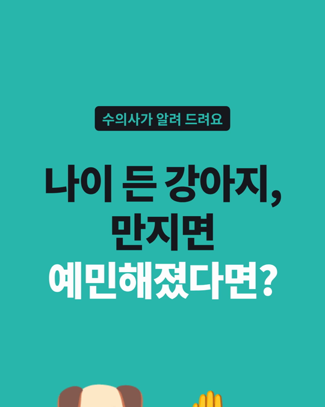
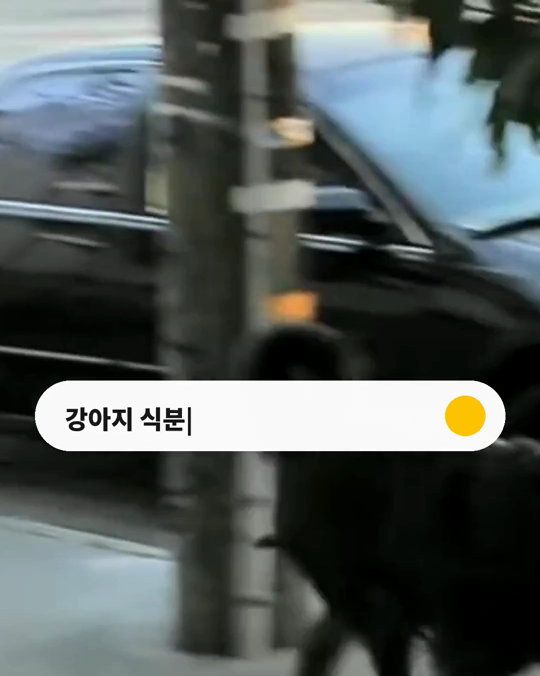
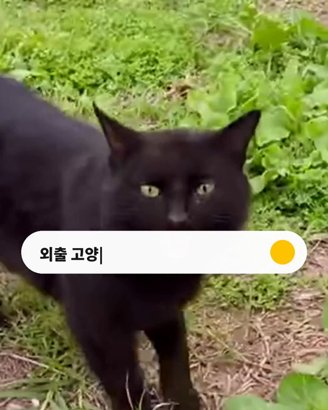
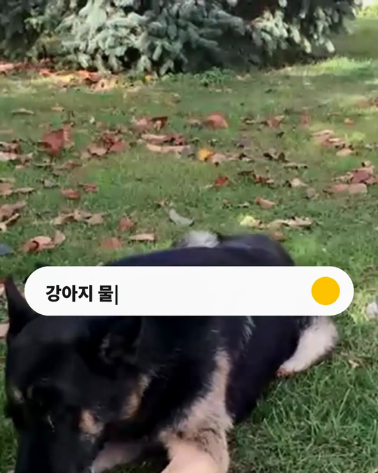
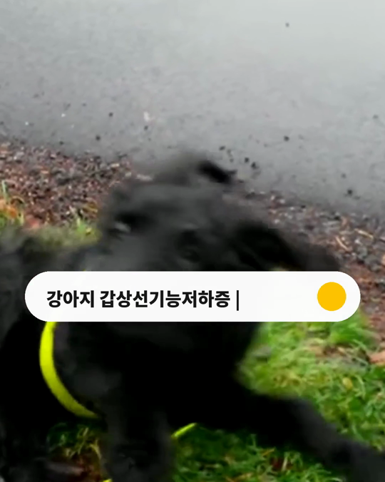

동물병원에서 일하는 수의사 박근필이 매일 씁니다. 강아지·고양이 건강 이야기는 최신 논문과 학회 지침을 직접 확인한 것만 적고, 펫로스 이야기는 펫로스 치유 글쓰기(펫러스, PETLUS) 현장에서 나온 글입니다.
이 노트는 진단을 대신하지 않습니다. 아이가 걱정되면 가까운 동물병원에서 먼저 확인해 주세요.
2026년 10월 6일글 9편 · 긴 글 1나이 든 강아지, 만지면 예민해지고 뚜렷한 이유 없이 짖는다면 — 노령견 삶의 질 · 암 진단을 받은 강아지, 기본 백신 항체는 남아 있을까 · 날고기 사료와 항생제 내성균, 수의사와 보호자는 다르게 본다 · 고양이도 조류인플루엔자(H5N1)에 걸린다 — 보호자가 할 일 · 척추를 다친 고양이, 수술 뒤 8주면 대부분 다시 걸었다 · 나이 든 고양이의 관절 통증, 치료하면 달라진다 — 숨기는 통증 · 어릴 때 반려동물을 보낸 경험이 남기는 것 — 미국 36명 인터뷰 · 암에 걸린 강아지, 보호자들이 결정의 기준으로 삼은 것은 「좋은 날」 · 당뇨가 있는 강아지를 돌보는 보호자의 무게 — 노르웨이 수의사 125명
강아지
나이 든 강아지, 만지면 예민해지고 뚜렷한 이유 없이 짖는다면

슬로바키아 코시체 수의대 연구진이 8살 이상 강아지 789마리의 보호자에게 설문했습니다(2026년 발표). 만질 때 더 예민하게 반응하는 강아지, 뚜렷한 이유 없이 짖는 강아지는 보호자가 느끼는 삶의 질이 더 낮았습니다. 나이와 앓는 병의 개수를 함께 따져도 결과는 같았습니다. 오히려 앓는 병의 개수 자체는 삶의 질과 따로 연결되지 않았습니다. 잘 걷고 잘 움직이는 강아지일수록 삶의 질이 낮을 가능성은 줄었습니다.
✔ 만지면 피하거나 으르렁대는 자리가 있는지 살피기 ✔ 짖는 시간·상황을 짧게 적어 두기 ✔ 산책 거리·계단 오르기가 줄었는지 보기 ✔ 이런 변화가 보이면 진료로 통증이나 인지 변화가 있는지 확인하기
한 번 물어본 설문이라 원인과 결과는 알 수 없습니다(연구진도 밝혔습니다). 그래도 「나이 들어서 그렇다」로만 넘기지 말고, 진료로 이유부터 확인해 주세요.
이탈리아 밀라노 대학 연구진이 암 진단을 받고 아직 항암치료를 시작하지 않은, 기본 접종을 마친 강아지 120마리의 항체를 검사했습니다(2026년 발표). 보호 수준의 항체가 파보바이러스 93.3%, 개 아데노바이러스 1형(전염성 간염) 86.6%, 디스템퍼 79.2%의 강아지에게 남아 있었습니다. 파보바이러스 항체는 마지막 접종 뒤 3년이 지나도 잘 유지됐습니다. 디스템퍼·아데노바이러스 1형 항체는 마지막 접종 뒤 시간이 지날수록 영향을 받았습니다. 연구진은 암이 있는 강아지에게 기본 백신 추가 접종이 당장 서두를 일은 아닐 수 있다고 봤습니다.
✔ 추가 접종 전에 항체검사로 확인할 수 있는지 담당 수의사에게 묻기 ✔ 마지막 접종 날짜를 수첩이나 휴대폰에 적어 두기 ✔ 항암치료를 앞두고 있다면 접종 일정을 치료 계획과 함께 정하기
병원에서 바로 하는 간이 항체검사(반정량)로 본 결과입니다. 접종을 할지 미룰지는 강아지 상태를 아는 담당 수의사와 함께 정해 주세요.
영국 리버풀 대학 연구진이 수의사·동물간호사 그룹 3개와 보호자 그룹 3개의 집단 면담, 온라인 게시판 글타래 34개를 분석했습니다(2026년 발표). 모든 모임이 세균을 위험으로 봤지만, 영양 같은 다른 걱정보다는 덜 중요하게 여겼습니다. 수의사들은 생산 과정 여러 단계에서 항생제가 잘 듣지 않는 세균(내성균)이 들어갈 수 있다고 걱정했습니다. 생식을 먹이는 보호자들은 제조 과정과 강아지의 면역을 수의사보다 더 믿었습니다. 연구진은 날고기 사료의 생산 과정을 더 엄격하게 관리해야 한다고 했습니다.
✔ 날고기를 만진 뒤에는 손을 비누로 씻기 ✔ 강아지 밥그릇은 먹고 나면 바로 씻기 ✔ 해동·손질 도구를 사람 음식 도구와 나눠 쓰기 ✔ 집에 어린 자녀·어르신·면역이 약한 가족이 있다면 담당 수의사와 먼저 상의하기
생각을 들어 본 연구라, 이 연구만으로 위험의 크기를 말할 수는 없습니다. 먹이기로 했다면, 위생부터 꼼꼼히 챙겨 주세요.
미국 질병통제예방센터(CDC) 연구진이 수의사에게 보내는 글을 냈습니다(2026년 10월). 집고양이 감염이 잇따라 확인되면서, H5N1이 돌고 있는 지역에서는 고양이를 진료하는 수의사에게도 위험이 있다고 했습니다. 고양이가 사람에게 옮길 위험은 지금은 낮지만, 주의가 필요하다고 했습니다.
CDC 보호자 안내문이 권하는 것은 아래와 같습니다. ✔ 날고기 사료와 살균하지 않은 우유는 주지 않기 ✔ 야생 조류·닭 같은 가금류·죽은 동물과 닿지 않게 하기 ✔ 밖에서 새나 가금류를 만졌다면 옷을 갈아입고 손을 씻은 뒤 고양이 만지기 ✔ 열, 기운 없음, 식욕 저하, 눈 충혈, 눈곱·콧물, 숨쉬기 힘들어함, 떨림·경련·비틀거림·앞을 못 보는 모습이 보이면 진료받기
진료받을 때는 새나 죽은 동물과 닿았을 수 있다는 사실을 미리 알려 주세요. 고양이를 안 키울 이유가 아니라, 날 음식과 야생 조류를 멀리할 이유입니다.
프랑스 연구진이 척추 골절·탈구로 수술받은 고양이 30마리의 기록을 돌아봤습니다(2026년 발표). 수술 8주 뒤 28마리가 스스로 걸었고, 길게 보면 23마리가 완전히 회복했습니다. 수술이 늦어졌거나 뼈를 완전히 맞추지 못한 경우에도 회복이 좋았습니다. 보호자 평가에서 29마리 중 27마리가 회복이 좋거나 매우 좋았습니다. 다만 수술 전, 다리를 세게 꼬집어도 아픔을 느끼지 못할 만큼 신경이 크게 다친(심부통각 소실) 고양이 2마리는 회복되지 않았습니다.
✔ 다친 뒤 다리를 끌거나 못 쓰면 바로 병원에 가기 ✔ 옮길 때는 판자나 이동장 바닥처럼 평평한 곳에 눕혀 등이 휘지 않게 하기 ✔ 오줌을 못 누거나 흘리면 함께 알리기
동물병원 한 곳의 기록을 돌아본 연구라 고양이 수가 많지 않습니다. 그래도 「척추를 다치면 끝」은 아닙니다. 다친 직후 빨리 진료받는 것이 먼저입니다.
관절염이 있는 고양이 307마리(나이 중앙값 11살)를 두 무리로 나눈 미국·벨기에 연구진의 여러 동물병원 시험이 나왔습니다(2026년 발표). 석 달에 한 번 맞는 관절 통증 주사약을 맞은 무리는 73.0%, 가짜 약을 받은 무리는 46.8%가 보호자 평가에서 좋아졌습니다. 삶의 질, 기분, 수의사의 통증 평가도 치료 무리가 더 나았습니다. 가짜 약 무리도 절반 가까이 좋아졌다고 평가돼, 보호자 평가에는 기대가 섞일 수 있습니다.
✔ 높은 곳에 오르기 전에 머뭇거리는지 보기 ✔ 그루밍이 줄어 털이 뭉치는지 보기 ✔ 화장실 밖에 실수하는지 보기 ✔ 이런 변화가 보이면 진료로 관절 통증부터 확인하기
제약사가 진행한 시험입니다. 치료 방법은 고양이마다 다르니 담당 수의사와 정해 주세요. 고양이 관절 통증은 숨기기 쉽고, 치료하면 나아질 수 있습니다.
미국 노스이스턴 대학 연구진이 17~60살 36명(평균 24살)에게 반려동물을 키우고 잃은 경험이 생각에 남긴 것을 물었습니다(2026년 발표). 어릴 때 반려동물을 보낸 경험 덕분에, 훗날 사람과의 이별을 견디고 슬픔을 이해하는 데 도움이 됐다는 사람이 있었습니다. 반대로 반려동물을 보낸 뒤 삶이 짧다는 생각에 죽음이 더 두려워졌다는 사람도 있었습니다. 연구진은 반려동물과의 유대가 사람의 생각과 행동에 깊이 남는다고 했습니다.
✔ 자녀가 함께 키운 아이를 보냈다면, 슬퍼해도 된다고 말해 주기 ✔ 그 아이와의 추억을 가족이 함께 이야기하기 ✔ 말로 하기 어려우면 그 아이에게 편지를 써 보기
혼자 견디기 어려운 날이라면 전화로 이야기해도 됩니다. 사랑의전화복지재단 상담센터 1566-2525 (펫로스 상담) 자살예방상담전화 109 · 정신건강위기상담 1577-0199
영국 서리 대학 연구진이 강아지 암에 관한 공개 온라인 글 11,878개를 분석했습니다(2026년 발표). 글의 66%가 부정적이었고, 가장 많은 감정은 슬픔(64%)이었습니다. 보호자들은 완치보다 삶의 질을 기준으로 결정했습니다. 그 기준은 식욕, 움직임, 편안함, 함께하는 즐거움, 그리고 「좋은 날」이었습니다. 비용이 치료를 정하는 일도 많았고, 동네 동물병원 수의사는 믿을 만한 정보처로 꾸준히 꼽혔습니다.
✔ 달력에 그날이 좋은 날인지 힘든 날인지 표시하기 ✔ 힘든 날이 늘어나면 그 기록을 들고 담당 수의사와 이야기하기 ✔ 비용 걱정도 처음부터 솔직하게 묻기
혼자 견디기 어려운 날이라면 전화로 이야기해도 됩니다. 사랑의전화복지재단 상담센터 1566-2525 (펫로스 상담) 자살예방상담전화 109 · 정신건강위기상담 1577-0199
노르웨이 생명과학대 연구진이 수의사 125명에게 강아지 당뇨 치료 경험을 물었습니다(2026년 발표). 수의사들이 본 보호자의 큰 걱정은 비용과 주사 놓기였습니다. 수의사 셋 중 한 명 가까이가, 혈당 측정·관찰의 어려움이 강아지의 안락사에 직접 영향을 준 적이 있다고 기억했습니다. 수의사들이 짐작한 안락사 비율은 인슐린을 시작하고 한 달 안에 11.5%, 1년 안에 26.9%였습니다.
✔ 비용과 주사가 걱정되면 치료를 시작할 때 솔직하게 말하기 ✔ 주사 놓는 법은 병원에서 직접 보고 연습하기 ✔ 혈당 측정·기록 방법은 담당 수의사와 함께 정하기 ✔ 인슐린 양은 혼자 바꾸지 말고 담당 수의사와 정하기
혼자 견디기 어려운 날이라면 전화로 이야기해도 됩니다. 사랑의전화복지재단 상담센터 1566-2525 (펫로스 상담) 자살예방상담전화 109 · 정신건강위기상담 1577-0199
그 아이를 보내고 나면 이름을 부를 일이 갑자기 사라집니다. 밥 먹자, 산책 가자, 이리 와. 하루에도 수십 번 부르던 이름이 집 안에서 멈춥니다. 주변에서도 그 이름을 조심스럽게 피합니다. 그래서 편지를 권합니다. 편지는 그 이름을 다시 부를 수 있는 자리이기 때문입니다.
무슨 말부터 써야 할지 모르겠어요
첫 줄은 이름 하나면 충분합니다. 「○○야,」 쉼표까지 쓰고 나면, 그다음 말은 대개 저절로 따라옵니다. 잘 써야 한다는 생각은 내려놓으셔도 됩니다. 그 아이는 맞춤법을 따지지 않습니다.
미안하다는 말만 계속 나와요
괜찮습니다. 미안한 마음이 먼저 나오는 분이 많습니다. 다만 미안하다는 말 뒤에, 그 아이와 함께한 장면을 하나만 덧붙여 보세요. 처음 집에 온 날, 좋아하던 간식, 창가에서 졸던 오후. 미안함 옆에 고마운 장면이 나란히 놓이면, 편지는 사과문이 아니라 그 아이의 삶을 기억하는 글이 됩니다.
다 쓰고 나면 어떻게 하나요?
소리 내어 한 번 읽어 보세요. 그 이름이 다시 내 목소리로 불립니다. 간직하고 싶다면 그대로 두셔도 되고, 같은 마음을 가진 분들과 나누고 싶다면 펫러스(PETLUS) 쉼터에 남기셔도 됩니다. 쉼터에는 가입도, 내 이름도 필요 없습니다. 혼자 견디기 어려운 날이라면 사랑의전화복지재단 펫로스 상담(1566-2525), 자살예방상담전화 109, 정신건강위기상담전화 1577-0199에 전화해 주세요. 글쓰기는 전문 상담을 대신하지 않습니다.
이 글은 상담이나 치료를 대신하지 않습니다. 마음이 많이 힘드실 때는 자살예방상담전화 109, 정신건강위기상담 1577-0199(24시간)로 먼저 연락해 주세요.
2026년 10월 5일글 9편 · 긴 글 1똥을 먹는 강아지, 장 건강은 괜찮을까 — 강아지 식분증 · 강아지 예방접종, 보호자 2,585명은 어떻게 하고 있을까 · 나이 들수록 보호자 곁을 더 찾는 강아지 — 노령견의 애착 · 실내 고양이, 한 살부터 살찔 위험이 높았다 — 덴마크 192마리 · 보호자가 바른 소염진통 크림, 고양이에게 위험할 수 있다 · 혼자 밖에 나가는 고양이, 사람에게 옮을 수 있는 병원체 3~5배 · 슬픔을 말하지 못한 사람일수록 더 힘들었다 — 튀르키예 210명 · 치매 노견을 돌보는 보호자의 마음 — 헝가리 보호자 22명 · 마지막을 판단할 때, 삶의 질 평가표를 쓴 사람은 7.3%
강아지
똥을 먹는 강아지, 장 건강은 괜찮을까요?

이탈리아 밀라노 대학 연구진이 건강한 강아지 44마리를 비교했습니다(2026년 발표). 보호자가 똥을 먹는다고 답한 23마리와 그렇지 않은 21마리의 변을 검사했습니다. 장내 세균의 균형, 주요 장내 세균의 양, 설사를 일으키는 세균·파보바이러스 검출 모두 두 무리 사이에 차이가 없었습니다. 병원균은 두 무리 모두 거의 나오지 않았습니다.
✔ 배변은 바로 치워 먹을 기회를 줄이기 ✔ 산책길 다른 동물의 똥은 먹지 못하게 하기(기생충 위험) ✔ 먹으려 할 때 혼내기보다 「이리 와」로 불러 간식으로 바꿔 주기 ✔ 갑자기 시작했거나 살이 빠지면 진료로 원인 확인하기
기생충은 검사하지 않았고, 44마리를 본 작은 연구입니다. 똥을 먹어도 괜찮다는 뜻은 아니니, 먹을 기회부터 줄여 주세요.
영국 링컨 대학 연구진이 강아지 보호자 2,585명을 온라인으로 설문했습니다(2026년 발표). 79%가 지난 1년 안에 접종을 했습니다. 미국·캐나다 응답자는 89%, 영국 응답자는 70%로 나라마다 차이가 컸습니다.
접종과 가장 강하게 이어진 요인은 호텔처럼 맡기는 곳에서 접종 증명을 요구하는 것이었습니다. 「병원 갈 시간이 없다」고 답한 보호자는 접종을 안 했을 가능성이 높았습니다. 추가 접종 전에 항체 검사를 한 보호자는 13%였습니다. 연구진은 접종을 꺼리는 분위기가 널리 퍼졌다는 증거는 없었다고 했습니다.
✔ 다음 접종 날짜를 달력에 적어 두기 ✔ 어떤 접종이 필요한지 생활환경을 말하고 수의사와 정하기 ✔ 기본 백신 추가 접종 전에 항체 검사를 원하면 담당 수의사와 상의하기(광견병은 법정 접종)
응답자 대부분이 유럽·미국의 여성 보호자였고, 한국 자료는 아닙니다. 접종 주기는 백신마다 다르니, 우리 강아지 기준은 담당 수의사와 정해 주세요.
헝가리 연구진이 강아지 222마리가 보호자와 잠시 떨어졌다 다시 만나는 실험을 했습니다(2026년 발표). 강아지 시절, 어른 강아지, 노령견으로 나눠 봤습니다.
6개월이 안 된 강아지도 이미 보호자에게 애착 행동을 보였습니다. 7살 이상 강아지는 나이가 많을수록 보호자에 대한 애착 점수가 높았습니다. 1~7살 어른 강아지는 나이가 들수록 낯선 사람을 더 잘 받아들였습니다. 훈련을 많이 받은 강아지는 낯선 상황에서 덜 불안해했습니다.
✔ 노령견이 따라다니면 귀찮아하기보다 곁에 있는 시간을 늘려 주기 ✔ 외출할 때는 짧은 연습부터 해서 혼자 있는 시간에 익숙해지게 하기 ✔ 갑자기 심하게 매달리거나 저녁마다 헤매면 진료로 확인하기
나이대가 다른 강아지를 한 번 비교한 낯선 방 실험이라, 집에서의 모습과는 다를 수 있습니다. 나이 든 강아지가 곁을 찾는 마음을 알아봐 주세요.
덴마크 코펜하겐 대학 연구진이 집을 찾아가 성묘 192마리의 체형을 직접 쟀습니다(2026년 발표). 35%가 체형 점수 9점 중 7점 이상(뚜렷한 과체중·비만)이었습니다.
실내에서만 사는 단모종(품종이 정해지지 않은 짧은 털 고양이)은 한 살부터 비만 위험이 높았습니다. 밖에 나가는 단모종은 위험이 천천히 올라 7살 무렵에 가장 높았습니다. 품종 고양이는 나이에 따른 차이가 크지 않았습니다. 비만 고양이의 보호자는 고양이에게 더 강한 애착을 보였고, 고양이를 덜 활발하다고 느꼈습니다.
✔ 사료는 컵 대신 저울로 재어 주기 ✔ 날마다 짧게 여러 번 사냥 놀이 해 주기 ✔ 간식은 하루 먹는 양 안에서 주기 ✔ 몸무게를 정기적으로 재기
덴마크 고양이를 본 연구라, 국내 고양이와 다를 수 있습니다. 애착이 비만의 원인인지는 아직 모릅니다. 실내에서 키우지 말라는 뜻이 아니라, 실내 고양이일수록 움직일 거리를 더 챙겨 달라는 뜻입니다. 간식보다 함께 노는 시간을 늘려 주세요.
캐나다 서스캐처원 대학 동물병원이 한집에 사는 고양이 2마리의 사례를 보고했습니다(2026년 발표). 7살, 6살 고양이가 밥을 안 먹고 기운이 없어 병원에 왔습니다. 두 마리 모두 간 수치가 크게 올라 있었습니다. 보호자는 석 달 동안 디클로페낙 10% 크림을 바르고 있었고, 두 고양이의 혈액에서 디클로페낙이 나왔습니다. 한 마리는 치료로 좋아져 퇴원했지만, 한 마리는 상태가 나빠져 떠나보냈습니다.
✔ 크림·파스를 바른 곳은 옷으로 가리고, 고양이가 핥거나 비비지 못하게 하기 ✔ 바른 손은 씻은 뒤 고양이를 만지기 ✔ 고양이에게 사람 진통제·해열제를 먹이지 않기 ✔ 고양이가 밥을 안 먹고 처지면 집에서 쓰는 약을 함께 말하며 진료받기
크림이 간 손상을 일으켰다는 직접 증거는 없었습니다. 고양이에게 얼마부터 위험한지도 아직 알려져 있지 않습니다. 그래도 연구진은 보호자가 바르는 소염진통 크림이 고양이에게 위험할 수 있다고 알렸습니다. 바르는 약은 고양이가 닿지 않게 관리해 주세요.
혼자 밖에 나가는 고양이, 사람에게 옮을 수 있는 병원체에 노출된 흔적이 3~5배 많았습니다.

캐나다 브리티시컬럼비아 대학 연구진이 88개국 고양이 17만 4,064마리의 자료를 모아 분석했습니다(2026년 발표). 병원체 124종 가운데 97종이 사람에게도 옮을 수 있는 병원체였습니다.
보호자 없이 밖을 돌아다니는 집고양이는 실내에서만 사는 고양이보다, 사람에게 옮을 수 있는 병원체에 감염됐거나 노출된 흔적이 나온 경우가 3~5배 많았습니다. 그 비율은 길고양이와 통계적으로 비슷했습니다. 노출된 흔적이 있다고 해서 사람에게 옮긴다는 뜻은 아닙니다. 밖에 나가는 집고양이는 기생충(연충) 종류도 실내 고양이의 1.5배였습니다.
✔ 가능하면 실내에서 지내게 하고, 외출이 꼭 필요하면 하네스를 채워 보호자와 함께하기 ✔ 외출하는 고양이는 구충·예방 계획을 수의사와 정하기 ✔ 화장실 치운 뒤와 고양이를 만진 뒤 손 씻기
여러 나라 연구를 모은 결과라, 한국 고양이에게 그대로 맞는 숫자는 아닙니다. 고양이와 가족 모두를 위해, 혼자 하는 외출은 줄여 주세요.
튀르키예 이즈미르 경제대 연구진이 1년 안에 반려동물을 잃은 성인 210명을 조사했습니다(2025년 발표). 슬픔의 크기를 가장 크게 가른 것은 그 아이와의 애착이었습니다. 그리고 주변의 반응 때문에 슬픔을 드러내지 못하고 참은 사람일수록 더 힘들어했습니다. 안락사로 보냈는지 같은 이별의 방식은, 애착과 주변 반응을 함께 따지자 영향이 줄었습니다.
✔ 그 아이 이야기를 들어 줄 사람 한 명에게 먼저 연락하기 ✔ 말로 하기 어려우면 그 아이에게 편지를 써 보기 ✔ 주변의 반응이 아프다면, 같은 일을 겪은 사람들과 이야기해 보기
혼자 견디기 어려운 날이라면 전화로 이야기해도 됩니다. 사랑의전화복지재단 상담센터 1566-2525 (펫로스 상담) 자살예방상담전화 109 · 정신건강위기상담 1577-0199
헝가리 외트뵈시 로란드 대학 연구진이 인지기능 저하가 의심되는 노견의 보호자 22명을 인터뷰했습니다(2026년 발표). 보호자들은 헤매는 것 같은 변화를 「그냥 나이 들어서」나 다른 병 때문으로 여기다 늦게 알아챘습니다. 수의사에게 충분한 안내를 받지 못해 불안했다는 보호자도 있었습니다. 증상이 늘수록 하루 일과와 집 안 환경을 바꿔 가며 돌봤고, 지침, 불안, 죄책감, 그리고 마지막 결정을 앞둔 슬픔을 함께 겪었습니다.
✔ 변화를 적어 진료 때 「인지기능 저하일 수 있나요?」라고 직접 묻기 ✔ 돌봄을 가족과 나누고, 나를 위한 쉬는 시간 정하기 ✔ 지친 마음은 혼자 품지 말고 이야기하기
혼자 견디기 어려운 날이라면 전화로 이야기해도 됩니다. 사랑의전화복지재단 상담센터 1566-2525 (펫로스 상담) 자살예방상담전화 109 · 정신건강위기상담 1577-0199
헝가리 부다페스트 수의대 연구진이 안락사를 결정해 본 17개국 보호자 228명을 조사했습니다(2026년 발표). 보낸 이유는 병(63.3%)과 나이 듦(31.6%)이 가장 많았습니다. 보호자들은 대부분 자기 눈으로 본 모습(53.5%)이나 수의사의 조언(39.2%)으로 상태를 판단했고, 삶의 질 평가표를 쓴 사람은 7.3%였습니다. 결정에 영향을 준 요인으로 그 아이와의 정을 꼽은 보호자가 69.3%였습니다. 수의사에게 마음의 지지를 받았다고 답한 보호자는 마음의 부담이 덜했고, 설명에도 더 만족했습니다.
✔ 먹기·움직임·통증·좋아하던 일을 날마다 적어 보기 ✔ 삶의 질 평가표를 수의사와 함께 써 보기 ✔ 힘든 마음도 수의사에게 솔직하게 말하기
혼자 견디기 어려운 날이라면 전화로 이야기해도 됩니다. 사랑의전화복지재단 상담센터 1566-2525 (펫로스 상담) 자살예방상담전화 109 · 정신건강위기상담 1577-0199
아이가 떠난 날, 무엇부터 해야 할지 몰라 검색창 앞에 앉아 계신 분이 많습니다. 그날 꼭 결정해야 하는 일은 생각보다 적습니다. 먼저 마음껏 인사하셔도 됩니다.
법이 정한 방법은 무엇인가요?
세 가지입니다. 하나, 동물병원에서 떠났다면 병원에 맡기는 방법입니다(의료폐기물로 처리). 둘, 종량제 봉투에 담아 내놓는 방법입니다. 셋, 허가받은 동물장묘업체에서 화장·건조장·수분해장을 하는 방법입니다.
마당이나 산에 묻어도 되나요?
안 됩니다. 내 땅이어도 묻는 것은 법에 어긋납니다. 한국소비자원이 2022년, 최근 5년 안에 반려동물을 떠나보낸 소비자 1,000명에게 물었더니 41%가 주거지나 야산에 묻거나 버렸다고 답했습니다. 불법인 줄 몰랐다는 응답도 45%였습니다. 이미 묻으셨다면 몰랐기 때문이지, 잘못 사랑해서가 아닙니다.
30일 안에 해야 하는 일이 있나요?
있습니다. 동물등록을 한 아이라면 떠난 날부터 30일 안에 등록 말소 신고를 해야 합니다. 하지 않으면 과태료가 부과될 수 있습니다. 신고는 시·군·구청이나 국가동물보호정보시스템에서 할 수 있습니다. 같은 조사에서 응답자 전체의 59%가 말소 신고를 하지 않았다고 답했습니다(처음부터 등록하지 않은 경우 포함).
마음이 정리되지 않는다면요?
아이에게 편지를 남기고 싶다면 「펫러스(PETLUS) 쉼터」가 있습니다. 혼자 견디기 어렵다면 사랑의전화복지재단 펫로스 상담(1566-2525), 자살예방상담전화 109, 정신건강위기상담전화 1577-0199에 전화해 주세요. 글쓰기는 전문 상담을 대신하지 않습니다.
이 글은 상담이나 치료를 대신하지 않습니다. 마음이 많이 힘드실 때는 자살예방상담전화 109, 정신건강위기상담 1577-0199(24시간)로 먼저 연락해 주세요.
2026년 10월 4일글 18편 · 긴 글 2안아 주고 뽀뽀하다 물린다 — 강아지에게 물리는 순간 · 노령견이 집 안에서 실수를 한다면 — 강아지 인지기능 저하 신호 · 단두종 강아지 코골이 — 자는 동안 숨이 막힐 수 있습니다 · 고양이는 아파도 숨긴다 — 응급 진료 고양이 4건 중 1건은 생명이 위급 · 7년 동안 지켜본 고양이 209마리 — 나이 들면 가장 흔한 병 · 집 안에만 사는 고양이도 예방접종이 필요할까 · 반려동물과의 이별이 가장 힘들었다는 사람들 — 영국 975명 조사 · 떠난 강아지에게 부고를 쓰는 사람들 — 추모글 102편이 남긴 것 · 마지막 결정을 돌아본 보호자 143명 — 도움이 된 것은 미리 나눈 이야기 · 오래가는 기침, 소형 노령견이라면 — 강아지 기관허탈 · 강아지도 질투할까 — 보이지 않아도 반응했다 · 유독 먹을 것을 밝히는 강아지 — 식탐 유전자 연구 · 고양이 눈 질환, 가장 많이 탈이 나는 곳은 각막 · 고양이는 보호자가 고양이에게 하는 말투를 구별한다 · 고양이 사료, 완전한 한 끼인지 어떻게 알까 — 2028년 「반려동물완전사료」 · 아픈 마지막 모습만 자꾸 떠오를 때 · 다시 키우기 전에 정해 둘 세 가지 · 반려동물을 보낸 날 묻지 못한 것, 지금 담당 수의사에게 물어도 됩니다
강아지
강아지에게 물리는 순간, 언제가 가장 많을까요?

태국 수의대 연구진이 강아지 보호자 1,053명에게 물었습니다(2026년 발표). 45.5%가 자기 강아지에게 물리거나 긁힌 적이 있다고 답했습니다.
다친 보호자들이 꼽은 순간은 이랬습니다(여러 개 고를 수 있음). 발톱 깎기·목욕·빗질 같은 손질이나 약 먹일 때 27.3% 음식·장난감·밥그릇을 뺏을 때 24.4% 강아지끼리 싸움을 말릴 때 23.2% 쓰다듬고, 안고, 뽀뽀할 때 22.1% 맨손으로 놀아 주거나 손을 물게 둘 때 21.3% 18~34살 보호자는 특히 손질할 때와 자주 쓰다듬을 때 더 많이 다쳤습니다.
✔ 싫어하는 손질은 짧게 나눠, 간식과 함께 조금씩 연습하기 ✔ 먹고 있는 그릇·장난감은 손으로 뺏지 말고 다른 간식과 바꾸기 ✔ 강아지가 몸을 굳히거나 고개를 돌리면 안기·뽀뽀를 멈추기 ✔ 강아지끼리 싸울 땐 맨손을 넣지 말고 판자·쿠션 같은 물건을 사이에 넣기
태국 보호자가 기억해서 답한 설문이라, 얼마나 세게 물렸는지는 나누지 않았습니다. 피부가 뚫리게 물렸다면 흐르는 물과 비누로 충분히 씻고, 붓거나 열이 나기 전에 사람 병원 진료를 받아 주세요.
미국 노스캐롤라이나 주립대 연구진이 평균 12.8살 노령견 84마리를 반년마다 검사했습니다(2026년 발표). 소변 검사, 보호자 설문, 인지 과제를 함께 봤습니다.
소변 검사 231번에서 감염이 의심되는 소견이나 피가 섞인 소변 같은 이상은 예상보다 적었습니다. 대신 실수가 잦은 강아지일수록 나이가 많았고, 소변이 묽었습니다. 그리고 투명한 통 속 간식에 바로 달려들지 않고 옆으로 돌아가 꺼내기, 늘 가던 쪽 구멍이 막히면 반대쪽으로 가기 같은 인지 과제를 더 어려워했습니다. 연구진은 노령견의 실수가 방광 문제만이 아니라 인지기능 저하의 신호일 수 있다고 했습니다.
✔ 실수한 날짜·시간·장소를 적어 진료 때 보여 주기 ✔ 혼내지 말고 배변 장소를 더 자주, 더 가까이 안내하기 ✔ 물을 많이 마시거나 소변 양이 늘었는지도 살펴보기
84마리를 본 연구라, 실수하는 노령견이 모두 인지기능 문제라는 뜻은 아닙니다. 방광염·신장 질환 같은 병도 있으니, 나이 탓으로만 넘기지 말고 진료로 확인해 주세요.
핀란드 헬싱키 대학 연구진이 강아지의 수면 중 호흡 문제를 정리했습니다(2026년 발표). 퍼그·프렌치 불도그·시추처럼 코가 짧은 개(단두종)는 콧속과 목의 숨길이 좁습니다. 그래서 자는 동안 숨길이 반쯤 또는 완전히 막히는 일이 되풀이될 수 있습니다. 그때마다 몸속 산소가 떨어지고, 사람의 수면무호흡처럼 몸에 부담이 쌓일 수 있다고 했습니다. 위험을 높이는 것으로는 짧은 코, 숨쉬기 힘든 증상, 그리고 비만을 꼽았습니다. 수술이나 체중 관리로 일부 나아질 수 있다고도 했습니다.
✔ 자는 모습을 1~2분 영상으로 찍어 진료 때 보여 주기 ✔ 강아지가 살이 쪘다면 체중부터 줄이기 ✔ 앉은 채로 졸거나, 자다가 자주 깨거나, 낮에 유난히 지쳐 보이면 진료로 확인하기
여러 연구를 모은 정리 글이라, 코 고는 개가 모두 위험하다는 뜻은 아닙니다. 잇몸이나 혀가 파래지거나 숨이 몹시 가쁘면 바로 병원에 가 주세요.
독일 베를린 자유대 연구진이 한 동물병원의 2021년 진료 시간 외 응급 진료(평일 밤·주말·공휴일) 4,579건(강아지 3,189건·고양이 1,390건)을 응급 단계로 나눠 봤습니다(2026년 발표). 전체의 절반 넘게는 정규 진료 시간에 와도 되는 경우였습니다. 그런데 생명이 위급한 단계로 온 비율은 고양이 24.8%, 강아지 7.4%였습니다. 비율로 보면 고양이가 약 3배 높았습니다. 연구진은 여러 이유 가운데 하나로, 고양이가 병을 숨기는 습성 때문에 병원에 왔을 때 이미 상태가 나쁜 경우가 많을 수 있다고 봤습니다.
✔ 입을 벌리고 숨 쉬거나 숨이 가쁘면 바로 병원 ✔ 화장실을 들락거리는데 소변이 안 나오면 바로 병원(특히 수컷) ✔ 하루 이상 거의 안 먹으면 미루지 말고 진료 ✔ 잠잘 때 1분 동안 숨 쉬는 횟수와 평소 먹는 양을 알아 두기
독일의 한 병원 기록이라, 모든 고양이에게 같은 비율이 나온다는 뜻은 아닙니다. 고양이가 「조금 이상하다」 싶을 때가 진료받을 때입니다.
영국 리버풀 대학 연구진이 7~10살 중년 고양이 209마리를 반년마다 검진하며 최대 7년 동안 지켜봤습니다(2026년 발표). 가장 흔한 것은 치아 질환 84%, 관절·뼈 검사 이상 82%, 심장 잡음 59%였습니다. 96%가 한 가지 이상, 84%가 두 가지 이상의 문제를 갖게 됐습니다. 기대수명 중간값은 15.2년이었습니다.
중년에 근육이 빠져 있던 고양이는 그렇지 않은 고양이보다 사망 위험이 약 2배였습니다. 품종 고양이도 믹스 고양이보다 사망 위험이 높았습니다. 연구진은 건강한 노년을 위한 관리가 중년부터 시작돼야 한다고 했습니다.
✔ 중년(7살 무렵)부터 반년마다 몸무게 재기 ✔ 등뼈·엉덩이뼈가 도드라지게 근육이 빠지면 진료 때 말하기 ✔ 높은 곳에 덜 올라가면 나이 탓 말고 관절 통증 확인하기 ✔ 입 냄새가 나거나 한쪽으로 씹으면 치아 검진 받기
영국 고양이 209마리의 결과이고, 사료 회사가 연구비를 대고 그 회사 연구소 소속 저자도 참여했습니다(회사는 설계·분석에 관여하지 않았다고 밝힘). 「나이 들어서 그렇겠지」 싶은 변화가 진료가 필요한 신호일 수 있습니다.
미국·일본·유럽 등 14개국 고양이 보호자 5,071명과 수의사 1,330명을 설문한 연구가 있습니다(2026년 발표). 접종하지 않은 보호자는 「건강하니까」 27%, 「실내 고양이니까」 27%를 이유로 꼽았습니다. 고양이 건강을 지키는 비결 세 가지를 자유롭게 꼽게 하자, 예방접종을 꼽은 비율은 수의사 69%, 보호자 16%로 차이가 컸습니다. 보호자 58%는 수의사에게서 접종 정보를 얻는다고 했지만, 접종이 왜 중요한지 알려 주는 안내 자료를 보호자에게 나눠 준다는 수의사는 23%였습니다.
✔ 실내 고양이도 보호자 옷·신발로 바이러스가 들어올 수 있다는 것 알아 두기 ✔ 어떤 접종을 얼마나 자주 할지 생활환경을 말하고 수의사와 정하기 ✔ 접종이 없는 해에도 1년에 한 번 건강검진 받기 ✔ 접종 뒤 몇 시간 안에 얼굴이 붓거나 토하거나 숨이 가쁘면 바로 병원 ✔ 접종 자리 멍울이 석 달 넘게 가거나 커지면 진료
백신 회사가 진행한 설문이고, 한국은 조사 나라에 들어 있지 않습니다. 나라와 생활환경에 따라 필요한 접종이 다르니, 우리 고양이 기준은 담당 수의사와 정해 주세요.
아일랜드 메이누스 대학 연구자가 영국 성인 975명을 조사했습니다(2026년 발표). 32.6%가 사랑하던 반려동물을 잃은 적이 있었습니다. 그 가운데 21.0%는 사람을 잃은 경험보다 반려동물과의 이별을 가장 힘든 이별로 꼽았습니다.
반려동물을 잃은 뒤 슬픔이 오래 일상을 무너뜨리는 경우는 7.5%로, 사람을 잃은 여러 경우와 비슷했습니다. 연구자는 그 슬픔이 사람을 잃었을 때와 같은 모습으로 나타난다고 했습니다. 지금의 진단 기준은 사람을 잃었을 때만 이 상태를 진단할 수 있게 되어 있는데, 연구자는 이 점을 다시 생각해 봐야 한다고 했습니다.
✔ 「겨우 동물인데」라는 말로 자신의 슬픔을 줄이지 않기 ✔ 혼자 감당하기 어렵거나, 슬픔이 오래 잠·밥·일을 무너뜨리면 전문가와 이야기하기 ✔ 그 아이 이야기를 들어 줄 사람 한 명에게 먼저 연락하기
혼자 견디기 어려운 날이라면 전화로 이야기해도 됩니다. 사랑의전화복지재단 상담센터 1566-2525 (펫로스 상담) 자살예방상담전화 109 · 정신건강위기상담 1577-0199
영국에서 한 번 조사한 결과이고, 슬픔이 오래가는 사람이 모두 병이라는 뜻은 아닙니다. 슬퍼하는 일이 약해서가 아니라, 그만큼 사랑했기 때문이라는 것을 기억해 주세요.
미국 콜로라도 주립대 연구진이 온라인에 남겨진 강아지 추모글 102편을 읽었습니다(2026년 발표). 반려견뿐 아니라 치료 도우미견, 경찰견을 보낸 사람들의 글도 함께 봤습니다.
어떤 관계였든, 추모글은 그 아이와 보낸 삶의 의미를 찾고, 슬픔을 인정받고, 그 아이가 남긴 것을 정리하는 자리였습니다. 떠난 뒤에도 이어지는 마음을 글로 붙잡아 두는 사람이 많았습니다. 연구진은 반려견을 잃은 슬픔이 주변에서 충분히 인정받지 못할 때가 많다고 했습니다.
✔ 그 아이의 이름, 함께한 해, 가장 좋아하던 것을 세 줄로 적어 보기 ✔ 그 아이가 내 삶에 남긴 것 하나를 한 문장으로 쓰기 ✔ 쓰다가 마음이 무거워지면 잠시 멈추고 쉬기
혼자 견디기 어려운 날이라면 전화로 이야기해도 됩니다. 사랑의전화복지재단 상담센터 1566-2525 (펫로스 상담) 자살예방상담전화 109 · 정신건강위기상담 1577-0199
공개된 추모글 102편을 읽은 연구라, 쓰면 누구나 나아진다는 뜻은 아닙니다. 글은 잘 쓰지 않아도 됩니다. 그 아이를 기억하는 한 줄이면 충분합니다.
미국 콜로라도 주립대 연구진이 반려동물의 마지막을 겪은 보호자 143명의 글을 읽었습니다(2025년 조사, 2026년 발표). 가장 힘들었던 것은 보낼지, 언제 보낼지를 정하는 일이었습니다. 보호자들은 그 아이의 상태, 가족의 마음, 비용, 그리고 지쳐 가는 자신의 몸과 마음까지 함께 저울질했습니다. 그 과정에서 슬픔과 후회, 죄책감을 함께 느꼈습니다.
도움이 된 것은 수의사의 따뜻함과 솔직한 설명, 그리고 미리 앞을 내다보고 함께 계획해 준 것이었습니다. 그 덕분에 마지막 시간을 가족과 함께 의미 있게 준비할 수 있었다고 했습니다.
✔ 상태가 나빠지기 전에, 어떤 때 결정을 생각해야 하는지 수의사에게 미리 묻기 ✔ 마지막에 함께하고 싶은 가족·장소·물건을 적어 두기 ✔ 결정 뒤 남은 죄책감은 혼자 품지 말고 이야기하기
혼자 견디기 어려운 날이라면 전화로 이야기해도 됩니다. 사랑의전화복지재단 상담센터 1566-2525 (펫로스 상담) 자살예방상담전화 109 · 정신건강위기상담 1577-0199
임종 돌봄 업체를 통해 모은 미국 보호자들의 글이라, 모든 보호자의 경험과 같지는 않습니다. 어떤 결정을 했든, 그 아이를 위해 고민한 시간이 사랑이었다는 것을 기억해 주세요.
서울대 수의대 연구진이 2022~2024년 기침 때문에 서울대 동물병원을 찾아 기관허탈로 진단된 소형견 110마리의 기록을 분석했습니다(국내, 2024년). 몰티즈 30.9%, 포메라니안 22.7%, 푸들 15.5%, 치와와 7.3% 순이었고, 91.8%가 8살을 넘었습니다. 98.1%가 오래가는 기침을 했고, 55.4%는 심장 판막 질환도 함께 있었습니다.
체형 점수(살찐 정도)가 높을수록, 그리고 몸무게가 적게 나가는 작은 개일수록 기관이 더 좁아져 있었습니다. 그런데 기관을 눌렀을 때 나오는 기침의 정도로는 기관이 얼마나 좁아졌는지 알 수 없었습니다. 체중 조절, 생활환경 바꾸기, 약물 치료 등을 한 뒤 다시 확인한 개 가운데 86.6%에서 증상이 나아졌습니다.
✔ 강아지가 기침하는 모습을 영상으로 찍어 진료 때 보여 주기 ✔ 강아지가 살이 쪘다면 수의사와 체중 목표 정하기 ✔ 잇몸이나 혀가 파래지거나 숨이 가쁘면 바로 병원 가기
기관허탈로 진단된 강아지만 모은 기록이라, 전체 강아지 가운데 얼마나 걸리는지는 알 수 없습니다. 기침이 가볍다고 넘기지 말고 진료로 원인을 확인해 주세요.
뉴질랜드 오클랜드 대학 연구진이 강아지 18마리로 실험했습니다(2021년). 보호자가 진짜처럼 생긴 가짜 개 옆에 선 모습을 보여 준 뒤, 칸막이로 가리고 그 가짜 개를 쓰다듬게 했습니다. 강아지들은 눈에 보이지 않는데도 보호자에게 가려고 줄을 세게 당겼습니다. 가짜 개 대신 천으로 만든 원통을 쓰다듬을 때는 훨씬 약하게 당겼습니다.
✔ 다른 개를 쓰다듬을 때 우리 강아지가 끼어들면 혼내기보다, 얌전히 기다릴 때 이름을 불러 함께 쓰다듬기 ✔ 새 식구를 들였다면 먼저 있던 강아지와 보내는 시간도 지키기 ✔ 강아지가 으르렁거리거나 물려는 모습이 되풀이되면 수의사와 상의하기
18마리를 본 작은 연구입니다. 연구진도 강아지가 사람처럼 질투를 느낀다고 말하기는 이르다고 했습니다. 다만 질투를 부르는 상황에는 분명히 반응했으니, 끼어들 때는 혼내기보다 얌전히 기다릴 때 함께 챙겨 주세요.
영국 케임브리지 대학 연구진이 반려견 래브라도 87마리를 조사했습니다(2024년). 래브라도 약 4마리 중 1마리가 가진 POMC 유전자 변이가 있으면, 쉬는 동안 쓰는 열량이 약 25% 적었습니다. 투명한 상자 속 소시지를 꺼내려는 실험에서도 변이가 있는 개가 더 애썼습니다. 더 배고파하면서 열량은 덜 쓰는 셈입니다. 연구진은 이런 개를 날씬하게 지키기가 매우 어렵지만 할 수는 있다고 했습니다.
✔ 강아지 하루 사료와 간식 양을 저울로 재서 정해 두기 ✔ 하루 양을 퍼즐 급여기나 여러 번에 나눠 천천히 먹게 하기 ✔ 강아지 체중이 늘면 수의사와 목표 체중 정하기 ✔ 식욕이 갑자기 늘었다면 버릇이나 유전으로 넘기지 말고 진료로 질환이 없는지 확인하기
래브라도 연구라, 우리나라에 많은 소형견에게도 같은지는 알 수 없습니다. 식탐을 버릇 탓으로만 돌리지 말고, 정해 둔 양 안에서 천천히 먹게 해 주세요.
서울대 수의대 연구진이 2009~2021년 서울대 동물병원 안과를 찾은 고양이 180마리(눈 358개)의 기록을 분석했습니다(국내, 2023년). 눈 358개 가운데 가장 많이 탈이 난 곳은 눈 표면의 각막(28.5%)이었고, 수정체(19.9%), 포도막(15.3%)이 뒤를 이었습니다. 흔한 진단은 각막궤양 13.2%, 포도막염 11.9%, 초기 백내장 11.0% 순이었습니다. 처음 온 나이는 중간값 3살이었고, 1살 미만 고양이가 21.7%로 가장 많았습니다. 엑조틱 숏헤어는 눈꺼풀이 안으로 말리는 안검내반이 더 많았습니다.
✔ 고양이가 한쪽 눈을 계속 감거나, 눈물·눈곱이 늘거나, 눈이 뿌옇게 보이면 진료 받기 ✔ 집에 있던 사람 안약은 고양이 눈에 넣지 않기 ✔ 엑조틱 숏헤어처럼 얼굴이 납작한 고양이는 눈꺼풀이 안으로 말리는지도 살피기
대학 동물병원 안과를 찾은 고양이만 모은 기록이라, 전체 고양이의 발생률은 아닙니다. 어린 고양이도 눈 질환에서 예외가 아니니, 고양이 눈의 변화는 미루지 말고 확인해 주세요.
프랑스 파리 낭테르 대학 연구진이 집고양이 16마리에게 녹음한 목소리를 들려주고 반응을 보았습니다(2022년). 들려준 말은 보호자가 고양이에게 말할 때의 말투와, 어른에게 말할 때의 말투였습니다. 보호자 목소리일 때 고양이들은 자기에게 하는 말투를 구별했습니다. 낯선 사람 목소리일 때는 두 말투를 구별하는 것으로 보이지 않았습니다. 연구진은 고양이와 보호자 사이에 경험으로 쌓인 둘만의 소통이 생길 수 있다고 봤습니다.
✔ 고양이에게는 평소 쓰던 말투로 자주 말 걸기 ✔ 새 가족이나 손님에게는 고양이가 목소리에 익숙해질 시간을 주기 ✔ 말을 걸었는데 고양이가 피하면 억지로 다가가지 않기
16마리를 본 작은 연구라, 모든 고양이가 같다고 볼 수는 없습니다. 그래도 보호자 목소리로 쌓은 경험이 있으니, 오늘도 이름을 불러 말을 걸어 주세요.
우리나라 사료관리법은 지금 반려동물 사료를 단미사료, 보조사료, 배합사료로 나눕니다. 농림축산식품부는 2025년 9월 고시를 고쳐, 2028년 9월부터 「반려동물완전사료」와 「반려동물기타사료」 같은 유형으로 관리할 예정이라고 밝혔습니다(2026년 8월). 반려동물완전사료는 따로 영양을 보태지 않아도 성장 단계별 영양소 요구량을 모두 채우도록 만든 사료를 뜻합니다.
✔ 주식으로 줄 사료가 새끼 고양이용인지, 다 큰 고양이용인지, 봉지에 「주식용」이나 「complete and balanced」 표시가 있는지 확인하기 ✔ 간식이나 사료 위에 얹는 토핑만으로 고양이 끼니를 대신하지 않기 ✔ 헷갈리면 사료 봉지를 들고 가서 수의사와 함께 보기
새 유형 표시는 아직 시행 전입니다. 사료를 고를 때는 이름보다 우리 고양이 성장 단계에 맞는 한 끼인지 먼저 확인해 주세요.
그날 진료실에는 슬퍼하는 사람이 둘이었습니다. 담당 수의사도 그 아이의 이름을 알았고, 마지막 숨을 함께 봤습니다. 그 병원에 오래 다녔다면, 처음 예방접종을 하러 온 날부터 기록이 남아 있습니다. 그러니 그날 궁금했지만 묻지 못한 것이 있다면 지금도 물으실 수 있습니다. 담당 수의사도 그 아이를 기억하고 있을 때가 많습니다.
✔ 묻고 싶은 것을 한 줄씩 적어 두기 ✔ 병원에 먼저 전화해 이야기 나눌 시간을 여쭙기(병원마다 사정이 다를 수 있습니다) ✔ 마음이 준비된 날에 묻기
혼자 견디기 어려운 날이라면 전화로 이야기해도 됩니다. 사랑의전화복지재단 상담센터 1566-2525 (펫로스 상담) 자살예방상담전화 109 · 정신건강위기상담 1577-0199
아이를 떠나보낸 분들께 자주 듣는 말이 있습니다. 「이제 다시는 못 키우겠어요.」 반대로 빈자리가 너무 커서 하루라도 빨리 새 아이를 들이고 싶다는 분도 계십니다. 어느 쪽도 틀린 마음이 아닙니다.
다시 키우면 먼저 떠난 아이를 잊는 걸까요?
아닙니다. 그 아이가 남긴 사랑이 또 다른 생명에게 건넬 수 있을 만큼 컸다는 뜻입니다. 새 아이는 대신하는 존재가 아니라 새로 맞는 가족입니다.
언제 다시 들이는 게 좋을까요?
정해진 때는 없습니다. 미국 콜로라도주립대 수의과대학 병원도 자녀가 있는 가정을 위한 안내에서, 새 반려동물을 들이는 데 정답인 기간은 없다고 말합니다. 다만 서두르는 것은 도움이 되지 않을 수 있다고 덧붙입니다.
다시 들이기 전에 무엇을 정해 두면 좋을까요?
세 가지를 먼저 정해 두시면 좋겠습니다. 하나, 매달 감당할 수 있는 비용입니다. 둘, 내가 아프거나 먼저 떠날 때 새 아이를 맡아 줄 사람입니다. 셋, 새 아이와의 이별을 언젠가 어떻게 맞을지입니다. 마음이 정해질 때까지, 떠난 아이에게 편지를 써 보셔도 좋습니다. 「펫러스(PETLUS) 쉼터」에서 이름을 밝히지 않고 편지를 남길 수 있습니다.
아직 마음이 너무 아프다면요?
다시 키우지 않아도 괜찮습니다. 슬픔이 깊어 하루가 계속 무너진다면 혼자 견디지 마세요. 사랑의전화복지재단 펫로스 상담(1566-2525)에서 이야기를 들어 줍니다. 마음이 많이 무너질 때는 자살예방상담전화 109, 정신건강위기상담전화 1577-0199에 전화해 주세요. 글쓰기는 전문 상담을 대신하지 않습니다.
이 글은 상담이나 치료를 대신하지 않습니다. 마음이 많이 힘드실 때는 자살예방상담전화 109, 정신건강위기상담 1577-0199(24시간)로 먼저 연락해 주세요.
긴 글
반려동물의 죽음, 자녀에게 어떻게 말해야 할까요?
반려동물이 떠나면 부모님들이 가장 먼저 막히는 곳이 있습니다. 「자녀에게 뭐라고 말하지?」 동물병원에서도 자주 받는 질문입니다.
「잠들었어」라고 말해도 될까요?
되도록 쓰지 않는 편이 좋습니다. 미국 콜로라도주립대 수의과대학 병원은 「잠들었다」 같은 말이 자녀를 무섭게 하고 헷갈리게 할 수 있다고 안내합니다. 쉬운 말로, 그러나 사실대로 말해 주세요. 「(이름)이가 많이 아팠는데, 죽었어. 이제 숨을 쉬지 않고, 아프지도 않아. 다시 만날 수는 없어.」
어린 자녀도 알아들을 수 있을까요?
나이에 맞춰 말해 주면 됩니다. 콜로라도주립대 안내문은 자녀가 대개 7~8세 무렵까지는 죽음이 되돌릴 수 없다는 것을 잘 이해하지 못하고, 안심시켜 주는 말이 필요할 수 있다고 설명합니다. 어린 자녀가 같은 질문을 여러 번 해도 차분히 다시 답해 주세요.
마지막 인사를 함께해도 될까요?
자녀가 원하고 미리 설명을 들었다면 함께해도 됩니다. 원하지 않으면 억지로 데려가지 않습니다. 진료실에서 보면 부모님의 반응은 크게 둘로 갈립니다. 자녀의 눈을 가리고 밖으로 데리고 나가는 분, 그리고 눈높이에 맞춰 상황을 설명해 주는 분입니다. 설명을 듣고 곁을 지킨 자녀들이 대개 더 차분하게 이별을 받아들였습니다. 떠난 아이에게 그림이나 편지를 남겨 보게 해 주세요. 「펫러스(PETLUS) 쉼터」에도 가족이 함께 편지를 남길 수 있습니다.
부모님도 많이 힘드시다면요?
어른의 슬픔도 돌봄이 필요합니다. 사랑의전화복지재단 펫로스 상담(1566-2525)에서 이야기를 들어 줍니다. 마음이 많이 무너질 때는 자살예방상담전화 109, 정신건강위기상담전화 1577-0199에 전화해 주세요. 글쓰기는 전문 상담을 대신하지 않습니다.
이 글은 상담이나 치료를 대신하지 않습니다. 마음이 많이 힘드실 때는 자살예방상담전화 109, 정신건강위기상담 1577-0199(24시간)로 먼저 연락해 주세요.
2026년 10월 3일글 18편 · 긴 글 2추위를 부쩍 타고 살이 찐다면 — 강아지 갑상선기능저하증 · 강아지를 혼내서 가르치면? · 강아지 설사, 유산균부터 먹여야 할까? · 가을에도 벼룩이? — 영국 기록은 9월이 가장 많았다 · 손님 냄새, 고양이는 보호자 냄새보다 더 오래 맡았다 · 고양이 간식, 절반은 사랑이라서 준다 · 펫로스 상담에서는 어떤 이야기를 나눌까요 · 문을 열어도 반겨 줄 아이가 없을 때 · 먼저 겪은 보호자들이 꼽은 「도움이 된 것」 · 밥 안 먹고 토하는 강아지 — 배를 아파하지 않아도 병원에 가야 하는 이유 · 입양한 강아지, 적응까지 얼마나 걸릴까? · 노령견 사료, 성견 사료와 정말 다를까? · 우리 고양이 귀, 마지막으로 언제 보셨나요? · 비닐·끈을 씹는 고양이, 괜찮을까? · 고양이 참치 캔, 적힌 원료가 다 맞을까요? · 반려동물을 잃은 슬픔, 수의사도 비켜 가지 못합니다 · 혼자 사시는 부모님이 반려동물을 떠나보냈다면 · 편안히 보냈는데, 왜 이렇게 힘들까요
강아지
추위를 부쩍 타고 살이 찐다면, 강아지 갑상선기능저하증일까요?

영국 연구진은 갑상선기능저하증의 흔한 모습으로 체중 증가, 기운 없음, 털 빠짐, 추위를 못 견디는 것을 꼽았습니다. 개 90만 5,553마리의 진료 기록을 분석한 연구에서(2022년), 처음 진단받은 나이의 중간값은 7.65살이었습니다. 포메라니안은 잡종보다 진단 가능성이 2.85배 높았고, 시추와 요크셔테리어는 0.38배로 낮았습니다.
다른 영국 연구(2024년)에서는 이 진단으로 약을 먹던 개 102마리의 기록을 내과 전문의들이 다시 보았습니다. 연구진은 증상이 잘 맞는 개에게만 검사하라고 권했습니다.
✔ 7살이 넘은 강아지가 살이 찌고, 기운이 없고, 털이 빠지고, 추위를 탄다면 진료 때 함께 말하기 ✔ 검사는 증상과 여러 결과를 함께 보고 판단하기 ✔ 이미 먹고 있는 약은 스스로 끊지 말고 담당 수의사와 상의하기
낮게 나온 품종도 걸리지 않는다는 뜻은 아닙니다. 추위를 타는 것만으로 갑상선이라고 단정할 수는 없으니, 진료로 확인해 주세요.
영국 왕립수의대 연구진이 2020년에 데려온 강아지 985마리를 21개월 무렵까지 따라갔습니다(2024년). 보호자 99.5%가 말로 칭찬하며 가르쳤지만, 82.3%는 혼내는 방법도 한 가지 이상 썼습니다. 흔한 것은 몸을 밀어 움직이기 44.2%, 소리치기 40.9%, 줄을 홱 당기기 40.2%였습니다. 가장 흔한 문제 행동은 산책 줄 당기기(67.4%)였습니다.
다른 영국 연구(2021년)에서는 혼내는 방법을 두 가지 이상 쓰는 집의 개가, 칭찬 위주로 배운 개보다 먹이가 있을지 애매한 자리에 더 느리게 다가갔습니다.
✔ 줄을 당기면 멈춰 서서 기다리고, 느슨해지면 다시 걷기 ✔ 뛰어오르면 밀어내기보다 네 발이 바닥일 때 칭찬하기 ✔ 강아지를 새로 들였다면 첫 몇 달 안에 강아지 교육 듣기
설문 연구라, 혼내서 문제 행동이 생긴다는 원인까지 밝힌 것은 아닙니다. 그래도 칭찬할 순간을 찾는 쪽이 강아지에게도 보호자에게도 편합니다.
유럽 수의 항생제 최적화 네트워크(ENOVAT) 연구진이 무작위 대조 시험 12편(항생제 6편, 유산균 등 6편)을 모아 분석했습니다(2024년). 가볍거나 중간 정도의 급성 설사에서 항생제는 어떤 결과도 의미 있게 바꾸지 못했습니다. 유산균 같은 제품도 설사 기간을 뚜렷하게 줄이지는 못했지만, 이 부분 근거는 아직 약합니다. 부작용 보고는 없었습니다.
✔ 집에 있던 항생제는 임의로 먹이지 않기 ✔ 기운이 없거나, 피가 섞이거나, 토를 같이 하면 바로 병원 가기 ✔ 어린 강아지와 노령견은 더 빨리 진료 받기
유산균이 해롭다는 뜻은 아닙니다. 설사가 이어지면 무엇을 먹일지 고민하기 전에 진료를 먼저 받아 주세요.
영국 리버풀 대학 등 연구진이 동물병원 191곳의 진료 기록을 분석했습니다(2023년). 고양이 진료의 1.17%에서 벼룩이 있었던 것으로 보였습니다. 1월과 비교해 벼룩이 기록될 가능성이 가장 높은 달은 9월이었습니다. 벼룩은 모든 해, 모든 달, 모든 지역에서 기록됐고, 1살이 되기 전 어린 고양이에게서 가장 많았습니다. 연구진은 추운 날에도 따뜻한 집 안에서는 벼룩이 계속 자랄 수 있다고 적었습니다.
✔ 목덜미·꼬리 쪽을 빗어 보고, 검은 가루가 젖은 휴지에서 붉게 번지면 진료 받기 ✔ 벼룩약은 고양이용을 수의사와 상의해 쓰고, 강아지용을 나눠 쓰지 않기 ✔ 예방 기간을 여름에서 끝내지 말고 수의사와 정하기
영국 기후의 자료라, 우리나라도 9월이 가장 많다는 뜻은 아닙니다. 계절과 상관없이 예방 기간은 수의사와 정해 주세요.
일본 도쿄농업대 연구진이 집고양이 30마리에게 보호자 냄새, 처음 보는 사람 냄새, 아무 냄새 없는 면봉을 함께 보여 주었습니다(2025년). 처음 보는 사람 냄새는 4.82초, 보호자 냄새는 2.40초, 빈 면봉은 1.93초 맡았습니다. 보호자 냄새를 짧게 맡은 것은 보호자와의 관계 점수와 상관이 없었습니다. 연구진은 고양이가 냄새로 아는 사람과 모르는 사람을 구별하는 것으로 보인다고 정리했습니다.
✔ 손님이 오면 고양이를 안겨 주지 말고, 냄새부터 맡을 시간 주기 ✔ 냄새를 맡은 뒤 얼굴을 비비면 편하게 두기 ✔ 숨거나 피하면 억지로 꺼내지 않기
30마리를 본 작은 연구입니다. 보호자 냄새는 익숙해서 금방 확인한 것일 수 있으니 서운해하지 마세요.
캐나다 겔프 대학 연구진이 주로 캐나다·미국 고양이 보호자 337명에게 물었습니다(2024년). 간식을 자주 주는 이유로 「고양이가 좋아하니까」 55%, 「사랑을 표현하려고」 53%를 꼽았습니다. 66%는 간식 양을 신경 쓴다고 했지만, 가장 흔한 방법은 눈대중(41%)이었습니다. 보호자들이 짐작한 간식 비중은 전체 식사의 15%(중간값)였습니다. 세계소동물수의사회(WSAVA)는 간식이 하루 열량의 10%를 넘지 않도록 권합니다.
✔ 하루 간식 몫은 아침에 따로 덜어 두고 그 안에서만 주기 ✔ 간식을 많이 준 날은 사료를 그만큼 줄이기 ✔ 사랑은 놀이 5분, 빗질, 쓰다듬기로도 전하기
15%는 보호자가 양으로 짐작한 값이라, 열량을 잰 값은 아닙니다. 덜어 두는 습관 하나로 눈대중은 줄일 수 있습니다.
영국 서리 대학 연구진이 펫로스 전문 상담사 6명을 인터뷰했습니다(2024년). 한 상담사는 상담을 판단받을 걱정 없이 올 수 있는 곳이라고 말했고, 상담사들은 그 아이와의 관계에 계속 초점을 맞춘다고 했습니다. 상담에서는 죽음뿐 아니라 실종, 달라진 일상, 안락사 결정을 둘러싼 마음까지 함께 다뤘습니다.
우리나라 조사(KB경영연구소, 2025년)에서도 보호자들이 필요한 제도적 지원으로 가장 많이 꼽은 것은 펫로스 상담 전문가 양성(51.2%)이었습니다.
✔ 슬픔의 크기와 상관없이 찾아가도 됩니다 ✔ 사정이 복잡할수록 혼자 정리하기보다 들어 줄 사람과 함께 정리하기 ✔ 어디서 시작할지 모르겠다면 전화 한 통으로 먼저 이야기하기
혼자 견디기 어려운 날이라면 전화로 이야기해도 됩니다. 사랑의전화복지재단 상담센터 1566-2525 (펫로스 상담) 자살예방상담전화 109 · 정신건강위기상담 1577-0199
그 아이 이야기를 끝까지 들어 줄 자리가 필요하다면, 그 마음만으로 충분한 이유가 됩니다.
영국의 펫로스 상담사들은 반려동물을 잃는 일이 죽음만이 아니라고 말했습니다(2024년). 매일의 일과와 곁에 있던 존재를 잃을 수 있고, 누군가에게는 아침에 일어날 이유였던 역할도 함께 사라질 수 있다고 했습니다. 우리나라 보호자 인터뷰(KB경영연구소, 2025년)에서도 「문을 열자마자 일단 우울해요… 반겨 주는 애가 없으니까요」, 「아침에도 일어나면 항상 걔가 있던 자리를 저도 모르게 무의식중에 가는 거예요」라는 이야기가 나왔습니다.
✔ 현관에서, 아침에, 산책하던 시간에 마음이 무너지는 것은 이상한 일이 아닙니다 ✔ 그 시간에 할 작은 일 하나 정해 두기 — 사진 보며 짧게 인사하기, 한 줄 적기 ✔ 빈자리가 너무 큰 날이 이어지면 들어 줄 사람에게 전화 걸기
혼자 견디기 어려운 날이라면 전화로 이야기해도 됩니다. 사랑의전화복지재단 상담센터 1566-2525 (펫로스 상담) 자살예방상담전화 109 · 정신건강위기상담 1577-0199
현관에서 멈칫하는 그 순간도 애도입니다. 오늘은 그 시간에 할 작은 일 하나를 정해 보세요.
우리나라 KB경영연구소의 2025년 조사에서, 반려동물을 떠나보낸 뒤 상실감을 겪은 보호자들에게 무엇이 도움이 됐는지 물었습니다(여러 개 고르기). 충분한 애도 기간을 통한 자연스러운 감정 관리 53.6% 가족·지인의 공감과 위로 42.4% 새로운 반려동물 입양 33.3% 같은 경험이 있는 반려인과의 소통 21.6% 심층 인터뷰에서는 그 아이 이름의 나무 심기, 이별 노트 쓰기, 가족끼리 추억 나누기 같은 방법도 나왔습니다.
✔ 서둘러 괜찮아지려 하지 않아도 됩니다 ✔ 가족과 그 아이 이야기를 나누는 시간을 일부러 만들어 보기 ✔ 화분 하나, 노트 한 권처럼 손으로 하는 애도도 있습니다
어떤 방법이 맞는지는 사람마다 다릅니다.
혼자 견디기 어려운 날이라면 전화로 이야기해도 됩니다. 사랑의전화복지재단 상담센터 1566-2525 (펫로스 상담) 자살예방상담전화 109 · 정신건강위기상담 1577-0199
먼저 그 길을 걸은 분들도 저마다 다른 방법으로 견뎠으니, 서두르지 않아도 됩니다. 오늘 가족과 그 아이 이야기를 5분만 나눠 보세요.
미국 연구진이 췌장 효소(cPLI) 수치가 높게 나온 개들의 담당 수의사에게 증상을 물었습니다(2022년, 응답 170건). 가장 흔한 모습은 밥을 잘 안 먹음 62%, 설사 53%, 구토 49%였습니다. 배를 아파하는 모습이 기록된 개는 32%뿐이었습니다. 연구진은 개의 통증을 잘 알아채지 못한 탓일 수 있다고 봤습니다. 71%는 지난 1년 안에 이미 토하거나 설사한 적이 있었습니다.
✔ 밥을 안 먹고 토하거나 설사하면, 배를 아파하는 것처럼 보이지 않아도 진료 받기 ✔ 쓰레기통은 뚜껑을 닫고, 식탁 음식은 나눠 주지 않기 ✔ 한 해에 여러 번 토하거나 설사했다면 진료 때 꼭 말하기
췌장 효소가 높게 나온 개를 모은 연구라, 모두 췌장염으로 확진된 개는 아닙니다. 증상만으로는 알기 어려우니 진료로 확인해 주세요.
독일 뮌헨 대학 연구진이 해외에서 구조돼 독일 가정에 입양된 개 158마리를 6개월 동안 따라갔습니다(2026년). 자주 겁을 내는(떨기, 웅크리기, 도망치려 함) 개는 첫 주 33.1%에서 6주 10.6%, 6개월 뒤 4.7%로 줄었습니다. 대체로 차분하다는 답은 첫 주 60.4%에서 6개월 뒤 92.7%로 늘었습니다.
다만 모든 것이 저절로 풀리지는 않았습니다. 혼자 둘 때 짖거나 물건을 망가뜨리는 문제는 첫 주 44.9%에서 6개월 뒤 23.9%로, 네 마리 중 한 마리꼴은 남았습니다. 손님에게 다가가 짖거나 으르렁거리는 행동은 4.7%에서 15.3%로 오히려 늘었습니다.
✔ 첫 몇 주에 겁내는 것은 흔합니다 — 6개월까지 긴 호흡으로 보기 ✔ 혼자 두는 연습은 짧게 시작하고, 문제가 심하거나 6개월이 지나도 이어지면 수의사·행동 전문가와 상의하기 ✔ 손님이 오면 억지로 인사시키지 말고, 강아지가 물러나 쉴 자리를 마련하기 — 으르렁거리면 수의사와 상의하기
해외 구조견을 입양한 독일 가정의 이야기라, 국내 보호소 입양견과 똑같다고 볼 수는 없습니다. 처음부터 완벽한 적응을 기대하지 말고, 긴 호흡으로 지켜봐 주세요.
미국 콜로라도 주립대 연구진이 매장에서 고른 사료 61개(성견용 30개, 노령견용 31개)의 성분을 분석했습니다(2025년). 미국 사료 기준(AAFCO)에는 노령견 사료의 영양 기준이 따로 없어서, 무엇을 바꿀지는 회사마다 스스로 정합니다. 단백질 평균은 성견용 80.9g, 노령견용 79.9g(1,000kcal당)으로 거의 같았습니다. 성견용·노령견용 건사료를 비교한 7개 회사 중 5곳은 노령견용의 나트륨이 더 높았습니다. 61개 중 11개는 칼슘·인·칼륨 등이 성견 기준에 맞지 않았습니다(모자라거나 넘침).
✔ 「시니어」라는 이름보다 성분표의 단백질·지방·열량 먼저 보기 ✔ 심장병·신장병이 있는 노령견은 나트륨·인을 담당 수의사와 확인하고 바꾸기 ✔ 사료를 바꾼 뒤에는 한 달에 한 번 체중과 근육 확인하기
노령견 사료가 필요 없다는 뜻은 아닙니다. 미국 제품 탐색 연구라 국내 제품 수치는 아니고, 전체 평균으로는 나트륨 차이가 통계적으로 뚜렷하지 않았습니다. 그래도 노령견 사료는 이름보다 우리 강아지 체중과 근육을 기준으로 골라 주세요.
이탈리아 밀라노 대학 동물병원에 온 집고양이 204마리를, 온 이유와 상관없이 모두 귀 검사했습니다(2026년). 17%가 외이염이었습니다. 그런데 귀가 이상해서 병원에 온 고양이는 5%뿐이었습니다. 귀 진드기는 6%에서 나왔고, 그 가운데 절반쯤은 실내에서만 살고 증상도 없던 고양이였습니다. 귀 분비물, 가려움, 귀지가 많은 것은 외이염과 관련이 컸습니다.
✔ 한 달에 한 번 귀 안을 들여다보고, 검은 귀지·분비물·냄새가 있으면 진료 받기 ✔ 실내에서만 살아도, 증상이 없어도 건강검진 때 귀 검사 부탁하기 ✔ 귀 진드기약은 고양이용을 처방대로 쓰고, 강아지 약을 나눠 쓰지 않기
대학 동물병원에 온 고양이 기준이라, 모든 고양이의 17%라는 뜻은 아닙니다. 증상이 없어도 귀를 한번 살펴 주세요.
영국 브리스틀 대학 연구진이 고양이 534마리를 새끼 고양이(생후 8~16주) 때부터 따라가며 보호자에게 물었습니다(2021년). 비닐, 털실, 천처럼 먹이가 아닌 것을 씹거나 먹는 행동(이식증)은 6개월 무렵 42.9%, 12개월 32.0%, 18개월 30.9%였습니다. 대부분 한 가지 재료만 노렸고, 어릴 때 이 행동을 보인 고양이 절반 넘게(52.1%)는 18개월 무렵에는 하지 않았습니다.
위 속 이물을 꺼낸 개·고양이를 살펴본 미국 연구(2025년)는, 이식증이 있으면 만성 장 질환도 확인해 보라고 권했습니다.
✔ 비닐봉지·머리끈·털실·장식 끈은 손 닿지 않는 곳에 두기 ✔ 끈이 입이나 항문에 걸려 보이면 잡아당기지 말고 바로 동물병원 가기 ✔ 끈·비닐을 삼킨 뒤 토하거나 밥을 안 먹으면 바로 동물병원 가기 ✔ 자꾸 삼키거나 토·설사가 잦으면 장 검사도 상의하기
여기서 이식증은 씹기만 해도 포함한 비율이라, 42.9%가 비닐을 삼킨다는 뜻은 아닙니다. 그래도 치워 두는 것이 가장 쉬운 예방입니다.
대만 연구진이 대만에서 파는 고양이 습식 캔 138개의 유전자를 분석해 표시된 원료와 비교했습니다(2024년). 89개는 표시와 맞았고, 40개는 달랐으며, 9개는 판정하기 어려웠습니다. 참치라고 적혔는데 표시된 것과 다른 다랑어 종이 든 제품이 있었습니다. 라벨에 없는 소·닭·돼지 등의 유전자가 나온 제품도 있었습니다. 연구진은 소고기와 닭고기가 고양이 식이 알레르기의 흔한 원인이라는 점을 짚었습니다.
✔ 식이 알레르기로 원료를 제한하는 고양이는 캔·간식을 바꾸기 전에 담당 수의사와 상의하기 ✔ 원료가 「생선」, 「해산물」처럼 뭉뚱그려진 것보다 구체적으로 적힌 제품 고르기 ✔ 새 캔을 먹인 뒤 긁거나 토·설사가 생기면 제품 이름을 적어 두기
대만 매장 제품을 조사한 연구로, 국내 제품 수치는 아닙니다. 섞인 양은 알 수 없고, 실제로 고양이가 탈이 났는지를 본 연구는 아닙니다.
늘 이별을 곁에서 보는 수의사는 괜찮을까요? 스페인 연구진이 자기 반려동물을 잃은 수의사·수의 분야 종사자에게 물었습니다(2026년). 전체로 보면 수의 분야 종사자는 일반인보다 슬픔을 잘 추스르는 편이었지만, 25%는 지지를 느끼지 못했고, 30%는 이해받지 못한다고 느꼈고, 30%는 슬픔을 자연스럽게 표현하지 못했습니다. 연구진은 수의사에게도 자기 반려동물을 잃은 슬픔을 다룰 도움이 필요하다고 정리했습니다.
슬픔 앞에서는 수의사도 보호자입니다.
✔ 동물을 잘 아는 사람도 자기 아이를 잃으면 곁이 필요합니다 ✔ 이 슬픔을 「내가 약해서」로 여기지 않아도 됩니다 ✔ 말할 자리가 없다면, 같은 일을 겪은 사람들이 모인 곳이나 전화 상담을 찾아보기
혼자 견디기 어려운 날이라면 전화로 이야기해도 됩니다. 사랑의전화복지재단 상담센터 1566-2525 (펫로스 상담) 자살예방상담전화 109 · 정신건강위기상담 1577-0199
캐나다 앨버타 대학 연구진이 반려동물을 떠나보낸, 혼자 사는 55세 이상 여성들을 인터뷰했습니다(2021년). 함께 산 기간은 평균 14.8년이었고, 대부분 자식이나 가족 같은 존재였습니다. 여러 참여자는 반려동물 덕분에 사람을 만났고, 산책하며 이웃을 알게 되었는데, 그 기회도 함께 사라졌다고 말했습니다. 연구진은 「나이 들면 잘 견디고 금방 일어설 것」이라는 주변의 기대 때문에 이 슬픔이 제대로 인정받지 못한다고 적었습니다.
✔ 「나이가 있으시니 괜찮으시겠지」라고 넘기지 않기 ✔ 전화 한 통, 함께 걷기 한 번으로 빈자리 채우기 ✔ 그 아이 이야기를 들어 드리고, 사진이나 발도장을 간직하도록 돕기
설문 12명·인터뷰 9명의 작은 연구입니다. 연구진은 반려동물을 잃은 슬픔을 위한 공식 지원도 더 알려야 한다고 했습니다.
혼자 견디기 어려운 날이라면 전화로 이야기해도 됩니다. 사랑의전화복지재단 상담센터 1566-2525 (펫로스 상담) 자살예방상담전화 109 · 정신건강위기상담 1577-0199
프랑스 연구진이 반려동물을 떠나보낸 보호자 302명에게 물었습니다(2025년). 56.6%는 비교적 순탄한 이별이었다고 답했습니다. 그런데 67.0%는 마지막 시기가 힘들었다고 답했습니다. 순탄했던 이별과 힘든 마음은 함께 있을 수 있습니다. 스스로 설문에 답한 보호자들의 이야기입니다.
✔ 편안히 보냈어도 힘든 마음이 드는 것은 흔한 일입니다 ✔ 잘 보냈다고 생각하면서도 남는 후회는, 그만큼 마음을 다했다는 흔적일 수 있습니다 ✔ 마음이 너무 무거운 날엔 혼자 견디지 마세요
혼자 견디기 어려운 날이라면 전화로 이야기해도 됩니다. 사랑의전화복지재단 상담센터 1566-2525 (펫로스 상담) 자살예방상담전화 109 · 정신건강위기상담 1577-0199
아이를 안락사로 보낸 뒤 이렇게 묻는 분들이 계십니다. 「제가 그 아이를 보낸 걸까요?」 진료실에서 가장 오래 마음에 남는 질문입니다.
안락사는 보호자 혼자 내리는 결정인가요?
아닙니다. 안락사의 기준은 병원마다, 수의사마다 조금씩 다릅니다. 그래도 대개 보호자가 원한다고 바로 이루어지는 일은 아닙니다. 담당 수의사는 회복이 어려운지, 고통이나 삶의 질 저하가 이어지는지 함께 살핍니다. 보호자와 수의사가 그 판단에 함께 이르렀을 때 결정합니다. 혼자 내린 결정이 아닙니다.
왜 이렇게 오래 마음이 무거울까요?
그만큼 깊이 사랑했기 때문입니다. 안락사는 몇 번을 겪어도 익숙해지지 않습니다. 수의사인 저도 그렇습니다. 그러니 그 결정이 지금도 무거우신 건 당연한 일입니다.
죄책감이 떠나지 않을 때는 어떻게 하나요?
그날 무엇을 바라셨는지 떠올려 보세요. 아마 그 아이가 덜 아프기를 바라셨을 겁니다. 그렇다면 그 결정은 그 아이를 위한 결정이었습니다. 「내가 편하려고 그랬던 건 아닐까」 하는 생각이 들 때는 그 문장을 그대로 적어 보셔도 좋습니다. 적어 놓고 보면 그 문장이 사실이 아니라는 것이 보이기도 합니다. 그런 마음을 남길 곳으로 「펫러스(PETLUS) 쉼터」를 열었습니다. 내 이름을 밝히지 않고, 떠난 아이에게 편지를 남길 수 있는 곳입니다.
혼자 견디기 어려울 때는요?
죄책감 때문에 잠을 못 자고 하루가 계속 무너진다면 혼자 견디지 마세요. 사랑의전화복지재단 펫로스 상담(1566-2525)에서 이야기를 들어 줍니다. 마음이 많이 무너질 때는 자살예방상담전화 109, 정신건강위기상담전화 1577-0199에 전화해 주세요. 글쓰기는 전문 상담을 대신하지 않습니다. 함께 기댈 수 있는 또 하나의 자리입니다.
2026년 10월 2일글 18편 · 긴 글 2미용 다녀온 뒤 강아지가 눈을 잘 못 떠요 · 혼자 있을 때 TV 틀어 주면, 강아지가 정말 볼까? · 사람 음식처럼 만든 「화식」 사료, 영양은 다 들어 있을까? · 고양이 키우면 임신 준비 못 하나요? — 톡소플라스마 · 레이저 포인터로 놀아 줘도 될까? — 마지막엔 「잡게」 해 주세요 · 사료 봉지에 적힌 급여량, 그대로 줘도 될까? · 안락사로 보낸 나, 자연사였다면 달랐을까요? · 먼저 보낸 뒤, 남은 강아지·고양이도 달라질까요? · 모르는 사람들 앞에 적은 슬픔, 도움이 될까요? · 모기가 안 보이는데, 심장사상충 약 끊어도 될까요? · 육포 간식 먹고 물을 벌컥벌컥 마셔요 · 추워지면 산책을 줄여도 될까요? · 새로 데려온 고양이 털이 동그랗게 빠졌어요 · 우리 고양이, 하루에 몇 번 똥을 싸야 정상일까? · 고양이 양치, 하고 계신가요? · 반려동물을 보내고 혼자 조용히 슬퍼하는 나, 나만 그런가요? · 떠난 아이와 아직 이어져 있다고 느끼는 것, 괜찮은 걸까요? · 노령 반려동물의 마지막을 돌보는 시간 — 한국 보호자 24명의 이야기
강아지
미용 다녀온 뒤, 강아지가 눈을 잘 못 떠요.
미국 터프츠 대학 동물병원 기록에서, 미용 뒤 24시간 안에 눈 문제가 처음 보인 개 159마리(161건)를 살펴본 연구가 있습니다(2022년). 가장 흔한 것은 검은자(각막) 표면이 벗겨진 각막궤양으로, 161건 가운데 71%였습니다. 다음은 결막염 11%, 눈꺼풀 찢어짐 7%였습니다. 시추가 34%, 소형견이 71%였고, 14%는 수술까지 필요했습니다. 공격적이거나 예민한 행동이 기록된 개도 33%였습니다.
✔ 미용 뒤 하루 안에 눈을 계속 감거나, 비비거나, 눈물이 늘면 바로 진료 받기 ✔ 미용을 무서워하는 개는 미리 담당 수의사와 상의하기 ✔ 맡길 때 「눈 주변은 조심해 주세요, 샴푸가 들어가지 않게 해 주세요」라고 말하기
한 대학 병원에 온 사례만 모은 연구라, 미용 몇 번에 한 번 다친다는 뜻은 아닙니다. 미용사 잘못이라는 뜻도 아닙니다.
미국 위스콘신 대학 연구진이 보호자 1,246명에게 물었습니다(2024년 발표). 86%가 우리 개가 화면을 본다고 답했습니다. 화면으로 다가간다 78%, 소리를 낸다 76%로 흥분하는 모습도 많았습니다. 소리보다 움직임에 더 끌렸고(움직임 90%, 소리 78%), 한 번에 1~5분 보는 경우가 가장 많았습니다(50%). 개를 혼자 둘 때 TV나 영상을 틀어 준다는 답도 48%였습니다.
✔ 혼자 둘 때 틀어 두려면, 먼저 집에 있을 때 틀어 보고 짖거나 달려드는지 보기 ✔ 움직임에 더 끌린다는 보고가 있으니 소리는 작게 해도 됩니다 ✔ 영상은 산책과 놀이를 대신하지 않습니다 — 씹는 장난감도 함께 두기
보호자가 답한 설문이라, 강아지가 화면 내용을 이해한다는 뜻은 아닙니다. 연구진도 흥분하는 개가 많으니 혼자 있을 때 틀어 줘도 되는지 보호자가 살펴보라고 했습니다. 틀어 두기 전에, 우리 강아지 반응부터 살펴보세요.
서울대 수의대 연구진이 국내 온라인에서 산 성견용 화식·생식 형태 제품 11개를 분석했습니다(2023년). 단백질과 아미노산은 11개 모두 미국사료관리협회(AAFCO) 기준을 채웠습니다. 하지만 미네랄은 달랐습니다. 셀레늄은 11개 중 10개, 구리와 아연은 각각 5개, 칼슘과 칼륨은 각각 3개가 기준보다 부족했습니다. 칼슘과 인의 비율이 권장 범위를 벗어난 제품도 6개였습니다.
✔ 주식으로 줄 때는 「완전사료」, 「AAFCO(또는 FEDIAF) 기준 충족」 같은 영양 표시가 있는지 먼저 보기 ✔ 표시가 없으면 제조사에 미네랄까지 들어간 성분 분석표 요청하기 ✔ 화식만 오래 먹일 계획이면 담당 수의사와 식단 점검하기
제품의 성분을 잰 연구이지, 먹은 강아지의 건강을 잰 연구는 아닙니다. 제품 11개만 본 결과라, 국내 화식 대부분이 부족하다는 뜻도 아닙니다.
톡소플라스마 때문에 이런 걱정을 하시는 분이 많습니다. 국내에서 사람 1,787명의 톡소플라스마 항체를 검사한 연구가 있습니다(2017년). 캣시터처럼 고양이를 자주 만나는 사람은 6.4%, 일반인은 8.0%로, 뚜렷한 차이가 없었습니다. 다만 밖에 나가는 고양이를 키우는 사람은 실내 고양이만 키우는 사람보다 양성이 2배였습니다.
미국 질병통제예방센터(CDC)는 고양이 화장실을 매일 치우라고 안내합니다. 톡소플라스마는 대변으로 나온 뒤 1~5일이 지나야 감염력이 생기기 때문입니다. 고양이에게 날고기나 덜 익힌 고기를 주지 말라고도 안내합니다. 임신 중이라도 고양이를 다른 곳에 보낼 필요는 없다고 합니다.
✔ 화장실은 매일 치우고, 임신 중이면 다른 가족이 치우거나 일회용 장갑을 끼고 치운 뒤 손 씻기 ✔ 고양이는 실내에서 키우고, 날고기 주지 않기 ✔ 사람이 먹는 고기는 익혀 먹고, 흙을 만질 땐 장갑 끼기 ✔ 임신을 계획하고 있다면 산부인과에서 먼저 상담하기
2017년 한 번 조사한 결과이고, 고양이 때문에 절대 걸리지 않는다는 뜻은 아닙니다. 임신 중 검사와 주의할 점은 산부인과 의사와 상의해 주세요.
미국 연구진이 고양이 보호자 618명에게 물었습니다(2021년). 45.5%가 레이저 포인터로 놀아 준다고 답했습니다. 레이저 놀이를 자주 하는 집일수록, 빛이나 그림자를 계속 쫓거나 반사된 빛을 뚫어지게 보는 등 같은 행동을 되풀이하는 모습이 더 많이 보고됐습니다. 같은 연구진이 모집 방법을 바꿔 468명에게 다시 물었을 때도, 이 결과는 같았습니다.
놀이 끝에 잡을 거리를 주라는 조언을 들어 본 사람은 52.1%였지만, 따른다는 응답은 35.6%였습니다.
✔ 레이저 놀이 마지막엔 빛을 장난감이나 간식 위에 멈춰 「잡게」 해 주기 ✔ 빛·그림자만 찾는 행동이 늘면 레이저 놀이를 줄이고 진료 때 말하기 ✔ 낚싯대 장난감처럼 실제로 물고 잡을 수 있는 장난감도 함께 쓰고, 눈에 빛을 비추지 않기
관련이 있었다는 결과이지, 레이저가 그런 행동을 만든다고 밝힌 연구는 아닙니다. 원래 빛을 잘 쫓는 고양이라 레이저를 더 자주 썼을 수도 있습니다. 빛을 쫓는 모습이 부쩍 늘었다면 진료 때 말씀해 주세요.
캐나다 겔프 대학 연구진이 캐나다 온타리오주에서 파는 성묘 사료 가운데 급여 안내가 있는 790개를 조사했습니다(2025년). 봉지대로 줄 때 3kg·5kg 고양이가 먹게 되는 열량을 수의 영양 공식과 비교했습니다. 5kg 고양이 기준으로, 52% 제품은 급여량 범위의 가장 많은 값이 적정 체중(날씬한) 고양이에게 계산되는 양보다도 많았습니다. 반대로 3kg 고양이 기준으로는, 57% 제품의 가장 적은 값이 잘 안 움직이는 고양이에게 계산되는 양보다도 적었습니다. 제품마다 차이가 컸습니다.
벨기에 연구(2026년)에서는 급여 안내를 그램(g)으로 적은 제품이 「파우치 몇 개」처럼 적은 제품보다 유럽 기준에 더 가까웠습니다. 두 연구진 모두 봉지 급여량은 출발점이고, 체중과 체형을 보며 조절해야 한다고 했습니다.
✔ 봉지 급여량은 시작점으로만 쓰고, 한 달에 한 번 체중 재기 ✔ 「컵」, 「파우치 몇 개」로 적혀 있으면 주방 저울로 그램 재어 주기 ✔ 전 연령용 사료를 먹는 성묘는 급여량을 더 꼼꼼히 확인하기
캐나다·벨기에 제품을 조사한 연구로, 국내 제품 수치는 아닙니다. 벨기에 연구 저자들은 사료 회사의 지원을 받은 적이 있다고 밝혔고, 두 연구에는 같은 저자가 참여했습니다. 숫자보다 우리 고양이 몸무게를 기준으로 삼으세요.
그 생각이 오래 떠나지 않는 분들이 있습니다. 미국 개 노화 프로젝트(Dog Aging Project) 연구진이, 안락사로 개를 보낸 보호자 70명과 자연사로 보낸 보호자 70명이 적은 글을 비교했습니다(2026년). 보호자가 적은 마지막 무렵의 삶의 질, 그리고 그때 느낀 감정과 경험은 두 집단이 비슷했습니다. 연구진은 어떻게 떠났든 보호자들이 비슷한 경험을 했다고 정리했습니다.
독일 연구에서는 반려동물을 잃은 슬픔을 묻는 설문 문항이 「이별의 아픔」과 「자책」 두 묶음으로 나뉘었습니다. 자책도 반려동물을 잃은 슬픔의 한 부분입니다.
✔ 「다른 길이었다면」이라는 생각이 들어도, 그 생각이 곧 잘못했다는 뜻은 아닙니다 ✔ 궁금한 점이 남아 있다면, 함께했던 동물병원 수의사에게 물어봐도 괜찮습니다 ✔ 자책이 너무 무거운 날엔 혼자 견디지 마세요
혼자 견디기 어려운 날이라면 전화로 이야기해도 됩니다. 사랑의전화복지재단 상담센터 1566-2525 (펫로스 상담) 자살예방상담전화 109 · 정신건강위기상담 1577-0199
이 연구는 보호자가 적은 글을 비교한 것이고, 어느 쪽이 옳았는지를 말하는 연구가 아닙니다.
호주·뉴질랜드 보호자 설문 279부를 분석한 연구가 있습니다(2016년). 남은 개의 74%, 고양이의 78%가 애정 행동이 달라졌다고 답했습니다. 보호자 곁에 더 붙어 있거나, 떠난 아이가 좋아하던 자리를 찾아가기도 했습니다. 고양이는 우는 횟수가 늘었다는 답이 43%였습니다. 이런 변화가 이어진 기간은 보통 6개월이 안 됐습니다.
개 두 마리 이상을 키우다 한 마리를 먼저 보낸 이탈리아 보호자 426명 연구(2022년)에서는, 남은 개의 변화를 6개월 넘게 본 보호자도 24.9%였습니다. 아이마다 다릅니다.
✔ 더 달라붙거나 그 아이 자리를 찾는 모습은 많은 보호자가 본 변화입니다 ✔ 밥·산책·놀이 시간을 평소처럼 지켜 주기 ✔ 먹지 않거나 기운이 크게 떨어지는 날이 이어지면, 슬픔 때문이라고만 여기지 말고 동물병원에서 몸 상태 확인하기
주변에 말하기 어려운 슬픔을, 얼굴 모르는 사람들 앞에 글로 적는 분들이 있습니다. 영국 연구진이 사람이나 반려동물을 잃고 온라인 애도 게시판에 올린 첫 글 401편의 단어를 분석했습니다(2022년). 반려동물을 잃고 쓴 글은 그 가운데 105편이었습니다. 반려동물을 잃고 쓴 글에도, 사람을 잃고 쓴 글과 비슷한 만큼 슬픔과 분노의 말이 담겨 있었습니다.
중국에서 반려동물을 잃은 뒤 온라인 모임을 오래 이용한 15명을 인터뷰한 연구도 있습니다(2026년). 이들은 그곳을 판단이 적고 받아들여 주는 곳이라고 말했습니다.
✔ 주변에 말하기 어렵다면, 같은 일을 겪은 사람들이 모인 곳에 글로 적어 보는 방법도 있습니다 ✔ 다른 분 글에 말을 보탤 땐, 조언보다 「그 아이 이야기 더 들려주세요」 같은 말을 ✔ 읽다가 마음이 더 무거워지면 잠시 닫아도 괜찮습니다
혼자 견디기 어려운 날이라면 전화로 이야기해도 됩니다. 사랑의전화복지재단 상담센터 1566-2525 (펫로스 상담) 자살예방상담전화 109 · 정신건강위기상담 1577-0199
인터뷰 연구는 모임을 오래 이용한 사람들의 이야기입니다. 모두에게 같은 도움이 된다는 뜻은 아닙니다.
가을이 되면 예방약을 멈추는 집이 많습니다. 호주 동물병원 52곳의 거래 기록으로 강아지 22만 8,185마리를 살펴본 연구가 있습니다(2020년). 매달 먹이는 약을 두 번 이상 사 간 집도, 사 간 양은 한 해 평균 7.2개월분이었습니다. 12달을 다 채우지 못한 셈입니다.
미국심장사상충학회(AHS)는 보호자에게 12개월 내내 예방약을 주고, 해마다 검사를 받으라고 안내합니다. 국내에서도 심장사상충은 개와 모기에서 보고되어 늘 있는 병(풍토병)으로 여겨진다는 연구(충북대, 2026년)가 있습니다.
✔ 달력에 예방약 날짜를 적고, 모기가 안 보인다고 스스로 끊지 않기 ✔ 한 해 한 번 심장사상충 검사 받기 ✔ 연중 먹일지는 사는 지역을 아는 담당 수의사와 정하기
동물병원에서 산 기록만 본 연구라, 다른 곳에서 산 약은 빠져 있습니다. 예방약 제조사 연구진이 참여한 연구이기도 합니다. 그래도 모기가 안 보인다고 스스로 끊기 전에, 담당 수의사와 먼저 정하세요.
판코니 증후군은 콩팥이 걸러 낸 당 같은 영양분을 다시 흡수하지 못해 소변으로 새는 병입니다. 덴마크 연구진이 저키(말린 육포류) 간식과 관련된 판코니 증후군 의심 개 30마리를 조사했습니다(2022년). 물을 많이 마심 23마리, 소변 많이 봄 21마리, 기운 없음 19마리, 체중 감소 15마리였습니다. 간식을 끊고 치료한 뒤 28마리 중 22마리는 증상이 나아졌고, 30마리 중 28마리는 소변 속 당이 사라졌습니다.
✔ 말린 간식을 먹은 뒤 물·소변이 부쩍 늘면 간식을 멈추기 ✔ 병원에 갈 때 간식 봉지 사진을 찍어 가기 ✔ 말린 간식은 하루 정해진 양만, 끼니 대신 주지 않기
모든 육포 간식이 문제라는 뜻은 아닙니다. 원인 성분은 아직 밝혀지지 않았고, 미국 FDA 신고 대부분은 2015년 이전 수입 닭 육포와 관련이 있었습니다. 말린 간식을 먹은 뒤 물·소변이 부쩍 늘면, 간식을 멈추고 진료를 받으세요.
링웜은 피부사상균이라는 곰팡이가 일으키는 피부병이고, 사람에게도 옮을 수 있습니다. 튀르키예 연구진이 피부 병변이 있는 고양이 105마리·개 45마리를 검사했더니 25.3%에서 링웜 곰팡이가 나왔습니다(2025년). 고양이에서는 마이크로스포룸 캐니스(M. canis)만 나왔고, 한 살 미만 어린 동물에서 감염이 더 많았습니다. 태국 연구에서는 겉보기에 건강한 고양이 59마리 중 17마리에서 같은 곰팡이가 나왔습니다(2026년).
✔ 어린 고양이 얼굴·귀·다리에 동그란 탈모나 각질이 보이면 진료 받기 ✔ 진단 전까지 다른 동물·아이와 접촉을 줄이고, 만진 뒤 손 씻기 ✔ 가족 피부에 동그랗고 가려운 붉은 자국이 생기면 피부과에 가서 고양이 진단 결과 알리기
25.3%는 피부 병변이 있어 검사한 동물 중 비율입니다. 고양이 네 마리 중 한 마리가 링웜이라는 뜻은 아닙니다. 한국 수치는 이번에 찾지 못했습니다. 동그란 탈모나 각질이 보이면 진료부터 받아 보세요.
미국·영국 연구진이 보호자에게 7일 동안 화장실을 치울 때마다 대변 횟수를 적게 했습니다(2022년). 겉보기에 건강한 고양이 124마리는 85%가 하루 1번 이상, 15%가 하루 1번 미만이었습니다. 만성신장병 고양이 43마리는 58%가 하루 1번 이상, 42%가 하루 1번 미만이었습니다. 대변 굳기는 두 무리 사이에 차이가 없었습니다.
✔ 일주일만 대변 개수를 적어 우리 고양이의 「보통」 알아 두기 ✔ 평소보다 횟수가 줄고 딱딱한 변이 이어지면 진료 받기 ✔ 화장실에서 힘만 주고 소변이 안 나오면 변비가 아닐 수 있으니 바로 병원 가기 ✔ 노령묘는 배변 횟수 변화도 건강검진 때 수의사에게 말하기
하루 1번 안 싼다고 신장병은 아닙니다. 건강한 고양이도 15%는 하루 1번 미만이었습니다. 횟수 하나보다 우리 고양이의 「보통」에서 달라졌는지 보는 것이 중요합니다.
스웨덴 연구진이 고양이 보호자 407명에게 고양이 이 관리를 물었습니다(2021년). 고양이 이를 닦아 준다는 보호자는 28%였고, 그중 매일 닦는 집은 15명, 이틀에 한 번 닦는 집은 14명이었습니다. 매일이나 이틀에 한 번 닦아 주는 보호자는 407명 가운데 약 7%(29명)입니다. 같은 연구에서 동물병원 직원 88%는 고양이 양치를 권한다고 답했습니다. 논문은 매일 양치를 고양이 치태를 없애고 잇몸을 지키는 가장 효과적인 방법으로 정리했습니다.
✔ 처음엔 고양이 입가를 만지는 것부터, 몇 주에 걸쳐 조금씩(잇몸이 붉거나 아파하면 양치 전에 진료부터) ✔ 사람 치약 말고 고양이에게 써도 되는 반려동물 전용 치약 쓰기 ✔ 고양이 입 냄새·침 흘림·한쪽으로만 씹기가 보이면 진료 받기
편하게 모은 응답자의 설문이라 스웨덴 고양이 보호자 전체를 대표하지는 않습니다. 한국 수치는 이번에 찾지 못했습니다.
오늘은 고양이 입가를 한 번 만져 보는 것부터 시작해 보세요. 우리 고양이 이, 마지막으로 언제 닦아 주셨나요?
그렇지 않습니다. 미국에서 반려동물을 안락사로 보낸 보호자 340명에게 무엇으로 위로를 얻었는지 물은 연구가 있습니다(2020년). 74.7%가 혼자 조용히 슬퍼했다고 답했습니다. 58.2%는 주변 사람에게 기대기도 했습니다. 여러 연구를 모아 본 미국 연구진은, 반려동물을 잃은 보호자들이 슬픔을 드러내는 데 민망함과 외로움을 자주 이야기했다고 정리했습니다.
✔ 혼자 슬퍼하는 것도 슬퍼하는 방식입니다 ✔ 마음이 무거운 날엔, 내 슬픔을 가볍게 여기지 않을 한 사람에게만 말해 보기 ✔ 친한 친구가 같은 일을 겪었을 때 해 줄 말을 나에게도 해 주기
혼자 견디기 어려운 날이라면 전화로 이야기해도 됩니다. 사랑의전화복지재단 상담센터 1566-2525 (펫로스 상담) 자살예방상담전화 109 · 정신건강위기상담 1577-0199
2026년 10월 1일글 18편 · 긴 글 2강아지가 자꾸 긁는 자리, 견종마다 다를까 · 눈곱이 끈적하고 눈이 뻑뻑해 보인다면 · 다른 개만 보면 겁을 내는 강아지 · 고양이는 평균 몇 살까지 살까 · 창가 일광욕, 고양이 비타민 D도 채워질까 · 고양이는 혼자 둬도 괜찮을까 · 「힘내」라는 말 대신 · 달력에 적어 둘 두 날짜 · 떠난 아이의 물건, 하나만 남겨도 됩니다 · 강아지 이빨, 몇 개나 뽑게 될까 · 진료대에서 떠는 강아지, 쓰다듬어 줘도 될까 · 강아지 발톱, 병원에서 깎는 개는 얼마나 될까 · 실내에서만 사는 고양이, 한 살부터 체중을 보세요 · 나이 든 고양이, 울음이 부쩍 늘었다면 · 「수염 스트레스 없는 밥그릇」, 정말 필요할까 · 「나도 그랬어, 다 지나가더라」는 위로가 될까 · 떠난 아이에게 미안하다는 말이 멈추지 않을 때 · 손글씨로 써야 하나요, 휴대폰에 써도 되나요
강아지
강아지가 자꾸 긁는 자리, 견종마다 다를까요?
서울대 수의대 연구진이 국내 대학 동물병원 1곳과 개인 동물병원 3곳에서 아토피 피부염으로 진단된 개 331마리를 분석했습니다(2025년). 그 가운데 몸무게 25kg 미만 9개 견종이 77%였습니다. 등록된 개 비율과 견주면 시추·코커 스패니얼·프렌치 불독이 아토피 환자 중에 더 많았습니다. 병변 자리도 견종마다 달랐습니다. 시추는 51%가 배 쪽, 프렌치 불독은 발 73%·입술 주름 64%·꼬리 주름 27%, 닥스훈트는 71%가 등·허리 쪽이었습니다.
✔ 우리 견종에 병변이 잘 생기는 자리를 주 1회 살펴보기 ✔ 발을 계속 핥거나 발가락 사이가 붉으면 진료 받기 ✔ 사료·샴푸를 한꺼번에 바꾸지 말고 진료 뒤 하나씩 바꾸기
동물병원을 찾은 아토피 개들의 기록이라, 견종 전체의 발생률은 아닙니다. 발 핥기는 아토피 말고도 원인이 여럿이니 스스로 단정하지 마세요.
영국 1차 동물병원 진료 기록 36만 3,898마리를 분석한 연구입니다(2021년). 안구건조증(건성 각결막염)은 1,456마리, 0.40%였습니다. 믹스견과 견주면 아메리칸 코커 스패니얼·잉글리시 불독·퍼그·라사압소에서 가능성(오즈)이 수십 배 높게 나왔습니다. 얼굴이 납작한 견종은 보통 머리 모양 견종보다 가능성(오즈)이 3.63배, 스패니얼 계열은 다른 개보다 3.03배였습니다.
✔ 납작한 얼굴·스패니얼 계열·노령견이면 검진 때 눈물량 검사 묻기 ✔ 끈적한 눈곱이 이어지거나 눈이 뿌옇게 보이면 진료 받기 ✔ 사람 안약을 임의로 넣지 않기
진료 기록에 진단이 적힌 경우만 센 영국 자료라, 국내 견종 구성과는 다릅니다. 그래도 눈물량 검사는 다음 검진 때 한 번 물어볼 수 있습니다.
핀란드 헬싱키대 연구진이 보호자 설문으로 개 약 6,000마리를 분석했습니다(2020년). 다른 개나 낯선 사람을 무서워하는 것은 어릴 때 사회화 부족, 도시 환경, 훈련·활동 참여가 적은 것, 작은 몸집 등과 관련이 있었습니다. 논문 본문을 보면 생후 7~16주에 여러 경험을 덜 한 개일수록 다른 개를 더 무서워했습니다. 작은 개는 큰 개보다 다른 개를 무서워할 가능성(오즈)이 3.29배였습니다.
✔ 생후 7~16주에 여러 사람·소리·장소를 짧고 즐겁게 만나기 ✔ 접종 전이라면 안고 바깥 소리·풍경 보여 주기 ✔ 작은 개라고 피하게만 하지 말고 거리를 두고 천천히
관련성을 본 설문 연구라, 경험이 적어서 겁이 생겼다고 단정할 수는 없습니다. 16주가 지났더라도 새로운 경험은 천천히 늘려 주세요.
영국 1차 동물병원에서 2019년에 사망이 확인된 고양이 7,936마리의 기록으로 생명표를 만든 연구입니다(2024년 발표). 태어날 때 기대수명은 11.74살이었습니다. 암컷은 12.51살, 수컷은 11.18살로 암컷이 1.33년 더 길었습니다. 중성화하지 않은 고양이, 순종, 적정하지 않은 체중은 짧은 수명과 관련이 있었습니다.
✔ 나이 든 고양이는 수의사와 정한 주기로 건강검진 받기 ✔ 중성화는 수의사와 상담해 정하기 ✔ 체중을 한 달에 한 번 같은 저울로 재기
동물병원에 사망 기록이 남은 영국 고양이 자료라, 우리나라 고양이 수명으로 옮길 수는 없습니다. 그래도 나이에 맞춘 검진은 오늘부터 챙길 수 있습니다.
햇볕만으로는 채워지지 않습니다. 고양이는 비타민 D를 밥으로 먹어야 합니다. 미국 UC 데이비스 수의대 연구자의 실험입니다(1999년). 비타민 D를 뺀 사료를 먹은 새끼 고양이에게 여름 햇볕을 1주에 15시간 쬐게 했는데, 실내에만 있던 새끼 고양이와 비슷한 속도로 비타민 D 수치가 떨어졌습니다. 연구자는 고양이 피부에 비타민 D 원료가 아주 적은 것을 가장 큰 이유로 봤습니다.
✔ 「완전 영양(종합 영양)」 표시가 있는 사료인지 확인하기 ✔ 수의사 처방 없이 사람용 비타민 D 영양제 주지 않기 ✔ 창가 자리는 그대로 두되 너무 뜨거워지지 않는지 보기
오래된 실험이 중심이고, 일광욕이 쓸모없다는 뜻은 아닙니다. 햇볕은 쉬는 자리로, 비타민 D는 밥으로 챙겨 주세요.
브라질 연구진이 보호자 130명에게 고양이 223마리에 대해 설문했습니다(2020년). 13.45%(30마리)가 분리 관련 문제 기준에 하나 이상 해당했습니다. 그 30마리에서 많이 보고된 행동은 물건 망가뜨리기 66.67%, 지나친 울음 63.33%, 엉뚱한 곳에 소변 60.00%, 처지고 무기력함 53.33%였습니다. 장난감이 없는 집, 다른 동물 없이 지내는 고양이에서 더 많이 나타났습니다. 스웨덴 연구(2017년)에서는 고양이 14마리가 30분보다 4시간 혼자 지낸 뒤 보호자가 돌아왔을 때 골골송과 몸 뻗기를 더 많이 했습니다.
✔ 혼자 있는 시간에 쓸 장난감·숨숨집·창가 자리 마련하기 ✔ 엉뚱한 곳 소변이 이어지면 행동 문제로 단정하기 전에 진료부터 ✔ 오래 비운 날은 다가오는 고양이를 충분히 받아 주기
진단이 아니라 설문 기준에 하나 이상 해당한 비율이고, 다른 동물을 들이라는 뜻도 아닙니다. 혼자 있는 시간이 긴 날엔 돌아와서 조금 더 곁에 있어 주세요.
국내 한 동물병원이 입 문제나 정기 검진으로 온 개 166마리의 기록을 살펴봤습니다(2025년 발표). 130마리(78.3%)가 이를 뽑았고, 그 가운데 112마리는 두 개 이상(2~29개)을 뽑았습니다. 가장 많이 뽑힌 이는 작은어금니였습니다. 이를 뽑은 개들은 뽑지 않은 개들보다 첫 치과 검진 나이가 늦고, 검진 간격이 길고, 검진 횟수가 적었습니다.
✔ 치과 검진을 정기적으로 받기 ✔ 매일 이를 닦아 주기 ✔ 입냄새·한쪽으로만 씹기·잇몸 피가 보이면 검진 앞당기기
한 병원에 온 개들의 기록이라 우리나라 개 전체의 비율은 아닙니다. 검진 간격과 발치는 함께 나타난 관계이고, 원인이 밝혀진 것은 아닙니다. 그래도 치과 검진 날짜는 오늘 달력에 적어 둘 수 있습니다.
프랑스 연구진이 건강한 반려견 33마리에게 같은 진료를 두 번 했습니다(2017년). 한 번은 보호자가 쓰다듬고 말을 걸게 했고, 한 번은 옆에만 있게 했습니다. 두 경우 모두 진료 중 입술 핥기와 심박수가 올라갔습니다. 진료 자체가 개에게 스트레스라는 뜻입니다. 그런데 보호자가 쓰다듬고 말을 걸 때는 진료대에서 뛰어내리려는 시도가 줄었고, 심박수(18마리)와 눈 표면 온도(13마리)도 덜 올라갔습니다. 캐나다 연구(2020년, 개 32마리)는 쓰다듬기가 아니라 보호자가 진료실에 함께 있는지를 봤습니다. 보호자가 함께 있던 개가 없던 개보다 소리를 덜 냈고, 하품은 더 많았습니다.
✔ 진료 중 곁에 있어도 되는지 먼저 묻기 ✔ 괜찮다면 차분히 쓰다듬고 말 걸기 ✔ 입술을 핥거나 진료대에서 뛰어내리려 하면 스트레스 신호일 수 있으니 수의사에게 알리기
33마리를 본 작은 연구이고, 병원 공포가 사라진다는 뜻은 아닙니다. 그래도 보호자의 손길은 진료실에서 바로 해 줄 수 있는 일입니다.
영국 동물병원 진료 기록을 모은 연구입니다(2025년 발표). 2019년 한 해 동안 동물병원에서 발톱을 깎은 개는 5.64%였습니다. 발톱 깎기 기록 가운데 59.4%는 발톱을 깎으러 병원에 온 경우였습니다. 수의사가 적은 이유는 너무 자라거나 살로 파고든 발톱(12.66%), 부러진 발톱·며느리발톱(8.84%) 순이었습니다. 믹스견과 견주면 치와와·비글·그레이하운드가 병원에서 발톱을 깎았을 가능성이 약 2배 높았습니다.
✔ 발가락 사이와 며느리발톱까지 살펴보기 ✔ 살로 파고들거나 부러진 발톱은 병원에 보이기 ✔ 집에서 깎기 어려우면 병원이나 미용실에 맡기기
병원에서 깎은 경우만 센 기록이라, 집이나 미용실에서 깎은 개는 빠져 있습니다. 갑자기 절뚝거린다면 발톱만 깎고 끝내지 말고 걸음도 병원에서 봐 달라고 하세요.
덴마크 연구진이 가정을 찾아가 보호자가 건강하다고 한, 한 살 넘은 고양이 192마리의 체형 점수(1~9점)를 직접 매겼습니다(2026년 발표). 65%는 4~6점(조금 마른 편~조금 통통한 편), 35%는 7~9점(과체중·비만)이었습니다. 실내에서만 사는 품종 없는 단모 고양이는 한 살부터 과체중·비만 위험이 높았습니다. 밖에 나가는 품종 없는 단모 고양이는 어릴 때 위험이 낮다가 천천히 올라 7살 무렵 가장 높았습니다. 과체중·비만 고양이의 보호자는 고양이에 대한 애착이 더 강했고, 고양이를 덜 활동적이라고 봤습니다.
✔ 한 살 무렵부터 체중과 체형 점수 정기적으로 확인하기 ✔ 하루에 얼마나 움직이는지 살펴보기 ✔ 간식 대신 놀이·쓰다듬기로 마음 표현해 보기
함께 나타난 관계를 본 연구라, 실내 생활이나 애착이 비만의 원인이라고 말할 수는 없습니다. 외출을 권하는 연구도 아닙니다. 그래도 실내묘라면 한 살 때부터 체중을 챙겨 주세요.
나이 든 고양이의 울음이 부쩍 늘었다면, 인지기능장애를 떠올리기 전에 병원 확인부터 해 주세요.
미국 수의대 병원이 모은 보호자 설문 615건에서, 8살 이상이면서 다른 병 없이 인지기능장애 신호가 있는 고양이 80마리를 찾았습니다(2022년). 그 80마리에서 가장 흔한 신호는 상황에 맞지 않게 우는 것(부적절한 울음)으로, 32마리(40.0%)였습니다. 영국 연구(2020년)는 인지기능장애로 진단받았고 울음이 늘어난 고양이의 보호자 37명에게 이유를 물었습니다. 보호자들은 방향을 잃은 것 같다(40.5%), 관심을 끌려는 것 같다(40.5%)고 가장 많이 답했습니다. 보호자의 40.5%는 그 울음이 주는 스트레스를 5점 중 3점 이상으로 매겼습니다.
✔ 단정하지 말고 갑상선기능항진증·고혈압·통증부터 병원에서 확인하기 ✔ 울 때 헤매는지, 보호자를 찾는지, 밥그릇 앞인지 적어 두기 ✔ 보호자가 지치면 혼자 참지 말고 수의사와 상의하기
두 연구 모두 설문이고, 미국 연구는 응답률이 14.2%로 낮았습니다. 울음의 이유도 보호자가 그렇게 본 것이지 검사로 확인한 것은 아닙니다. 그래도 울음이 새로 시작됐다면 한 번은 병원에 데려가 주세요.
미국 뉴욕의 동물병원 연구진이 실내 고양이 40마리를 살폈습니다(2021년). 평소 쓰던 밥그릇으로 먼저 먹게 하고, 일주일 적응 뒤 「수염 친화」라고 광고하는 그릇으로 바꿔 먹게 했습니다. 새 그릇으로 바꿔도 먹는 시간, 흘리는 양, 먹는 양 모두 차이가 확인되지 않았습니다. 두 그릇을 함께 줬을 때는 새 그릇을 고를 가능성이 더 높게 나왔습니다. 연구진은 밥그릇 때문에 생긴다는 수염 스트레스가 이 고양이들의 먹는 습관에 영향을 주지 않았다고 정리했습니다.
✔ 바꾸기 전에 지금 그릇으로 잘 먹는지 보기 ✔ 바꾸고 싶다면 두 그릇을 나란히 두고 고르게 하기 ✔ 앞발로 꺼내 먹거나 입맛이 뚝 떨어지면 입안·건강부터 확인하기
12시간 굶긴 뒤 건사료를 5분 동안 본 작은 연구입니다. 그래도 비싼 그릇보다 먼저 볼 것은 우리 고양이가 지금 잘 먹는지입니다.
1990년 미국 스탠퍼드대 대학원생 엘리자베스 뉴턴이 한 실험이 있습니다. 한 사람이 유명한 노래의 리듬을 손가락으로 두드리고, 다른 사람이 노래 제목을 맞히는 실험입니다. 두드린 사람은 절반쯤 맞힐 거라 예상했지만, 실제로 맞힌 것은 120곡 중 3곡, 2.5%였습니다. 두드리는 사람 머릿속에는 노래가 흐르지만, 듣는 사람에게는 두드리는 소리뿐입니다.
이 실험이 위로를 연구한 것은 아니지만, 「나도 그랬어, 다 지나가더라」를 들을 때 이 장면이 떠오릅니다. 틀린 말은 아닙니다. 다만 결론에 이미 도착한 사람의 말입니다.
우리 고양이와 몇 살까지 함께할 수 있을까요. 보호자라면 한 번쯤 떠올려 보는 질문입니다. 동물병원에서 일하는 수의사 박근필이 영국의 고양이 생명표 연구를 정리해 드립니다.
고양이 평균 수명은 몇 살인가요?
영국 왕립수의대 등 연구진이 1차 동물병원에서 2019년에 사망이 확인된 고양이 7,936마리의 기록으로 생명표를 만들었습니다(2024년 발표). 태어날 때 기대수명은 11.74살이었습니다.
암컷과 수컷은 다른가요?
암컷은 12.51살, 수컷은 11.18살이었습니다. 암컷이 1.33년 더 길었습니다.
수명과 관련이 있었던 것은 무엇인가요?
중성화하지 않은 고양이, 순종, 적정하지 않은 체중은 짧은 수명과 관련이 있었습니다. 분석한 12개 품종(믹스 포함) 가운데 버미즈(14.42살)와 버만(14.39살)이 가장 길었고, 스핑크스(6.68살)가 가장 짧았습니다. 다만 마릿수가 적은 품종은 오차가 커서, 품종 숫자는 참고로만 보세요.
우리나라 고양이도 똑같나요?
그대로 옮길 수는 없습니다. 영국 고양이와 우리나라 고양이는 사는 환경이 다를 수 있고, 이 자료는 동물병원에 사망 기록이 남은 고양이만 셌습니다.
무엇을 하면 되나요?
나이 든 고양이는 해마다 건강검진을 챙기세요. 중성화 여부는 수의사와 상담해 정하세요. 체중은 한 달에 한 번 같은 저울로 재서 적어 두세요.
나이 든 고양이가 어느 날부터 부쩍 자주 울기 시작하는 경우가 있습니다. 배가 고픈 건지, 어디가 아픈 건지 보호자는 헷갈립니다. 동물병원에서 일하는 수의사 박근필이 미국과 영국 연구 두 편을 정리해 드립니다.
노령묘의 울음, 인지기능장애와 관련이 있나요?
미국 수의대 병원이 고양이 보호자 설문 615건을 모았습니다(2022년). 8살 이상이면서 다른 병 없이 인지기능장애 신호가 있는 고양이 80마리를 찾았습니다. 그 80마리에서 가장 흔한 신호가 상황에 맞지 않게 우는 것(부적절한 울음)으로, 32마리(40.0%)였습니다.
보호자는 왜 운다고 느꼈나요?
영국 연구(2020년)는 인지기능장애로 진단받았고 울음이 늘어난 고양이의 보호자 37명에게 이유를 물었습니다. 방향을 잃은 것 같다 40.5%, 관심을 끌려는 것 같다 40.5%, 먹이를 찾는 것 같다 16.2%였습니다. 통증 때문이라고 본 보호자는 2.7%였습니다. 다만 보호자가 그렇게 본 비율이지, 검사로 확인한 원인은 아닙니다.
많이 울면 인지기능장애라고 봐도 되나요?
아닙니다. 갑상선기능항진증, 고혈압, 통증 같은 다른 병으로도 울음이 늘 수 있습니다. 미국 연구도 다른 병이 있는 고양이를 뺀 뒤에 분류했습니다.
무엇을 하면 되나요?
울음이 새로 시작됐다면 먼저 병원에서 다른 병부터 확인하세요. 울 때 헤매는지, 보호자를 찾는지, 밥그릇 앞인지 적어 두면 진료에 도움이 됩니다. 영국 연구에서 보호자의 40.5%는 그 울음이 주는 스트레스를 5점 중 3점 이상으로 매겼습니다. 혼자 참지 말고 수의사와 관리 방법을 상의하세요. 두 연구 모두 설문 연구이고, 미국 연구는 응답률이 14.2%로 낮았습니다.
2026년 9월 30일글 27편 · 긴 글 3가을 비 온 뒤 물웅덩이, 마시게 두어도 될까 · 강아지가 몸을 부르르 털면 스트레스일까 · 사료 바꿀 때, 천천히 섞어야 할까 · 두 고양이, 노는 걸까 싸우는 걸까 · 풀 먹고 토하는 고양이, 헤어볼 때문일까 · 쥐약, 고양이 중독 원인 중 가장 많았다 · 몇 달이 지났는데 아직도 이래요, 제가 이상한 건가요 · 잊어야 낫는 건가요 · 쓴 걸 남에게 보여줘야 하나요 · 가을에 눈을 자꾸 비빈다면, 눈 속 기생충일 수 있다 · 강아지는 잘 때 사람 곁을 고를까 · 강아지 밥그릇, 재질보다 씻는 주기가 먼저 · 강아지 진드기약을 고양이에게 바르면 위험하다 · 캣닢에 시큰둥한 고양이, 개다래에는 반응할까 · 고양이 화장실, 등 길이의 1.5배는 되나요 · 사람이 죽은 것도 아닌데 이렇게 힘들어도 되나요 · 쓴다고 정말 나아지나요 · 쌓인 글을 나중에 다시 꺼내 읽는 일 · 관절염은 노견 병? 어린 개도 X선에서 보였다 · "공 가져와" 할 때, 강아지 머릿속에 공이 떠오를까 · 명절 갈비뼈·대추씨, 강아지 식도와 위에 걸린다 · 고양이는 아파도 숨긴다, 얼굴 다섯 곳을 보세요 · 고양이 3마리 중 2마리는 왼쪽으로 누워 잔다 · 겨울 부동액 한 모금, 고양이에게는 치명적 · 떠나보낸 반려동물 사진을 못 보겠어요 · 쓰다가 더 슬퍼졌어요, 계속해도 되나요 · 반려동물을 보낸 뒤, 꼭 다시 입양해야 회복되나요
강아지
가을 비 온 뒤 물웅덩이, 강아지가 마셔도 괜찮을까요?
렙토스피라는 감염된 동물의 소변에 오염된 물과 흙으로 옮는 세균 감염입니다. 영국 연구진이 2009~2018년 개 렙토스피라 검사 의뢰 3,986건을 분석했습니다(2021년). 10월~1월에는 나머지 달보다 양성이 나올 위험이 1.54배 높았습니다.
✔ 비 온 뒤 고인 물은 마시지 않게 하기 ✔ 산책 뒤 발과 입 주변 닦아 주기 ✔ 예방접종 항목에 렙토스피라가 있는지 동물병원에 묻기
검사를 의뢰한 개만 본 자료라 전체 개의 발생률은 아니고, 영국 기후를 한국에 그대로 옮길 수는 없습니다. 이 연구에서 비·홍수와의 관련은 확인되지 않았습니다. 고인 물을 피하라는 것은 이 세균이 오염된 물로 옮기 때문입니다. 그래도 가을 산책길 물웅덩이는 한 번 피해 가 주세요.
미국 뉴욕 연구진이 애견 놀이터와 유치원에서 개 96마리를 관찰했습니다(2024년). 젖어서 턴 경우가 아닌 몸 털기를 120번 기록했습니다. 그중 107번은 털기 전과 털고 난 뒤에 하던 행동이 달랐습니다. 털고 난 뒤 곁에 있던 개가 줄어든 경우는 28%뿐이었습니다. 연구진은 몸 털기를 한 행동을 끝내고 다음 행동으로 넘어가는 「전환 신호」로 봤습니다.
✔ 몸 털기 하나만 보지 말고 앞뒤 상황 함께 보기 ✔ 놀이·인사 뒤에 털면 정리하는 중일 수 있음 ✔ 머리만 자꾸 턴다면 귀 문제일 수 있으니 진료 받기
한 도시에서 관찰만 한 연구이고, 스트레스 호르몬은 재지 않았습니다. 그러니 몸을 턴다고 곧바로 「불안하구나」로 읽지 않으셔도 됩니다.
중국 연구진이 비글 강아지 13마리를 두 무리로 나눴습니다(2023년). 한 무리는 7일에 걸쳐 새 사료를 조금씩 늘렸고, 다른 무리는 한 번에 바꿨습니다. 천천히 바꾼 무리의 변 상태 점수가 통계적으로 의미 있게 더 좋았습니다. 설사 비율은 천천히 바꾼 무리 0%, 한 번에 바꾼 무리 10.20%였지만, 이 차이는 통계로 확실하다고 할 정도는 아니었습니다.
✔ 새 사료는 일주일쯤 섞어 가며 늘리기 ✔ 바꾸는 동안 변 상태를 매일 보기 ✔ 설사가 이어지면 진료 받기
13마리뿐이고 어린 비글만 본 작은 연구입니다. 그래도 급하게 바꿀 이유가 없다면, 천천히 바꾸는 쪽이 편합니다.
슬로바키아·영국 연구진이 고양이 210마리가 둘씩 어울린 장면 105건을 분석했습니다(2023년). 전문가들이 고양이 한 마리씩 판정해 보니 놀이 56.2%, 중간 15.2%, 싸움 28.6%였습니다. 서로 번갈아 뒹굴며 엎치락뒤치락하면 놀이 쪽이었습니다. 울음소리를 내며 쫓아가면 싸움 쪽이었습니다.
✔ 번갈아 가며 위아래가 바뀌는지 보기 ✔ 한쪽만 계속 쫓고 울음소리가 잦으면 싸움 쪽 ✔ 싸움이 잦으면 밥그릇·화장실·쉴 자리를 따로 나눠 주기
보호자가 보낸 영상과 유튜브 영상을 쓴 연구라 표본에 치우침이 있을 수 있습니다. 다치는 일이 생긴다면 동물병원에서 상담해 보세요.
미국 UC 데이비스 연구진이 보호자 설문 두 번(1,945건·1,021건)을 분석했습니다(2021년). 풀을 먹기 전 아파 보이지 않았던 고양이가 94%(첫 번째 설문)와 91%(두 번째 설문)였습니다. 먹고 나서 자주 토한 고양이는 37%와 27%였습니다. 털이 짧은 고양이도 털이 긴 고양이만큼 풀을 먹었습니다. 그래서 「헤어볼을 빼려고 먹는다」는 설명은 뒷받침되지 않았습니다. 1살이 안 된 고양이는 풀보다 풀이 아닌 식물을 더 많이 먹었습니다.
✔ 먹어도 되는 고양이 풀을 따로 두기 ✔ 독성 있는 실내 식물은 손 닿지 않게 치우기 ✔ 구토가 잦거나 식욕이 떨어지면 진료 받기
보호자의 기억에 기댄 설문이라 정확하지 않을 수 있고, 원인까지 밝힌 연구는 아닙니다. 풀을 먹는 것 자체는 흔한 행동이지만, 어린 고양이가 사는 집이라면 식물부터 한 번 살펴보세요.
독일 연구진이 2차 진료 동물병원의 응급 진료에 중독(의심 포함)으로 온 고양이 166마리의 기록을 분석했습니다(2023년 발표). 원인을 끝내 모른 경우가 48.2%로 가장 많았습니다. 전체 166마리 가운데 쥐약이 21.1%, 독성 식물이 12.0%였습니다. 원인을 알아낸 경우만 보면 쥐약이 가장 많았습니다. 살아서 퇴원한 고양이는 88.6%였습니다.
✔ 창고·베란다·마당에 쥐약을 둔 곳 확인하기 ✔ 고양이가 드나드는 곳에는 쥐약 두지 않기 ✔ 먹은 것 같으면 포장지 챙겨 바로 병원 가기
한 병원의 과거 기록만 본 연구이고, 절반 가까이는 원인을 확인하지 못했습니다. 그러니 먹은 것 같으면 기다리지 말고 포장지를 챙겨 바로 병원에 가세요.
안충은 셋째 눈꺼풀 아래나 결막 주머니에 사는 가느다란 기생충으로, 국내 개에서는 동양안충이 원인으로 알려져 있습니다. 국내 한 동물 안과 병원이 2022~2024년 안충으로 진단된 개 35마리(눈 44개)를 분석했습니다(2025년 발표). 가을 진단이 54.3%, 겨울 28.6%, 봄 11.4%, 여름 5.7%였습니다. 71.4%는 다른 동물병원에서 의뢰돼 온 경우였습니다. 셋째 눈꺼풀의 여포성 결막염은 안충에 걸린 개 42.9%, 같은 기간 이 병원을 찾은 다른 개 9.7%에서 보였습니다.
✔ 눈을 자주 비비거나 눈곱·충혈이 이어지는지 보기 ✔ 결막염이 되풀이되면 눈 속까지 봐 달라고 말하기 ✔ 눈에 가느다란 실 같은 것이 보이면 바로 진료 받기
안과 병원 한 곳에서 35마리만 본 연구입니다. 그래도 가을 결막염이 잘 낫지 않는다면 안충도 한 번 떠올려 주세요.
영국 동물단체 도그스 트러스트의 강아지 성장 추적 연구입니다(2020년). 보호자가 설문에 답한 강아지는 생후 16주 2,332마리, 생후 12개월 1,091마리였습니다. 두 시점 모두 가장 흔한 재우기 방식은 사람 없는 방이나 공간에 두는 것이었습니다. 그런데 잘 때 사람에게 갈 수 있던 강아지만 보면, 16주에 86.7%, 12개월에 86.8%가 사람 곁을 골랐습니다.
✔ 잠자리를 가족이 보이는 곳 가까이 두는 것 생각해 보기 ✔ 따로 재운다면 조용하고 따뜻한 자리 만들어 주기 ✔ 자다가 자꾸 깨고 낑낑대면 원인부터 살피기
보호자가 답한 설문이고, 1살 이하 강아지만 본 연구입니다. 어디서 재울지는 집마다 다르니, 강아지가 잠자리를 고를 수 있게 해 주는 것도 방법입니다.
이탈리아 연구진이 개 밥그릇 96개의 세균 수를 쟀습니다(2023년). 총 세균 수는 금속 그릇이 플라스틱 그릇보다 많았습니다. 습식 사료를 담는 그릇이 건식 사료 그릇보다 세균이 많았습니다. 손으로 씻은 그릇은 식기세척기로 씻은 그릇보다 장내세균이 많은 경향이 있었지만, 통계로 확실하다고 할 정도는 아니었습니다. 설문에 답한 개 보호자 351명 가운데 끼니마다 씻는다는 사람은 35.7%였습니다.
호주 시드니의 한 전문 동물병원이 퍼메트린 중독 고양이 42건을 분석했습니다(2010년). 대부분 개용 퍼메트린 바르는 제품(스폿온)을 고양이 몸에 직접 바른 경우였습니다. 떨림·근육 경련 86%, 발작 33%였고, 합병증은 33%에서 생겼습니다. 영국 연구(2025년)에서도 떨림으로 온 고양이 105마리 중 15.2%가 중독이었고, 중독 가운데 가장 흔한 원인은 퍼메트린 중독였습니다.
✔ 개용 외부기생충 제품은 고양이에게 쓰지 않기 ✔ 제품에 적힌 대상 동물 꼭 확인하기 ✔ 발랐다면 제품을 챙겨 바로 병원 가기
두 연구 모두 전문 병원 한 곳의 기록이고, 한국 자료는 찾지 못했습니다. 그래도 개용 제품은 고양이에게 쓰지 않는 것, 이것 하나만 기억해 주세요.
미국·독일 연구진이 고양이 100마리에게 식물 네 가지를 시험했습니다(2017년). 고양이 셋 중 하나는 캣닢에 반응하지 않았습니다. 개다래에는 80% 가까이 반응했습니다. 캣닢에 반응하지 않은 고양이 가운데서도 75% 가까이 개다래에 반응했습니다. 일본 연구(2023년)에서는 개다래에 계속 노출해도 중독처럼 보이는 행동이 없었고, 스트레스·간·신장 혈액 지표도 오르지 않았습니다.
✔ 캣닢에 반응이 없다면 개다래를 조금씩, 반응을 보며 줘 보기 ✔ 처음에는 짧게, 반응 살피며 ✔ 흥분이 과하면 바로 치우기
2017년 자료이고, 안전성 연구는 고양이 수가 적습니다. 캣닢에 시큰둥한 고양이라면, 개다래를 줄 때도 양은 조금만 하고 반응을 지켜봐 주세요.
일본 연구진이 고양이 102마리의 등뼈와 허리뼈 길이(어깨 부근부터 허리 끝까지)를 쟀습니다(2025년). 평균 35.3cm였고, 연구진은 그 약 1.5배인 50cm를 기준으로 잡았습니다. 너비 40·50·60cm 화장실과 평소 쓰던 화장실을 함께 두자 배설 횟수 비중은 40cm 16.9%, 50cm 35.5%, 60cm 35.9%, 평소 화장실 11.7%였습니다. 연구진은 고양이들이 50cm 이상 화장실과 굳는 점토 모래를 더 좋아했다고 정리했습니다(모래는 제1저자 회사 제품).
✔ 화장실 한 변이 50cm 이상인지 재 보기 ✔ 등 길이(어깨 부근~허리 끝)의 약 1.5배를 기준으로 ✔ 화장실 밖에 실수가 잦으면 크기부터 살피기
주로 고양이 카페에서 한 실험이고, 제1저자가 반려동물 용품 회사 소속입니다. 그래도 화장실 크기는 오늘 줄자 하나로 확인할 수 있습니다.
미국 연구진이 한 동물병원의 8개월~4살 개 123마리를 모아 모든 관절을 X선으로 찍었습니다(2024년). 39.8%(49마리)에게서 X선상 관절염 소견이 나왔습니다. X선 소견에 관절 통증까지 있는 개는 기준에 따라 16.3~23.6%였습니다. 그런데 그중 통증 치료를 받고 있던 개는 2마리뿐이었습니다. 관절염이 가장 많이 생긴 곳은 팔꿈치였고, 다음이 고관절이었습니다.
✔ 일어나는 데 오래 걸리는지 보기 ✔ 계단·소파 점프를 피하는지 보기 ✔ 산책 중 먼저 지치면 「게을러서」로 넘기지 않기
한 병원의 개 123마리만 본 연구이고, 연구진 일부는 동물 의약품 회사와 관계가 있습니다. 그래도 「어리니까 괜찮다」로 넘기지 말고, 이상하면 관절 검사를 받아 보세요.
헝가리 연구진이 강아지 18마리의 뇌파를 쟀습니다(2024년). 보호자 목소리로 물건 이름을 들려준 뒤, 그 물건이나 다른 물건을 보여 줬습니다. 이름과 다른 물건을 보여 주자 뇌가 다르게 반응했고, 18마리 중 14마리에서 이런 반응이 나왔습니다. 사람이 말뜻과 안 맞는 것을 볼 때 나오는 뇌 반응과 비슷한 모양이었습니다. 보호자가 「잘 안다」고 답한 이름일수록 반응이 더 컸습니다. 연구진은 이것을 동물이 물건 이름을 안다는 첫 뇌 근거라고 했습니다.
✔ 장난감마다 이름 하나 정하기 ✔ 놀기 전에 이름을 또렷하게 불러 주기 ✔ 같은 물건은 늘 같은 말로 부르기
18마리를 본 작은 연구이고, 「공」이라는 말을 공 전체가 아니라 그 집의 특정 공과 짝지어 시험했습니다. 다른 연구자는 이것이 사람처럼 말뜻을 이해한다는 증거는 아니라고 지적했습니다. 그러니 기대는 조금 내려놓고, 이름을 부르며 노는 시간을 즐겨 주세요.
태국 연구진이 한 대학 동물병원의 이물 사례 261건을 살펴봤습니다(2025년). 식도에 걸린 111건 가운데 93%가 소형견이었습니다. 식도 이물은 뼈가 61%, 말린 강아지 간식이 23%였습니다. 국내에서는 대추를 통째로 먹은 15살 몰티즈가 5일 뒤 밥을 안 먹고 기운이 없어 병원에 왔고, 수술로 뾰족한 대추씨 6개를 꺼낸 뒤 회복했습니다(2026년 보고).
✔ 뼈·대추·과일 씨는 뚜껑 있는 쓰레기통에 바로 버리기 ✔ 삼킨 뒤 침 흘림·헛구역질·밥 거부가 있으면 바로 동물병원에 가기 ✔ 집에서 억지로 토하게 하지 않기
태국 연구는 한 병원의 기록을 돌아본 것이고, 국내 대추씨는 한 마리의 사례입니다. 그래도 뼈와 씨는 아예 입에 닿지 않게 하는 편이 안전합니다.
캐나다 연구진이 66개 나라 보호자 1,262명에게 고양이 사진 10장을 보여 주고 통증 점수를 매기게 했습니다(2023년). 보는 곳은 귀, 눈, 주둥이, 수염, 머리 위치 다섯 곳이었습니다. 보호자의 합계 점수는 수의사와 다르지 않았습니다. 다만 수염과 머리 위치는 보호자들 사이에서도 점수가 잘 맞지 않았습니다.
✔ 귀가 옆으로 눕거나 벌어지는지 보기 ✔ 눈을 가늘게 뜨는지, 주둥이가 긴장해 있는지 보기 ✔ 이런 얼굴이 계속되면 동물병원에 가기, 사람 진통제는 절대 주지 않기
실제 고양이가 아니라 사진으로 본 조사이고, 갑자기 생긴 통증만 다뤘습니다. 그러니 평소 얼굴을 사진으로 남겨 두고, 달라지면 바로 비교해 보세요.
튀르키예·독일·이탈리아·캐나다·스위스 연구진이 옆으로 누워 10초 넘게 자는 고양이 영상 301개를 봤습니다(2025년, 정정본). 왼쪽으로 누운 고양이가 192개(63.8%), 오른쪽이 109개(36.2%)였습니다. 연구진은 왼쪽으로 누우면 위험을 살피는 쪽 뇌가 다가오는 것을 먼저 볼 수 있어서일 수 있다고 봤습니다. 다만 이 설명은 시험해 본 것이 아니라 가설입니다.
✔ 잠자리는 누워서 방 입구가 보이는 자리에 ✔ 사람이 자주 지나가는 길목은 피하기 ✔ 추워지면 벽 쪽에 담요 한 장 더 깔아 주기
유튜브 영상으로 본 연구라 고양이의 나이·성별·건강 상태를 알 수 없고, 논문이 한 번 정정됐습니다. 그래도 편하게 쉴 자리를 고르는 데 참고는 됩니다.
머크 수의학 매뉴얼(2024년 개정)은 추운 지역에서는 부동액 중독이 가을·겨울·이른 봄에 가장 많다고 적습니다. 부동액의 주성분(에틸렌글리콜)은 최대 95%까지 들어 있고 단맛이 납니다. 원액 기준 치사량은 고양이 체중 1kg당 1.4mL로, 개(4.4~6.6mL)보다 훨씬 적습니다. 고양이는 먹고 12~24시간 안에 콩팥이 망가질 수 있습니다.
✔ 부동액은 뚜껑을 닫아 손 닿지 않는 곳에 두기 ✔ 주차장·베란다에 흘린 것은 바로 닦기 ✔ 핥은 것 같으면 멀쩡해 보여도 바로 동물병원에 가기
수의학 참고서의 설명이고, 치사량은 물에 타지 않은 원액 기준입니다. 미국에서는 2012년부터 제조사들이 부동액에 쓴맛을 넣고 있지만, 우리나라 기준은 확인하지 못했습니다.
비 온 뒤 산책길에서 강아지가 물웅덩이부터 찾는 모습, 자주 보셨을 겁니다. 영국 자료에서는 가을·겨울에 개 렙토스피라 양성이 더 많이 나왔습니다. 동물병원에서 일하는 수의사 박근필이 영국 연구와 미국 질병통제예방센터(CDC) 자료를 정리해 드립니다.
렙토스피라는 어떤 병인가요?
렙토스피라는 세균 감염입니다. 미국 질병통제예방센터는 이 세균이 감염된 동물의 소변으로 퍼지고, 오염된 물이나 흙에서 몇 주에서 몇 달까지 살아남는다고 설명합니다. 개를 포함해 여러 동물과 사람이 함께 걸릴 수 있는 병입니다.
가을에 더 조심해야 하나요?
영국 연구진이 2009~2018년 개 렙토스피라 검사 의뢰 3,986건을 분석했습니다(2021년). 10월부터 1월 사이에는 나머지 달보다 양성이 나올 위험이 1.54배 높았습니다. 검사를 의뢰한 개만 본 자료라 전체 개의 발생률은 아니고, 영국 기후를 우리나라에 그대로 옮길 수는 없습니다. 이 연구에서 비·홍수와의 관련은 확인되지 않았습니다. 다만 이 세균은 오염된 물로 옮기 때문에, 비 온 뒤 고인 물은 피하는 것이 좋습니다.
산책길에서 무엇을 하면 되나요?
비 온 뒤 고인 물은 마시지 않게 해 주세요. 산책 전에 물을 챙겨 나가면 웅덩이를 찾는 일이 줄어듭니다. 돌아와서는 발과 입 주변을 닦아 주세요.
예방접종은 어떻게 확인하나요?
강아지 접종 수첩을 꺼내 렙토스피라가 들어 있는지 확인하고, 모르겠다면 다니는 동물병원에 물어보세요.
겨울이 다가오면 자동차 부동액을 새로 넣는 집이 많아집니다. 부동액은 고양이가 조금만 핥아도 콩팥이 망가질 수 있는 물질입니다. 동물병원에서 일하는 수의사 박근필이 수의학 참고서 내용을 정리해 드립니다.
부동액은 왜 고양이에게 위험한가요?
부동액의 주성분은 에틸렌글리콜이라는 물질이고, 제품에 따라 최대 95%까지 들어 있습니다. 단맛이 나서 동물이 핥기 쉽습니다. 머크 수의학 매뉴얼(2024년 개정)은 원액 기준 치사량을 고양이 체중 1kg당 1.4mL, 개는 4.4~6.6mL로 적습니다. 고양이는 개보다 훨씬 적은 양으로도 위험하다는 뜻입니다.
언제 많이 생기나요?
같은 매뉴얼은 추운 지역에서는 가을, 겨울, 이른 봄에 중독이 가장 많다고 적습니다. 부동액을 넣거나 갈 때, 그리고 차에서 흘러나온 것이 바닥에 고였을 때 생기기 쉽습니다.
먹으면 얼마나 빨리 나빠지나요?
고양이는 먹은 뒤 12~24시간 안에 콩팥이 망가질 수 있습니다. 개는 36~72시간입니다. 처음에는 멀쩡해 보이다가 시간이 지나서 나빠질 수 있어서, 증상을 기다리면 늦을 수 있습니다.
무엇을 조심하면 되나요?
부동액은 뚜껑을 꼭 닫아 고양이 손이 닿지 않는 곳에 두세요. 주차장이나 베란다에 흘린 것은 바로 닦아 주세요. 고양이가 핥은 것 같으면 멀쩡해 보여도 바로 동물병원에 가세요. 미국에서는 2012년부터 제조사들이 부동액에 쓴맛을 넣고 있지만, 우리나라 기준은 확인하지 못했습니다.
2026년 9월 29일글 9편 · 긴 글 1산책길 도토리, 강아지가 먹으면 위험할까 · 우리 강아지 하루 활동량, 실제로 재어 보니 · 명절 남은 음식, 마늘 가루가 더 위험할 수 있다 · 고양이 재채기·콧물, 원인균이 여럿일 때가 많다 · 매일 놀아 주는 보호자는 절반도 안 된다 · 쌀쌀해지면 고양이가 더 먹는다 · 「왜 하필 나에게」라는 생각이 떠나지 않을 때 · 반려동물을 보낸 슬픔에서 얻을 게 있을까요 · 반려동물 장례업체, 어떻게 고를까
강아지
산책길 도토리, 강아지가 먹으면 콩팥이 망가질 수 있습니다.
국내 수의대 연구진이 한 강아지의 사례를 학술지에 보고했습니다(2026년). 생후 17개월, 5.4kg 강아지가 말린 도토리를 8일 동안 먹었습니다. 구토, 기운 없음, 소변이 줄어드는 증상으로 병원에 왔고, 콩팥 수치가 크게 올라 있었습니다. 수액 치료로는 나아지지 않아 혈액투석을 받은 뒤에야 회복했습니다. 연구진은 도토리가 급성 신장 손상이나 간 손상을 일으킬 수 있다고 적었습니다.
✔ 도토리가 떨어진 길은 되도록 피하기 ✔ 입에 문 것은 바로 뱉게 하기 ✔ 먹은 뒤 토하거나 소변이 줄면 바로 동물병원에 가기
강아지 한 마리의 사례 보고라, 몇 개를 먹어야 위험한지는 알 수 없습니다. 그래서 「조금은 괜찮겠지」 하지 말고 아예 먹지 않게 하는 편이 안전합니다.
북미에서 활동량 측정기를 찬 강아지 28,562마리의 기록을 영국 연구진이 분석했습니다(2025년). 하루 평균 활동 시간은 51분으로, 그동안 알려진 추정치보다 훨씬 적었습니다. 하루 10분이 안 되는 아이부터 600분이 넘는 아이까지 차이가 컸습니다. 나이가 들수록 활동이 줄었고, 큰 견종일수록 더 많이 줄었습니다. 봄과 주말에 더 활발했습니다.
✔ 오늘 산책 시간을 재서 적어 보기 ✔ 주말에만 몰아서 걷지 말고 평일에도 비슷하게 걷기 ✔ 나이 든 아이는 짧게 여러 번 나누어 걷기
측정기를 찬 북미 반려견 자료라 모든 개를 대표하지는 않습니다. 우리 아이에게 알맞은 운동량은 나이와 건강 상태에 따라 수의사와 정해 주세요.
폴란드 연구진이 건강한 개의 혈액을 생마늘, 말린 마늘, 과립(가루) 마늘 추출액과 섞어 보았습니다(2025년). 세 가지 모두 적혈구를 터뜨렸습니다(용혈). 가장 강한 것은 과립 마늘이었습니다. 말린 마늘과 과립 마늘에서는 적혈구가 손상됐다는 표시(하인즈 소체)가 더 많이 보였습니다.
✔ 명절에 남은 양념 음식은 한 점도 주지 않기 ✔ 간식·영양제 성분표에서 「마늘 가루(garlic powder)」 확인하기 ✔ 먹은 뒤 기운이 없거나 잇몸이 창백하면 동물병원에 가기
개에게 직접 먹인 연구가 아니라 시험관 실험이라, 먹어도 되는 양은 알 수 없습니다. 그러니 「조금은 괜찮겠지」 하지 말고 아예 주지 않는 편이 안전합니다.
브라질 연구진이 재채기, 콧물 같은 상부호흡기 증상이 있는 고양이 120마리를 검사했습니다(2025년). 허피스바이러스 38.3%, 칼리시바이러스 34.1%, 마이코플라스마 43.3%, 클라미디아 19.16%가 나왔습니다. 두 가지 이상에 함께 감염된 경우가 64.45%였습니다. 중성화하지 않은 고양이와 외출하는 고양이가 감염될 가능성이 더 높았습니다.
✔ 재채기·콧물이 며칠 계속되면 동물병원에서 검사받기 ✔ 눈곱이나 눈이 빨개지는 증상이 함께 보이는지 살피기 ✔ 여러 마리를 키우면 밥그릇·물그릇 따로 쓰기
증상이 있는 고양이만 조사했고, 브라질의 특수한 집단이라 우리나라와 다를 수 있습니다. 그래도 「그냥 감기겠지」 하고 넘기기보다 원인을 확인하는 편이 치료에 도움이 됩니다.
영국 연구진이 47개국 보호자 1,599명에게 고양이와의 놀이를 물었습니다(2024년). 규칙적으로 놀아 준다고 답한 사람은 47%였습니다. 못 놀아 주는 이유로는 몸과 마음이 지쳐서, 깜빡해서, 일 때문에 시간이 없어서, 매일 하는 습관이 안 잡혀서가 나왔습니다. 연구진이 목표로 잡은 행동은 「매일 낚싯대 장난감으로 5~10분 놀기」였습니다.
✔ 저녁 알림 하나 맞춰 두기 ✔ 낚싯대 장난감으로 5분부터 시작하기 ✔ 「시간 날 때」 말고 「매일 같은 시각」으로 정하기
보호자가 스스로 답한 설문이라 한계가 있습니다. 그래도 놀이가 습관이 되려면 시간을 정해 두는 것이 가장 쉬운 방법입니다.
프랑스 연구진이 원하는 만큼 먹게 한 성묘 38마리의 식사량을 4년 동안 매일 기록했습니다(2014년). 고양이는 여름(6~8월)에 가장 적게, 늦가을부터 겨울(10~2월)에 가장 많이 먹었습니다. 여름 식사량은 겨울보다 약 15% 적었습니다. 연구진은 바깥 기온과 낮 길이의 영향일 것으로 봤습니다. 계절에 따라 체중이 달라지지는 않았습니다.
✔ 10월부터 한 달에 한 번 체중 재기 ✔ 먹는 양이 늘어도 체중이 그대로면 크게 걱정하지 않기 ✔ 체중이 늘면 양을 조절하고 동물병원과 상의하기
연구용 고양이 38마리를 본 조금 오래된 연구이고, 난방하는 우리 집 환경과는 다를 수 있습니다. 사료를 더 주라는 뜻이 아니라, 계절에 따라 먹는 양이 달라질 수 있으니 체중을 함께 보라는 뜻입니다.
동물병원에서 다리 하나를 잃은 개와 고양이를 종종 만납니다. 처음에 보호자들은 깊은 죄책감과 슬픔에 잠깁니다. 그런데 정작 그 아이는 세 다리로 펄쩍펄쩍 뛰어다닙니다. 없는 다리를 슬퍼하는 건 늘 사람 쪽입니다.
얻을 것을 미리 정해 두지 않으셨으면 합니다. 남이 「그 아이 덕분에」 무언가를 배웠다고 말하는 것은 위로가 아닙니다. 다만 무언가를 잃는 자리에 서 본 사람은 압니다. 아무 일 없이 지나간 하루가 실은 얼마나 큰 것이었는지를요. 그러니 지금은 얻을 것을 찾기보다, 그 아이를 충분히 그리워하셔도 됩니다.
2026년 9월 28일글 18편 · 긴 글 2가을 풀숲 산책 뒤, 발가락 사이를 살펴보세요 · 강아지 「말하는 버튼」, 정말 알아들을까 · 강아지 비건 사료, 바꿔도 괜찮을까 · 고양이 전염성 복막염(FIP), 먹는 약 치료 결과 · 고양이 스크래칭, 스트레스 신호일까 · 고양이 생식 사료, 살균부터 확인하세요 · 돈 때문에 치료를 멈춘 자책 · 반려동물과의 이별, 아이에게 어떻게 말할까 · 울다가 웃었다고 미안해하지 마세요 · 가을 산책길 야생버섯, 강아지가 먹었다면 · 불꽃놀이 소리 공포, 축제 전에 준비하기 · 계량컵으로 뜬 사료, 최대 80% 더 담긴다 · 치아흡수성 병변, 입안만 봐서는 3분의 1만 보인다 · 병원 가기 전 이동장 훈련이 스트레스를 줄인다 · 노령묘, 체중보다 근육이 먼저 빠진다 · 먼저 보낸 뒤, 남은 아이가 밥을 안 먹을 때 · 가족끼리 슬픔의 크기가 다를 때 · 떠나보낸 아이의 첫 기일
강아지
가을 풀숲 산책 뒤, 강아지 발가락 사이를 꼭 벌려 보세요.
2024년 8월, 네덜란드 해안 모래언덕을 산책한 강아지 4마리가 같은 주에 동물병원을 찾았습니다. 네 마리 모두 발가락 사이가 몹시 가렵고, 비틀거리고, 토하고, 열이 났습니다. 원인으로 가을 털진드기 유충이 의심됐습니다. 몸길이 약 0.2mm, 선명한 주황색의 아주 작은 진드기입니다. 연구진은 8월부터 10월까지를 조심해야 할 때로 꼽았습니다.
✔ 풀숲 산책 뒤 발가락 사이와 배 살피기 ✔ 주황색 가루 같은 뭉침이 보이면 사진으로 남기기 ✔ 가려워하면서 비틀거리거나 토하면 바로 동물병원에 연락하기
네 마리를 보고한 사례 보고라, 진드기가 원인이라는 것도 추정입니다. 우리나라에서 흔한 털진드기는 종류가 달라, 같은 증상이 나타난다는 근거는 없습니다. 그래도 산책 뒤 몸을 한 번 살피는 습관은 어느 진드기에든 도움이 됩니다.
미국 연구진이 녹음 버튼(사운드보드)을 배운 개들을 두 번에 나눠 시험했습니다(2024년). 연구진이 직접 30마리를, 보호자가 참여한 실험에서 다른 29마리를 봤습니다. 「놀자」 「밖에」라는 말을 들려주자 개들은 상황에 맞는 행동을 했습니다. 낯선 사람이 말해도, 버튼 소리로 들려줘도 결과는 같았습니다. 그런데 「밥」이라는 말에는 뚜렷한 반응이 없었습니다.
✔ 「밖에」는 산책 나가기 직전에만 쓰기 ✔ 말한 뒤에는 꼭 그 일이 이어지게 하기 ✔ 같은 말에는 늘 같은 결과를 짝지어 주기
이 연구는 「말을 이해한다」가 아니라 「말과 결과를 연결할 줄 안다」 정도로 읽어야 합니다. 버튼을 이미 배운 개만 참여했고, 연구진 가운데 버튼 판매 회사 소속도 있었습니다. 그러니 버튼보다 먼저, 같은 말 뒤에 같은 일이 오도록 일관되게 맞춰 주세요.
캐나다 연구진이 건강한 성견 61마리를 두 무리로 나눠 3개월 동안 먹였습니다(2025년). 31마리는 식물성 사료, 30마리는 육류 사료를 먹었고, 둘 다 성견 영양 기준을 맞춘 사료였습니다. 혈액 속 물질을 비교했더니 두 무리의 차이는 적었습니다. 다만 비건 무리는 사료에 더 많이 들어 있었는데도 혈중 아이소류신·발린 같은 아미노산이 줄었습니다.
✔ 바꾸기 전에 수의사와 먼저 상의하기 ✔ 성장기 강아지·노령견·아픈 개는 더 신중하게 ✔ 바꾼 뒤에는 체중과 혈액검사로 몸 상태 확인하기
건강한 성견을 3개월 동안, 연구용 사료 1종으로만 본 연구입니다. 연구비 일부를 사료 회사가 냈다는 점도 함께 봐야 합니다. 연구진도 개는 잡식동물이고 오래 먹였을 때의 영향은 더 연구해야 한다고 적었습니다. 사료를 바꾸는 결정은 수의사와 함께 내려 주세요.
미국 연구진이 건식 FIP 고양이 20마리를 무작위로 두 무리로 나누고, 무리마다 다른 항바이러스제를 12주 동안 하루 한 번 먹였습니다(2026년). 16주째 증상 없이 살아 있는 고양이는 한쪽이 10마리 중 9마리, 다른 쪽이 10마리 중 7마리였습니다. 치료 중 죽은 고양이는 모두 첫 11일 안이었습니다. 1년 반에서 2년 뒤에는 4마리가 늦게 재발했을 가능성이 있었습니다.
✔ 진단을 받았다면 치료 첫 2주를 가장 조심하기 ✔ 치료가 끝난 뒤에도 재검 날짜 꼭 지키기 ✔ 약과 치료 방법은 담당 수의사와 상의하기
20마리를 본 작은 시험이고, 배나 가슴에 물이 차는 습식 FIP는 포함되지 않았습니다. 두 약의 우열을 가린 연구가 아니라, 한쪽이 다른 쪽보다 못하지 않다는 결과입니다.
영국 연구진이 보호자 1,797명에게 고양이가 언제, 어디서 긁는지 물었습니다(2025년). 고양이는 쉬는 자리, 거실과 침실에서 가장 자주 긁었습니다. 긁기 바로 앞뒤에 흔했던 상황은 사람을 반갑게 맞을 때, 잠자기 전후, 방을 드나들 때였습니다. 연구진은 「스크래칭이 늘면 스트레스 신호」로 단정하기 전에 신중히 봐야 한다고 했습니다.
✔ 잠자리 옆과 거실에 스크래처 두기 ✔ 자주 긁는 자리 가까이에 스크래처 옮겨 두기 ✔ 긁는 것과 함께 숨기·식욕 변화가 있으면 동물병원에서 확인하기
보호자 기억에 기댄 설문이라 한계가 있습니다. 모든 스크래칭이 기분 좋을 때라는 뜻도 아닙니다.
2023년 7월, 서울의 고양이 보호소 2곳에서 고병원성 조류인플루엔자(H5N1)가 생겼습니다. 한국 연구진은 원인으로 국내에서 만든 오리고기 생식 사료를 의심했습니다. 살균이 제대로 되지 않은 제품이었습니다. 보호소 고양이와 그 사료에서 나온 바이러스는 같은 계통이었습니다. 미국수의사회(AVMA)는 개·고양이에게 날것이나 덜 익힌 동물성 단백질을 먹이지 말라고 권고합니다.
✔ 생식을 먹인다면 살균 처리 여부 확인하기 ✔ 살균 표시가 없는 생식은 먹이지 않기 ✔ 생식을 만진 뒤에는 손 씻기
이번 사례는 살균이 제대로 되지 않은 제품에서 생겼습니다. 생식을 먹인다면 포장에서 살균 여부부터 확인해 주세요.
동물병원에는 자녀와 함께 오는 보호자가 적지 않습니다. 치료가 어려운 상황을 설명할 때, 부모의 반응은 크게 둘로 갈립니다. 한쪽은 「이런 건 보면 안 돼」 하며 자녀를 밖으로 데리고 나갑니다. 다른 한쪽은 자녀 눈높이에서 말해 줍니다. 「지금 많이 아파서 선생님이 치료하고 있어. 우리는 옆에서 응원해 주자.」
제가 본 바로는 함께 지켜본 아이들이 이후 변화를 더 차분하게 받아들였습니다. 늘 밖에 나가 있던 아이들은 갑작스러운 이별 앞에서 크게 무너지는 경우가 많았습니다. 한 번도 준비된 적이 없었으니까요.
✔ 자녀 눈높이에서 사실대로 말하기 ✔ 자녀가 원하면 곁에 있게 하기 ✔ 자녀의 슬픔도 함께 들어 주기
자녀에게 필요한 것은 고통이 없는 환경이 아니라, 고통 속에서도 안전하다고 느낄 수 있는 환경입니다.
잊은 게 아니라 숨을 쉬신 겁니다. 네덜란드 연구자 스트로베와 슈트는 사람이 상실 쪽을 보는 시간과 일상 쪽을 보는 시간 사이를 오간다고 설명했습니다(이중과정모델). 계속 슬픔 쪽에만 있으면 사람은 버티기 어렵습니다.
밥이 맛있게 느껴져서, 친구와 웃어서, 하루 종일 그 아이 생각을 안 해서 미안해질 수 있습니다. 그건 배신이 아니라 회복의 모양입니다. 시간은 슬픔을 지우지 않습니다. 다만 떠올리면 아픔이 먼저 오던 것이, 기억이 먼저 오고 아픔이 뒤에 오는 쪽으로 조금씩 바뀝니다. 웃음이 난 날에도 그 아이를 덜 사랑하는 게 아닙니다.
✔ 웃은 날을 미안해하지 않기 ✔ 슬픈 날도 억지로 밀어내지 않기 ✔ 웃음이 난 날, 그 아이와의 좋은 기억 한 줄 적어 보기
노르웨이 중독정보센터가 2011~2022년에 받은 개의 버섯 섭취 상담 421건을 분석했습니다. 9월이 가장 많았고, 절반 가까이(45%)는 독이 없는 버섯이었습니다. 하지만 독버섯을 먹고 목숨을 잃은 개도 있었습니다. 연구진은 어떤 버섯인지 빨리 알아내는 것이 가장 중요하다고 결론지었습니다.
✔ 남은 버섯을 사진으로 찍거나 봉투에 담아 챙기기 ✔ 먹은 시각과 양을 기억해 두기 ✔ 증상이 없어도 바로 동물병원에 연락하기
우리나라에는 자생 버섯 2,389종 가운데 독버섯이 249종 있다고 산림청·농촌진흥청이 올가을 안내했습니다. 노르웨이와 버섯 종류가 다르니, 「절반은 독이 없다」는 결과를 그대로 믿지 마세요. 겉모습만 보고 괜찮겠지 넘기지 마세요.
치아흡수성 병변은 고양이 이빨이 안쪽부터 녹아 없어지는 병입니다. 덴마크 연구진이 주인 없는 성묘 144마리를 세 가지 방법으로 검사했습니다(2024년). 40%에서 이 병변이 있었습니다. 입안을 눈으로 보는 검사는 병변의 36%만 찾았고, 치과 엑스레이는 79%, 콘빔 CT는 99.5%를 찾았습니다.
✔ 밥을 흘리거나 한쪽으로만 씹는지 보기 ✔ 입 주변을 만지면 싫어하는지 보기 ✔ 건강검진 때 치과 엑스레이가 필요한지 물어보기
사람 손을 타지 않은 덴마크 고양이 자료라 집고양이와 다를 수 있습니다. 연구진은 이 40%가 다른 고양이 집단과 비슷한 수준이라고 봤습니다. 우리나라 자료는 찾지 못했습니다. 입안이 불편해 보이면 미루지 말고 동물병원에서 확인하세요.
오스트리아 연구진이 고양이 22마리를 절반으로 나눠, 11마리만 6주 동안 이동장 훈련을 시키고 나머지 11마리와 비교했습니다(2018년). 칭찬과 간식으로 이동장에 들어가는 연습을 28번 했습니다. 훈련한 고양이는 차로 이동하는 동안 스트레스 점수가 뚜렷하게 줄었고, 진료 시간도 더 짧아졌습니다.
✔ 이동장을 거실에 열어 두고 푹신한 담요 깔기 ✔ 이동장 안에 간식을 넣어 스스로 들어가게 하기 ✔ 문 닫기, 들어 올리기, 짧게 차 타기 순서로 조금씩
고양이 수가 적은 연구라 결과를 넓게 말하기는 어렵습니다. 우리나라 연구는 아니지만, 이동장 훈련은 집에서 오늘 바로 해 볼 수 있습니다.
영국 연구진이 7~16세 반려묘 209마리를 6개월마다, 최대 7년 동안 지켜봤습니다(2025년). 체중은 10세 무렵까지 오히려 조금 늘었다가 그 뒤에 줄었습니다. 근육 점수는 7세부터 조금씩 떨어졌고, 10세가 넘으면 근육이 약간 줄어든 고양이가 근육이 그대로인 고양이보다 많았습니다. 14세 무렵에는 비만보다 저체중일 가능성이 더 컸습니다.
✔ 한 달에 한 번 등뼈·어깨뼈·골반 쪽을 쓰다듬어 보기 ✔ 뼈가 전보다 도드라지면 동물병원에서 확인하기 ✔ 건강검진 때 체중과 함께 근육 점수도 물어보기
우리나라 고양이 자료는 아닙니다. 만성 질환이 생긴 고양이는 근육이 더 많이 빠졌으니, 변화가 보이면 미루지 마세요.
고양이가 자꾸 긁는다고 해서 모두 스트레스 신호는 아닙니다. 영국 연구진의 설문에서 고양이는 오히려 사람을 반갑게 맞을 때, 잠자기 전후, 방을 드나들 때 자주 긁었습니다. 동물병원에서 일하는 수의사 박근필이 연구 내용을 정리해 드립니다.
고양이는 어디서, 언제 가장 많이 긁나요?
영국 연구진이 보호자 1,797명에게 고양이의 스크래칭을 물었습니다(2025년 발표). 고양이는 쉬는 자리, 거실과 침실에서 가장 자주 긁었습니다. 긁기 바로 앞뒤에 흔했던 상황은 사람을 반갑게 맞을 때, 잠자기 전후, 방을 드나들 때였습니다.
스크래칭이 늘면 스트레스 때문인가요?
연구진은 「스크래칭이 늘면 집 안 스트레스 신호」라는 말을 단정하기 전에 신중히 봐야 한다고 했습니다. 긁는 것은 발톱을 관리하고, 자기 냄새와 흔적을 남기는 고양이의 일상 행동이기도 합니다. 다만 모든 스크래칭이 기분 좋을 때라는 뜻은 아닙니다. 설문은 보호자의 기억에 기댄 조사라 한계도 있습니다.
스크래처는 어디에 두면 좋을까요?
고양이가 실제로 자주 긁는 곳, 쉬는 자리 옆과 거실에 두세요. 사람을 반기며 지나가는 길목에 하나 두는 것도 방법입니다. 소파를 긁는다면 소파를 막기보다 그 옆에 스크래처를 먼저 놓아 주세요.
이럴 때는 동물병원에서 확인하세요
긁는 것과 함께 숨는 시간이 늘거나, 밥을 덜 먹거나, 몸을 만지면 싫어한다면 다른 원인이 있을 수 있습니다. 행동만 보고 짐작하지 말고 동물병원에서 확인해 보세요.
2026년 9월 27일글 18편 · 긴 글 2반려동물 중독 상담 1위는 「사람 약」 · 산책의 핵심은 걷기보다 「냄새 맡기」 · 분리불안, 강아지 시절 습관과 관련이 있었다 · 수컷 고양이가 화장실에서 힘만 주면 응급 · 백합 꽃가루 조금만 핥아도 위험 · 습식 먹는 고양이는 물을 덜 마셔도 될까 · 급하게 장례를 치르지 않아도 됩니다 · 떠나보낸 뒤 30일 안에 할 일 · 실종도 펫로스입니다 · 강아지 파보 예방접종, 마지막 접종은 16주 이후 · 강아지는 사람의 기쁜 표정을 뇌로도 알아볼까 · 마카다미아, 강아지에게 주면 안 되는 견과류 · 고양이 범백(범백혈구감소증), 새끼 고양이는 접종을 끝까지 · 고양이 야옹 소리와 골골송은 무엇이 다를까 · 고양이에게 우유를 주면 안 되는 이유 · 떠나보낸 반려동물이 되어 나에게 편지 쓰기 · 무지개다리 너머에서 나를 기다린다는 생각이 아플 때 · 수의사에게 「우리 아이 잘 봐주셔서 고맙습니다」 한마디
강아지
강아지 중독, 초콜릿보다 흔한 게 있습니다.
미국 동물 독극물 상담센터(ASPCA)가 2025년 한 해 받은 상담 약 37만 6천 건을 정리했습니다. 1위는 사람이 먹는 일반의약품과 영양제(16.9%)였습니다. 3위도 사람 처방약이었고, 초콜릿은 4위(13.6%)였습니다.
✔ 가방·파우치 속 약도 강아지가 꺼내 삼킬 수 있습니다 ✔ 영양제도 사람 약과 똑같이 보관하세요 ✔ 먹었다면 약 이름과 양을 확인하고 바로 동물병원에 연락하세요
개·고양이 등 반려동물 전체를 합친 미국 통계입니다. 우리나라는 이런 집계를 찾지 못했고, 사정이 다를 수 있습니다. 그래도 약은 사람 손에만 닿는 곳에 두는 것이 가장 안전합니다.
✔ 내가 먼저 그 아이에게 편지를 쓰고, 그 아이가 되어 답장을 쓰기 ✔ 그 아이가 나에게 보내는 편지를 바로 쓰기
부부 상담에서 역할을 바꿔 다툰 장면을 다시 해 보게 하면, 그제야 상대의 마음이 보인다고 합니다. 이 편지도 비슷합니다. 쓰다 보면 「아, 그 아이가 이런 마음이었겠구나」 하는 생각이 듭니다. 그리고 그 아이가 나를 미워하거나 원망하지 않았을 거라는 생각이 듭니다. 자책하고 계신 분께 이 편지가 꽤 힘이 됩니다.
다만 처음부터 하지는 마세요. 감정이 크게 올라옵니다. 아이와 좋았던 기억을 몇 번 쓴 다음에 해 보세요. 그 아이 목소리를 흉내 내는 것 같아 싫다면 안 하셔도 됩니다.
펫로스 치유 글쓰기(펫러스, PETLUS)에서도 이 편지를 씁니다. 펫러스는 펫로스에 러브와 쓰다를 붙인 말로, 떠나보낸 마음을 사랑을 담아 쓴다는 뜻입니다. PETLUS는 PET Love US, 그 아이가 우리를 사랑했다는 뜻입니다.
산책 중에 강아지가 자꾸 멈춰 서서 킁킁대면, 줄부터 당기게 되지 않나요? 오늘은 그 킁킁대는 시간이 왜 소중한지 이야기해 보겠습니다. 동물병원에서 일하는 수의사 박근필이 관련 연구를 정리해 드립니다.
냄새 맡기는 강아지에게 어떤 활동인가요?
강아지는 코로 세상을 읽습니다. 산책길의 냄새에는 누가 언제 지나갔는지가 남아 있습니다. 그래서 강아지에게 산책은 걷는 운동이면서 동네 소식을 읽는 시간이기도 합니다.
연구에서는 무엇이 확인됐나요?
2019년 미국 연구에서 정기적으로 노즈워크(냄새 찾기 놀이)를 한 개 20마리가 더 낙관적인 판단을 보였습니다. 2025년 호주 연구진은 냄새 활동을 다룬 연구 27편을 정리했습니다. 다만 효과를 확실히 말하기에는 연구가 아직 부족하다고 결론지었습니다. 그러니 「무조건 좋다」보다는 「도움이 될 수 있다」 정도로 받아들이시면 됩니다.
산책에서 어떻게 해 주면 좋을까요?
강아지가 멈춰 설 때 몇 분만 기다려 주세요. 집에서는 간식을 숨겨 두고 찾게 하는 노즈워크도 좋습니다. 우리나라에서는 외출할 때 목줄·가슴줄을 2m 이내로 유지해야 합니다(2022년 2월 시행 동물보호법 시행규칙). 그러니 멈춰 설 때는 줄을 짧게 잡고 옆에서 기다려 주시면 됩니다.
산책하던 강아지가 갑자기 뒷다리 하나를 들고 몇 걸음 깡총 뛰다가, 다시 멀쩡하게 걷는 모습을 보신 적 있나요? 슬개골 탈구에서 흔히 보이는 모습입니다. 동물병원에서 일하는 수의사 박근필이 미국수의외과학회(ACVS) 보호자 안내를 바탕으로 정리해 드립니다.
슬개골 탈구는 어떤 병인가요?
무릎뼈(슬개골)가 제자리 홈을 벗어나 옆으로 빠지는 병입니다. 무릎뼈는 넓적다리뼈 끝의 홈을 따라 위아래로 움직이는데, 이 홈 밖으로 올라타 버리는 것입니다. 소형견에게 가장 많이 생깁니다.
어떤 증상이 보이나요?
뒷다리를 들고 깡총 뛰는 걸음이 대표적입니다. 몇 걸음 다리를 들고 가다가 무릎뼈가 제자리로 돌아오면 다시 평소처럼 걷습니다. 아파서 우는 경우보다, 잠깐 다리를 드는 모습으로 먼저 보이는 경우가 많습니다.
수술을 꼭 해야 하나요?
정도에 따라 다릅니다. 슬개골 탈구는 정도를 1~4단계로 나누는데, 수술은 대개 2단계 이상에서 검토합니다. ACVS 안내에 따르면 수술을 받은 강아지의 보호자 90% 이상이 결과에 만족했습니다. 다만 미국 기관의 안내라, 우리나라 동물병원에서 수술을 권하는 기준은 병원과 아이 상태에 따라 다를 수 있습니다. 다니시는 동물병원에서 우리 아이가 몇 단계인지부터 물어보세요.
보호자가 집에서 할 수 있는 일은요?
강아지가 다리를 드는 모습을 보면 휴대폰으로 짧게 찍어 두세요. 병원에서는 멀쩡히 걷는 경우가 많아, 영상이 진단에 큰 도움이 됩니다. 제 임상 경험으로는 미끄러운 바닥에 매트를 깔고, 체중을 알맞게 관리하는 것도 무릎 부담을 줄이는 데 좋습니다.
다리를 드는 모습이 한 번이라도 보였다면, 다음 진료 때 무릎을 봐 달라고 말씀해 주세요.
2026년 9월 26일글 18편 · 긴 글 2담배 연기, 강아지도 마십니다 · 나이 들수록 보호자 곁을 더 찾는 이유 · 곡물 프리 사료, 강아지 심장에 괜찮을까 · 포도를 먹은 고양이, 개보다 위험할 수 있습니다 · 고양이는 다른 고양이의 감정을 읽습니다 · 밥을 남기는 고양이, 같은 냄새에 질렸을 수도 · 무엇을 써야 할지 모를 때 · 동물병원에서 오래 본 것은 남겨진 사람이었습니다 · 자책을 멈추라고 하지 않겠습니다 · 나이 든 강아지의 삶의 질, 병의 개수보다 행동 변화 · 산책 뒤 갑자기 시작된 심한 기침, 기관지 이물 · 햇볕 강한 날 산책, 기온보다 햇볕을 보세요 · 실내 고양이도 스트레스가 적을 수 있다, 조건은 환경 · 억지로 안으면 스트레스, 먼저 다가오게 두면 교감 · 집으로 가져온 사냥감은 일부일 뿐 · 위로하려던 말이 상처가 될 때 · 이별 신호를 찾느라 너무 예민해지지 않아도 됩니다 · 남에게 건네던 위로를 나에게도
강아지
반려견 곁에서 피우는 담배, 강아지도 연기를 마십니다.
2026년 이탈리아 연구진이 개와 고양이의 간접흡연을 다룬 여러 나라 연구 26편을 모아 검토했습니다.
✔ 암·호흡기·심장 질환을 살핀 11편 가운데 절반 넘게 간접흡연과 통계적으로 관련이 있었습니다 ✔ 니코틴이 몸에서 바뀐 물질(코티닌)이 혈액·소변·털에서 확인됐습니다 ✔ 이번 검토에 들어온 연구 중에는 전자담배 연기를 다룬 연구가 없었습니다
연구마다 결과가 조금씩 달랐지만, 관련이 있다는 결과가 절반을 넘었습니다. 혈액·소변·털에서 코티닌이 나왔다는 것은, 같은 방에서 피운 담배 연기를 반려동물도 함께 마신다는 뜻입니다.
제 임상 경험으로는 반려동물이 사는 집 안에서는 담배도 전자담배도 피우지 않는 것이 반려동물을 지키는 가장 확실한 방법입니다.
2026년 브라질 연구진이 믹스견 5마리와 135번 산책하며 몸의 변화를 쟀습니다. 기온 대신, 햇볕의 뜨거움까지 반영한 「흑구 온도」로 나눠 비교했습니다.
흑구 온도 30도 아래 산책과 35도가 넘는 햇볕 아래 12분 산책을 비교하면: ✔ 털 표면 온도 약 20.5도, 피부 온도 약 7.2도 더 높았습니다 ✔ 호흡수: 분당 약 47회 → 약 374회 ✔ 산책 뒤 마신 물: 약 215mL 더 ✔ 항문 체온은 38~39도로 거의 그대로였습니다
체온계로는 괜찮아 보여도, 강아지는 거친 숨으로 열을 버티고 있었다는 뜻입니다. 연구진은 헐떡임만으로 열을 식히기 어려워지는 지점이 있다고 봤습니다. 다만 개 5마리를 더운 지역에서 관찰한 연구입니다.
제 임상 경험으로는 햇볕이 강한 날은 그늘 길로 짧게 걷고, 물을 꼭 챙기는 편이 좋습니다.
2026년 브라질 연구진이 고양이 34마리의 털에서 오랜 스트레스를 보여 주는 호르몬(코르티솔)을 쟀습니다.
✔ 실내묘와 밖에 나가는 고양이 사이에 뚜렷한 차이가 없었습니다 ✔ 실내묘가 사는 집에는 화장실, 숨을 곳, 높은 곳, 사냥 놀이 도구가 더 잘 갖춰져 있었습니다 ✔ 혼자 숨어 지내거나 지나치게 우는 고양이는 호르몬 수치가 더 높았습니다 ✔ 보호자가 느끼는 「우리 고양이 스트레스」는 호르몬 수치와 맞지 않았습니다
실내에서 살아도 환경이 갖춰지면 스트레스가 낮을 수 있다는 가능성을 보여 줍니다. 다만 34마리를 살핀 작은 연구라, 연구진도 더 큰 연구가 필요하다고 밝혔습니다.
제 임상 경험으로는 캣타워 하나, 숨을 상자 하나, 하루 10분 사냥 놀이부터 시작해도 충분합니다.
강아지가 똥을 먹는 모습을 보면 깜짝 놀라실 겁니다. 이런 행동을 식분증이라고 하는데, 생각보다 흔합니다. 동물병원에서 일하는 수의사 박근필이 2026년 연구를 정리해 드립니다.
어떤 연구인가요?
이탈리아·미국 연구진이 건강한 강아지 44마리의 대변을 검사했습니다. 보호자가 똥을 먹는다고 답한 강아지 23마리와, 먹지 않는다고 답한 강아지 21마리를 비교했습니다. 나이는 6개월부터 119개월(약 10살)까지였습니다.
똥을 먹는 강아지는 장내세균이 달랐나요?
뚜렷한 차이가 없었습니다. 장내세균의 균형을 보여 주는 지수도, 주요 장내세균의 양도 두 무리가 비슷했습니다. 파보바이러스, 살모넬라, 캄필로박터 같은 장염 원인균도 두 무리 모두 나오지 않거나 드물게만 나왔습니다.
그럼 똥을 먹어도 괜찮은 건가요?
건강한 강아지라면 똥을 먹는다고 장내세균이 바로 무너지지는 않는다는 뜻입니다. 다만 44마리를 본 작은 연구이고, 강아지들이 먹는 사료를 맞추지 않았습니다. 똥을 먹는지도 보호자의 답으로 나눴습니다. 그래서 「먹어도 된다」고 단정하기는 이릅니다.
오늘 해 볼 수 있는 것
제 임상 경험으로는 가장 쉬운 방법이 가장 효과적입니다. 배변하면 바로 치워 주세요. 산책 중에는 다른 강아지의 똥 가까이 가지 않도록 줄을 짧게 잡아 주세요. 구충은 정해진 때에 맞춰 해 주세요. 갑자기 똥을 먹기 시작했거나, 살이 빠지고 설사를 한다면 동물병원에서 확인해 보세요.
고양이가 동물병원만 가면 힘들어할 때, 고양이 전용 공간이 도움이 될까? (포르투갈 보호자 204명 설문)
이동장 문을 열어도 나오지 않고, 진료대 위에서 잔뜩 웅크리는 고양이. 병원에 고양이만 쓰는 공간이나 시간이 있으면 달라질까요? 동물병원에서 일하는 수의사 박근필이 2026년 연구를 정리해 드립니다.
어떤 연구인가요?
포르투갈 리스본 지역 동물병원 8곳의 고양이 보호자 204명이 설문에 답했습니다. 고양이 전용 공간이나 진료 시간이 있는 병원(96명)과 없는 병원(108명)을 비교했습니다.
무엇이 달랐나요?
전용 공간이나 시간이 없는 병원의 보호자들이 더 힘들다고 답했습니다. ✔ 이동장에서 꺼내기, 집에서 약 먹이기가 더 어려웠습니다 ✔ 목덜미를 잡힌 고양이: 18.4% (있는 병원 7.4%) ✔ 진정제를 맞은 고양이: 10.3% (있는 병원 2.5%) ✔ 벼룩 예방 설명을 못 들은 보호자: 27.8% (있는 병원 7.3%) 직원과 수의사에 대한 만족도는 전용 공간이 있는 병원 쪽이 높았습니다.
읽을 때 알아 둘 점
설문은 2015~2016년에 했고, 보호자가 느낀 것을 답한 결과입니다. 고양이 스트레스를 직접 잰 연구는 아닙니다. 병원마다 다른 점이 많아, 전용 공간 때문이라고 단정할 수도 없습니다.
오늘 해 볼 수 있는 것
제 임상 경험으로는 병원에 가기 전 준비가 고양이를 덜 힘들게 합니다. ✔ 이동장을 평소에도 꺼내 두고 담요나 간식을 넣어 주세요 ✔ 이동장을 수건으로 덮으면 주변이 덜 보여 편안해하는 경우가 많습니다 ✔ 대기실에서는 이동장을 의자 위에 두고, 강아지와 거리를 두세요 ✔ 다니는 병원에 고양이 전용 공간이나 시간이 있는지 물어보세요
2026년 9월 25일글 18편 · 긴 글 2병원에서 잰 강아지 혈압이 더 높게 나오는 이유 · 강아지는 사람 말을 자음으로 나눠 듣는다 · 강아지 비만, 알면서도 주는 간식 · 고양이 알레르기, 고양이 쪽에서 줄이는 방법 · 고양이가 사나운 건 성격 탓일까 · 우리 고양이가 이 사료를 좋아한다는 것, 어떻게 알까 · 반려동물을 보낸 다음 날, 슬픔을 꺼낼 자리 · 펫로스 글쓰기, 맞춤법 상관없어요 · 「내가 너무 유난인가」 싶을 때 · 강아지 나이, 국내 진료기록으로 나눈 네 단계 · 공만 보면 멈추지 못하는 강아지 · 강아지 영양제, 미국에서는 절반이 먹인다 · 고양이도 심장사상충에 걸립니다 · 고양이 여러 마리, 물그릇과 화장실은 몇 개 · 나이 든 고양이는 하루 몇 번 먹을까 · 반려동물 발바닥 냄새를 맡아 두세요 · 반려동물을 떠나보내고 우는 사람에게 「울지 마」 대신 · 반려동물의 마지막을 지키는 것은 운입니다
강아지
강아지 혈압, 병원에서 재면 더 높게 나올 수 있습니다.
2026년 브라질 연구진이 건강한 개 40마리를 병원과 집에서 각각 검사했습니다. 같은 개를 두 곳에서 잰 것입니다.
✔ 스트레스 점수와 스트레스 관련 수치가 병원에서 더 높았습니다 ✔ 정상 혈압인 개들도 병원에서 잰 혈압이 집보다 46mmHg 높았습니다 ✔ 혈액 속 스트레스 호르몬(코르티솔)도 병원에서 더 높았습니다
낯선 병원이 강아지를 긴장시키고, 그 긴장이 검사 수치에 섞일 수 있다는 뜻입니다.
제 임상 경험으로는 병원에 도착하자마자 재기보다, 강아지가 조금 진정할 시간을 두고 재는 편이 좋습니다. 혈압이 높게 나왔다면 한 번으로 판단하지 말고, 다시 재 보자고 수의사와 상의해 보세요.
2026년 스위스 연구진이 고양이 쪽에서 알레르기 물질을 줄이는 방법을 모아 정리했습니다.
✔ 빗질, 목욕, 닦아 주기 — 털에 붙은 알레르기 물질을 걷어 내 집 안에 퍼지는 양을 줄일 수 있습니다 ✔ 고양이에게 맞히는 백신 — 고양이 몸에서 주요 알레르기 물질(Fel d 1)을 붙잡는 항체가 생기게 하는 방법입니다. 아직 연구 단계이고, 백신을 맞은 고양이와 사는 보호자가 증상을 더 잘 견뎠다는 결과가 있습니다 ✔ 알레르기 물질을 적게 만들거나 털이 덜 빠지는 품종 고르기
제 임상 경험으로는 빗질은 알레르기가 없는 가족이, 환기가 잘되는 곳에서 해 주는 편이 좋습니다. 사람의 알레르기 증상이 심하다면 병원 진료를 먼저 받으세요.
2025년 영국 보호자 565명을 대상으로 한 설문 연구가 있습니다. 응답한 집의 56.1%가 고양이를 두 마리 이상 키웠습니다.
미국고양이수의사회와 국제고양이의학회의 2013년 고양이 환경 지침은 물, 밥, 화장실, 긁을 곳, 쉴 곳을 여러 개, 서로 떨어진 곳에 두라고 권합니다. 여러 마리 키우는 집에서 이 지침과 달랐던 점은 이랬습니다. ✔ 물그릇을 같이 씀 69.4% ✔ 밥그릇을 같이 씀 19.9% ✔ 화장실이 고양이 수보다 적음 83.1%
문제 행동이 있다는 집은 66.4%였습니다. 가장 흔한 것은 가구 긁기였고, 가구 긁기와 화장실 밖 소변은 여러 마리 키우는 집에서 더 많았습니다. 설문 연구라 화장실 수 때문이라고 단정할 수는 없습니다.
강아지·고양이 응급처치, 병원 가기 전 보호자가 할 수 있는 것은? (2026 수의 응급 지침)
강아지나 고양이가 갑자기 쓰러지거나 목에 무언가 걸리면, 병원에 닿기 전 몇 분이 아주 길게 느껴집니다. 그 몇 분을 위한 보호자용 응급처치 지침이 2026년에 나왔습니다. 동물병원에서 일하는 수의사 박근필이 정리해 드립니다.
어떤 지침인가요?
수의 응급의학 분야의 국제 협력 프로젝트 RECOVER가 2026년에 발표한 개·고양이 응급처치 지침입니다. 대학, 전문 병원, 응급 병원, 일반 동물병원의 수의사들이 함께 만들었고, 여러 나라 수의사들의 의견을 받은 뒤 확정했습니다.
어떤 상황을 다루나요?
열사병, 목에 무언가 걸린 질식, 화상, 독성 물질을 먹었을 때, 저혈당, 다리의 심한 출혈 등을 다룹니다. 핵심 질문 10가지를 바탕으로 권고 38개를 정리했습니다.
보호자에게 무엇이 달라지나요?
수의사가 보호자에게 「지금 이렇게 하세요」라고 분명하게 알려 줄 근거가 생겼습니다. 상황을 알아보고 움직이는 순서도와, 보호자가 보고 배울 수 있는 그림 자료도 함께 실렸습니다.
오늘 미리 해 둘 것은 무엇인가요?
제 임상 경험으로는 응급 상황에서 가장 많이 잃는 시간이 「어디로 가야 하지?」입니다. ✔ 가까운 24시간 동물병원 전화번호를 휴대폰에 저장해 두세요 ✔ 우리 아이 몸무게를 알아 두세요 ✔ 무엇을 먹었는지 의심되면 포장지를 챙겨 가세요 ✔ 이동장은 꺼내기 쉬운 곳에 두세요 그리고 출발하기 전에 병원에 먼저 전화하세요. 병원이 도착 시간에 맞춰 준비할 수 있습니다.
2026년 9월 24일글 27편 · 긴 글 3강아지가 엉덩이를 바닥에 끈다면, 항문낭 · 강아지는 보호자의 하품을 따라 합니다 · 강아지 물 마시는 양, 얼마부터 많은 걸까 · 잘 먹는데 살이 빠지는 고양이, 당뇨 · 낯선 물건 앞에서 고양이는 보호자 얼굴을 봅니다 · 간 간식을 매일 주면, 비타민 A 과다 · 그건 그날의 보호자님이 알 수 있는 일이 아니었어요 · 쓰고 나서 바로 자러 가지 마세요 · 그 결정을 혼자 내리신 게 아닙니다 · 강아지 발작, 몇 분이면 응급일까요 · 명절, 아이가 아는 강아지에게 물리는 이유 · 강아지 사료 알레르기, 1위는 곡물이 아니었습니다 · 나이 든 고양이가 갑자기 앞을 못 볼 때, 고혈압 · 고양이는 왜 네모 안에 앉을까요 · 고양이는 단맛을 못 느낍니다 · 잘 사랑했다는 증거 · 말하고 싶은데, 말하고 싶지 않을 때 · 이럴 때는 혼자 버티지 마세요 · 아픈 신호, 보호자는 무엇으로 알아챘을까요 · 칭찬은 말과 말투가 같아야 합니다 · 우리 개 체형, 보호자 넷 중 한 명은 낮춰 봅니다 · 헤어볼, 자주 토하면 헤어볼만의 문제가 아닐 수 있습니다 · 공을 물어 오는 고양이, 10마리 중 4마리 · 중성화 뒤 살찌는 고양이 · 그 아이는 평생 말을 하고 있었습니다 · 이별 준비는 예방접종 같은 것 · 수의사의 흉터와 글쓰기
강아지
강아지가 엉덩이를 바닥에 끌고 다니나요?
항문낭이 막혔을 수 있습니다. 항문낭은 항문 양옆에 있는 작은 주머니로, 냄새나는 분비물을 모아 두었다가 변을 볼 때 조금씩 내보냅니다. 이게 제대로 안 나가고 고이면 가렵고 불편해집니다.
영국 동물병원 93곳의 기록에서 개 3,884마리를 뽑아 본 연구가 있습니다. 가장 흔한 병은 외이도염 10.2%, 치주질환 9.3%, 그다음이 항문낭이 막힌 경우로 7.1%였습니다. 열네 마리 중 한 마리꼴입니다.
제 임상 경험으로는 이런 모습에서 먼저 확인합니다. ✔ 엉덩이를 바닥에 끌고 다닌다 ✔ 엉덩이나 꼬리 밑을 자꾸 핥는다 ✔ 비린내가 평소보다 심하다
2016년 수의 피부과 연구진이 미국·유럽·일본 등 여러 나라 연구에서, 먹는 것 때문에 피부 알레르기가 생긴 개 297마리의 기록을 모았습니다. 한국 연구는 들어 있지 않습니다. 원인 음식을 다시 먹여 확인한 결과는 이랬습니다. ✔ 소고기 34% ✔ 유제품 17% ✔ 닭고기 15% ✔ 밀 13%
곡물 가운데 가장 많았던 밀은 네 번째였습니다. 연구진은 원인을 확인할 때 소고기와 유제품부터 다시 먹여 보라고 했습니다. 다만 이 순위는 그동안 많이 먹인 재료가 반영된 것일 수 있다고도 적었습니다. 닭고기 사료를 많이 먹이는 곳이라면 순위가 달라질 수 있습니다.
제 임상 경험으로는 사료를 이것저것 자주 바꾸면 무엇 때문인지 가리기가 더 어려워집니다. 가려움이 계속되면 사료를 바꾸기 전에 병원에서 먼저 확인해 보세요.
답은 둘 다입니다. 2016년 헝가리 연구진이 깨어 있는 개들의 뇌를 MRI로 찍으면서 보호자의 말을 들려줬습니다.
개의 뇌는 뜻이 있는 말과 말투를 따로 처리했습니다. 뜻이 있는 말은 왼쪽 뇌가, 말투는 오른쪽 뇌의 청각 영역이 가려냈습니다. 그리고 뇌의 보상 영역은 칭찬하는 말을 칭찬하는 말투로 들을 때만 더 활발해졌습니다. 칭찬하는 말을 무심한 말투로 하거나, 아무 뜻 없는 말을 칭찬하는 말투로 하면 그렇지 않았습니다.
그러니 「잘했어」는 정말 잘했다는 목소리로 해 주세요.
제 임상 경험으로는 진료대 위에서도 보호자의 차분하고 다정한 목소리가 아이를 가장 빨리 진정시킵니다.
2017년 영국 연구진이 암컷 새끼 고양이 14마리를 19주에 중성화한 무리와 31주에 중성화한 무리로 나눠 먹는 양과 체중을 지켜봤습니다. 31주에 중성화한 고양이들은 수술 뒤 먹는 양과 체중이 빠르게 늘었습니다. 19주에 중성화한 고양이들은 이런 급격한 증가가 보이지 않았습니다.
연구 규모가 작아서 언제 중성화하는 게 낫다고 말할 수는 없습니다. 분명한 건 중성화 뒤에는 먹는 양을 다시 봐야 한다는 것입니다.
제 임상 경험으로는 중성화 뒤 사료를 전과 같이 주다가 몇 달 사이에 살이 붙는 경우가 가장 흔합니다. 그릇에 가득 채워 두기보다 하루 양을 재서 나눠 주세요.
동물병원에서 보호자들이 조심스럽게 꺼내는 질문입니다. 답부터 말씀드리면, 대부분은 병이 아니라 개의 오래된 습성으로 봅니다.
똥 먹는 강아지는 얼마나 많나요?
2018년 미국 연구진이 보호자 설문 3천여 건을 분석했습니다. 똥을 먹는 모습을 여섯 번 넘게 본 개가 16%였습니다. 사료 종류나 나이와는 관련이 없었고, 배변 훈련도 다른 개들만큼 잘 됐습니다. 대신 밥을 허겁지겁 먹는 개, 개가 두 마리 넘게 사는 집에서 더 흔했습니다.
왜 하필 똥을 먹을까요?
똥을 먹는 개의 85%는 이틀이 안 된 똥을 먹었습니다. 연구진은 늑대 시절의 습성으로 봤습니다. 기생충 알은 똥이 이틀쯤 지나야 옮기는 형태로 자라는데, 그 전에 치워서 잠자리를 깨끗이 지키던 습성이 남았다는 설명입니다.
파는 제품으로 고칠 수 있나요?
연구에서 시판 제품과 훈련으로 고쳤다는 답은 거의 없었습니다. 제 임상 경험으로는 혼내기보다 배변하면 바로 치워 먹을 기회를 없애는 것이 가장 낫습니다.
병원에 가야 할 때는 언제인가요?
제 임상 경험으로는 나이 든 뒤에 갑자기 시작했거나, 살이 빠지고 설사를 함께 한다면 병원에서 확인해 보시는 게 좋습니다.
명절 뒤 동물병원에서 자주 듣는 말입니다. 답부터 말씀드리면, 기름진 사람 음식은 강아지 췌장염의 흔한 위험 요인으로 꼽힙니다.
강아지 췌장염은 왜 생기나요?
쓰레기를 뒤지거나 사람 음식을 많이 먹는 것이 흔한 위험 요인으로 여겨집니다. 머크 수의학 매뉴얼(2024년 12월 갱신)은 이 밖에 혈액 속 중성지방이 높은 경우, 큰 외상이나 수술, 일부 약물을 위험 요인으로 듭니다. 미니어처 슈나우저, 요크셔테리어, 코커스패니얼, 닥스훈트, 푸들도 위험이 큰 품종으로 꼽힙니다.
어떤 증상이 나타나나요?
심한 경우 입맛이 떨어지고, 토하고, 기운이 없고, 배를 아파하고, 탈수가 오고, 설사를 합니다. 가벼운 경우에는 입맛이 없고 처지거나 설사만 할 수도 있습니다.
제 임상 경험으로는 앞다리를 쭉 뻗고 엉덩이를 든 자세로 가만히 있거나, 배를 만지면 싫어하는 모습을 보이기도 합니다.
명절에 무엇을 조심하면 되나요?
전, 튀김, 갈비, 기름기 많은 고기는 주지 않습니다. 상을 치운 뒤 음식물 쓰레기는 뚜껑 있는 통에 바로 버립니다. 손님께도 "간식은 주지 말아 주세요"라고 미리 부탁합니다.
제 임상 경험으로는 명절 연휴에 병원이 쉬는 경우가 많습니다. 연휴 전에 가까운 24시간 동물병원을 미리 찾아 두세요.
이미 먹었다면 어떻게 하나요?
한 번 먹었다고 모두 췌장염이 오는 것은 아닙니다. 다만 토하거나, 밥을 안 먹거나, 배를 아파하면 병원에 가셔야 합니다.
2026년 9월 23일글 27편 · 긴 글 3 · 영상 1켁켁 기침, 켄넬코프일까요 · 노령견 치매, 나이 탓만은 아닐 수 있습니다 · 하루 한 번 밥 주는 강아지 · 물을 많이 마신다면, 신장부터 · 골골송은 어떻게 나올까요 · 물 분수대, 물을 더 마시게 할까요 · 찾지 못한 아이도 상실입니다 · 수의사는 다음 진료실에서 얼굴을 바꿉니다 · 처음 보는 분들 앞에서 치유받았습니다 · 가을 산책 뒤 진드기 확인 · 보호자가 울면 · 사료 포대, 어디에 두시나요 · 고양이도 기침을 합니다 · 이름을 알아듣나요 · 날생선, 괜찮을까요 · 자는 아이 코에 손을 대 보신 적 · 후회와 반성은 다릅니다 · 「지금인가요」 앞에서 · 소형견 보호자가 눈여겨볼 곳 · 사람의 스트레스를 냄새로 압니다 · AI가 짜 준 수제 식단 · 높은 데를 안 올라간다면 · 천천히 깜빡여 보세요 · 새끼 고양이 사료 고르실 때 · 무슨 말을 해야 할지 모르겠을 때 · 함께 우는 수의사 · 오늘 쓴 글은 오늘로 끝나지 않습니다
영상
나이 든 고양이가 밥을 안 먹을 때 — 사료보다 먼저 볼 것 (JFMS 2026 리뷰)
나이 든 고양이가 밥을 잘 안 먹으면 사료부터 바꾸게 되시죠.
올해 고양이 전문 학술지에 실린 글은 순서를 바꾸라고 말합니다. 노령묘의 식욕 문제는 사료 성분보다 감각 저하, 통증, 이동의 어려움, 밥자리 환경이 얽혀 생기는 경우가 많기 때문입니다.
✔ 오늘 해 볼 일: 밥그릇을 낮고 조용한 자리로 옮겨 주기 ✔ 사료를 살짝 데워 냄새를 올려 주고, 조금씩 여러 번 주기
흔히 켄넬코프라고 부르는 병의 정식 이름은 개 전염성 호흡기 질환입니다. 바이러스와 세균 여러 가지가 함께 일으킵니다.
캐나다 여러 동물병원에서 개 110마리를 비교한 연구가 있습니다. 기침하는 개에게서만 개 파라인플루엔자 바이러스, 보르데텔라균, 개 호흡기 코로나바이러스가 나왔습니다. 개 호흡기 코로나바이러스는 사람 코로나19와 다른 바이러스입니다. 여러 개가 모이는 곳에 다녀온 개는 진단 가능성이 약 3.4배 높았습니다.
제 임상 경험으로는 애견 카페나 유치원, 호텔에 다녀온 뒤 기침이 시작되는 경우가 많습니다. 기침하는 동안에는 다른 개와 만나지 않게 해 주세요.
2023년 연구진이 고양이 8마리의 후두로 실험했습니다. 신경 신호도 근육 수축도 없이 공기만 불어 넣었는데, 8개 모두 골골송 높이(25~30헤르츠)의 소리를 냈습니다. 성대 안에는 최대 4밀리미터 크기의 결합조직 덩어리가 있었습니다. 이 덩어리 덕분에 그렇게 낮은 소리가 나는 것으로 보입니다.
다만 근육의 역할이 전혀 없다고 결론 내린 것은 아닙니다.
제 임상 경험으로는 진료대 위에서 아프거나 긴장한 고양이도 골골거리는 경우가 있습니다. 골골송만으로 편안하다고 판단하지는 마세요.
동물병원에서 자주 듣는 질문입니다. 답부터 말씀드리면, 코가 말랐다는 것만으로 아프다고 판단할 수는 없습니다.
강아지 코는 왜 촉촉하고 차가울까요?
냄새를 맡고, 열을 느끼는 데 쓰이기 때문입니다. 2020년 헝가리 연구진은 개의 코끝이 풀을 먹는 동물들보다 훨씬 차갑다는 점에 주목했습니다. 훈련받은 개 3마리는 멀리 있는 두 물체 가운데 동물 체온만큼 따뜻한 쪽을 골라냈습니다. 개 13마리의 뇌를 찍어 보니 따뜻한 자극에 뇌의 감각 영역이 반응했습니다. 연구진은 차가운 코가 약한 열을 느끼는 감각 기관일 수 있다고 봤습니다.
코가 마르면 아픈 건가요?
그렇지 않습니다. 제 임상 경험으로는 자고 일어난 직후나 난방을 켠 방에 오래 있을 때 건강한 개도 코가 마릅니다. 반대로 열이 나는데 코가 촉촉한 개도 있습니다. 코로 열을 잴 수는 없습니다.
그럼 어떤 코를 병원에서 봐야 하나요?
이럴 때는 병원에서 확인하시는 편이 좋습니다. 코가 갈라지거나 딱지가 생겼습니다. 코에서 피가 나거나, 누렇거나 초록빛 콧물이 납니다. 한쪽 콧구멍에서만 콧물이 나옵니다. 코 색이 빠지거나 헐었습니다. 코와 함께 밥을 안 먹거나 기운이 없습니다.
열이 있는지는 어떻게 알 수 있나요?
체온계로 재야 정확합니다. 귀나 코를 만져서는 알 수 없습니다. 걱정되면 병원에서 재 보세요.
동물병원에서 보호자들이 웃으며 하시는 말입니다. 답부터 말씀드리면, 그 갸웃은 귀여운 버릇만은 아닐 수 있습니다. 의미 있는 말을 듣고 집중할 때 나오는 행동이라는 연구가 쌓이고 있습니다.
강아지는 왜 고개를 갸웃할까요?
아는 말을 들을 때 더 자주 갸웃합니다. 2022년 헝가리 연구진이 개 40마리를 관찰했습니다. 보호자가 익숙한 장난감 이름을 말하며 가져오라고 할 때 고개를 기울이는지 봤습니다. 장난감 이름을 배운 개들만 고개를 자주 기울였습니다. 연구진은 의미 있는 말을 처리하는 것과 관련이 있다고 봤습니다.
기울이는 방향이 정해져 있나요?
개마다 정해져 있는 편입니다. 같은 연구에서 한 개가 기울이는 쪽은 몇 달이 지나도 거의 바뀌지 않았습니다. 2025년 개 103마리를 본 다른 연구에서는 오른쪽으로 기울이는 개가 더 많았습니다.
어떤 말투에 가장 많이 갸웃하나요?
강아지에게 하듯 다정하게, 표정과 함께 말할 때입니다. 같은 2025년 연구에서 보호자가 감정을 담아 강아지에게 말하는 조건에서 갸웃이 가장 많았습니다. 중성화한 수컷이 중성화한 암컷보다 더 자주 갸웃했습니다.
갸웃하지 않으면 못 알아듣는 건가요?
그렇지 않습니다. 두 연구 모두 관찰 연구라 갸웃이 곧 이해라고 단정하지는 않습니다. 갸웃하지 않는 개도 많습니다.
제 임상 경험으로는 이럴 때는 병원에서 확인하시는 편이 좋습니다. 말을 걸지 않아도 고개가 늘 한쪽으로 기울어 있습니다. 걸을 때 비틀거리거나 한쪽으로 돕니다. 귀를 자주 긁거나 머리를 흔듭니다.
동물병원에서 자주 듣는 말입니다. 답부터 말씀드리면, 대부분 아파서가 아닙니다. 다만 뜯어 먹은 뒤 토하는 고양이는 적지 않습니다.
고양이는 아파서 풀을 먹는 걸까요?
아닙니다. 고양이 보호자 1천~2천 명이 답한 조사가 두 차례 있었습니다. 풀을 먹기 전에 아파 보이는 징후를 보인 고양이는 아주 적었습니다. 연구진은 야생 육식동물 관찰을 근거로, 풀 먹기가 조상에게서 이어진 타고난 행동일 수 있다는 관점도 함께 내놓았습니다. 다만 이 조사로는 그 관점까지 검증하지는 못했다고 밝혔습니다.
먹고 나서 토하는 건 정상인가요?
토하는 고양이가 꽤 있습니다. 조사에 따라 27~37%가 풀을 먹은 뒤 자주 토했습니다. 어린 고양이일수록 풀을 더 자주 먹었고, 토하거나 아파 보이는 경우는 오히려 적었습니다.
털을 토해 내려고 먹는 건가요?
그렇게 보기는 어렵습니다. 같은 조사에서 털이 짧은 고양이와 긴 고양이의 풀 먹는 빈도가 다르지 않았습니다. 털 뭉치를 뱉으려고 먹는다는 설명과는 맞지 않는 결과입니다.
그럼 어떻게 해 주면 될까요?
집 안에서만 지내는 고양이라면 먹어도 되는 풀을 따로 두는 편이 낫습니다. 화분 대신 씹을 자리가 생기면 위험한 잎에 입을 대는 일이 줍니다. 백합처럼 고양이에게 위험한 식물은 집에 두지 않는 것이 안전합니다.
제 임상 경험으로는 이럴 때는 병원에서 확인하시는 편이 좋습니다. 토가 하루에 여러 번 반복됩니다. 토한 뒤 기운이 없고 밥을 거릅니다. 어떤 잎을 먹었는지 모르겠습니다.
2026년 9월 22일글 27편 · 긴 글 3머리를 흔들고 귀를 긁는다면 · 꼬리를 흔든다고 늘 반가운 건 아닙니다 · 생식을 먹이신다면 · 고양이 입냄새, 그냥 넘기지 마세요 · 꼬리를 세우고 다가온다면 · 물그릇보다 밥을 먼저 보세요 · 나만 편하자고 한 건 아닐까 · 시간에만 기대지 마세요 · 첫날엔 휴지가 모자랐습니다 · 구역질만 하고 아무것도 안 나온다면 · 혼자 두면 짖고 망가뜨리는 강아지 · 갈비뼈로 확인하는 우리 강아지 체형 · 잘 먹는데 살이 빠지는 노령묘 · 밥그릇 하나, 하루 두 번이 전부인가요 · 우리 고양이 체형, 이렇게 봅니다 · 마지막에 숨었다고 자책하지 마세요 · 어제까지 멀쩡했어요 · 낫게 해 주려고 맡긴 겁니다 · 자일리톨 껌, 한 통이 아니라 몇 알이 문제입니다 · 냄새 맡는 시간이 강아지를 낙관적으로 만듭니다 · 간식은 하루 열량의 10%까지 · 화장실을 들락거리는데 소변이 안 나온다면 · 손님이 오면 숨는 고양이, 꺼내지 마세요 · 살 빼려고 사료를 확 바꾸면 안 되는 이유 · 펫로스 증후군(펫로스 신드롬)은 순서대로 오지 않습니다 · 치우는 것도 애도, 두는 것도 애도 · 그날 여러분은 혼자가 아니셨습니다
강아지
강아지가 머리를 자주 흔들고 귀를 긁는다면 귀를 먼저 들여다보세요.
외이도염일 수 있습니다. 동물병원에서 아주 흔히 진단되는 병입니다. 영국 동물병원 784곳의 강아지 2만 2천여 마리 기록을 본 연구에서 치주질환 다음으로 많았습니다(7.3%).
제 임상 경험으로는 이런 모습으로 오시는 경우가 많습니다. 머리를 자주 텁니다. 발로 귀를 긁거나 바닥에 문지릅니다. 귀에서 냄새가 나거나 분비물이 보입니다.
아닙니다. 보호자에게 화가 나서가 아니라, 고양이의 몸이나 관계, 건강에 필요한 것이 채워지지 않아서 생깁니다. 고양이 수의사 단체들이 2014년에 함께 낸 지침(AAFP·ISFM)도 같은 입장입니다. 원인은 크게 네 갈래입니다. 몸의 병, 원인을 모르는 방광염, 영역 표시, 그리고 환경이나 다른 고양이와의 관계입니다. 그래서 먼저 병원에서 몸에 문제가 없는지 확인해야 합니다.
화장실은 몇 개가 있어야 하나요?
고양이가 한 마리여도 화장실은 두 개, 서로 다른 곳에 두시는 게 좋습니다. 여러 마리라면 고양이 수보다 하나 더 많게가 오래된 기준입니다. 다만 꼭 지켜야 하는 규칙이라기보다 출발점으로 삼으시면 됩니다. 사이가 좋지 않은 고양이끼리는 화장실을 따로 써야 합니다.
크기와 모래는 어떻게 고르나요?
크기는 고양이 몸길이(코부터 꼬리 시작점까지)의 1.5배쯤 되는 네모난 통이 좋습니다. 시중 화장실은 이보다 작은 경우가 많습니다. 고양이는 고운 입자에 향이 없고 뭉치는 모래를 가장 많이 좋아합니다. 배설물은 매일 치워 주세요. 화장실 밖에 볼일을 본다면 화장실을 다른 자리에 놓아 보고, 다시 쓰기 시작하면 적어도 2주는 그 자리에 그대로 두세요.
혼내면 나아지나요?
오히려 나빠집니다. 혼나면 고양이의 스트레스는 더 커지고, 보호자와의 사이도 멀어집니다.
화장실 밖 소변은 고양이가 보내는 신호입니다. 오늘 우리 집 화장실, 개수와 크기부터 세어 보시겠어요?
2026년 9월 21일글 10편 · 긴 글 2 · 영상 1초콜릿, 몇 그램부터 위험할까 · 백합 꽃가루 한 번의 그루밍 · 위로의 말은 듣는 사람이 기준 · 사진에 안 남는 것 · 다시 키워도 될까 · 잠든 강아지의 호흡수 · 증상 없는 심장병 · 마지막을 지키지 못했다는 자책 · 슬픔의 크기 · 쓰기는 가장 사랑스러운 장면부터
영상
그레인프리 사료, 정말 심장병을 부를까? — 이달 나온 논문
그레인프리 사료, 정말 심장병을 부를까요?
이달(2026년 9월) 미국 Dog Aging Project 연구팀이 발표한 논문입니다. 보호자가 그레인프리 사료를 먹인다고 답한 개와 아닌 개를 2년간 비교했더니, 새로 심장병 진단을 받는 비율에 차이가 없었습니다.
더 눈여겨볼 점도 있었습니다. 보호자가 「그레인프리」라고 답한 사료를 성분표로 확인해 보니 실제로는 아닌 경우가 많았습니다.
✔ 오늘 해 볼 일: 사료 포장지 앞면 말고 뒷면 성분표 확인하기 ✔ 심장이 약한 아이, 특정 품종이라면 사료를 바꾸기 전에 담당 수의사와 먼저 상의하세요
이 연구 하나로 논란이 끝난 것은 아닙니다. 보호자가 알려 준 진단을 모은 연구라 한계도 있습니다.